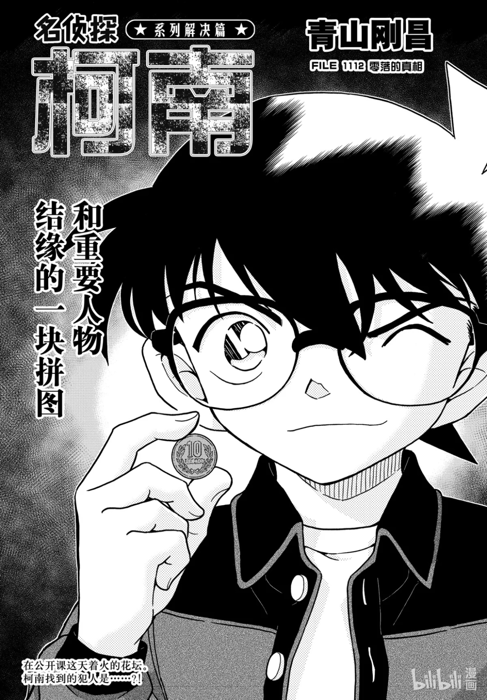
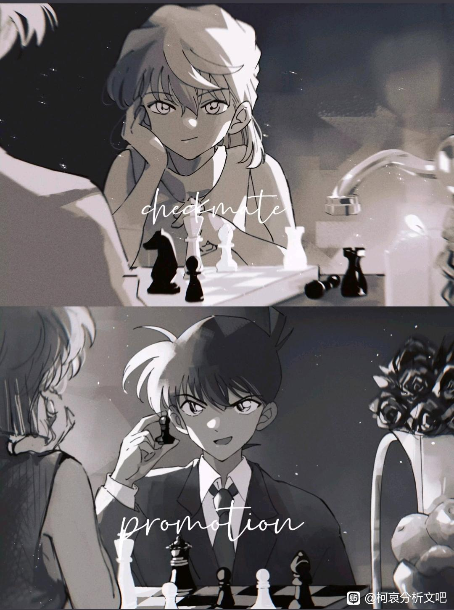
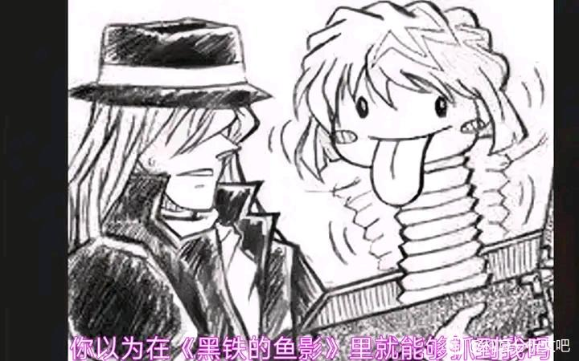
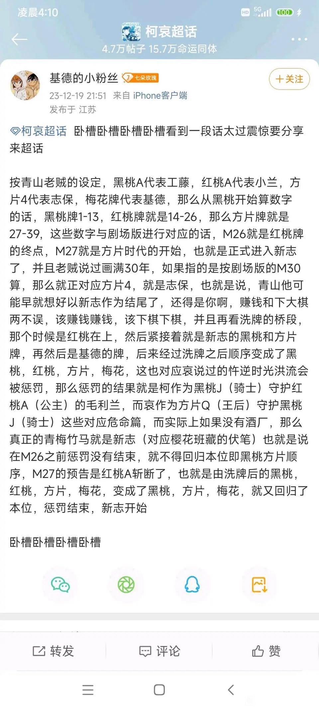

放一张我最爱的致敬封面作为镇楼

不知道发在这里合不合适，要是不合适我会删帖！
主要是记录一下在原作吃饭时的心路历程，以及补完原作后在粮仓吃饭频频被创伤后我的悲愤。
高亮：杂食，平等地吃每一对产品除了新兰（实在是太难吃），但是我对兰这个角色并不讨厌。
并且我也在吃饭途中逐渐认为，新兰和柯哀/新志是相辅相成的两条线，在形象的塑造上，抛开任何一方去谈都是偏颇的。
不是很正经的分析，放一点我眼中为什么新兰从出场就注定走向分别，以及为什么工藤和志保的相遇是恰到好处的，是福尔摩斯与艾琳。
主要是记录一下在原作吃饭时的心路历程，以及补完原作后在粮仓吃饭频频被创伤后我的悲愤。
高亮：杂食，平等地吃每一对产品除了新兰（实在是太难吃），但是我对兰这个角色并不讨厌。
并且我也在吃饭途中逐渐认为，新兰和柯哀/新志是相辅相成的两条线，在形象的塑造上，抛开任何一方去谈都是偏颇的。
不是很正经的分析，放一点我眼中为什么新兰从出场就注定走向分别，以及为什么工藤和志保的相遇是恰到好处的，是福尔摩斯与艾琳。
蹲
因为是杂谈所以会比较混乱，写到哪里是哪里！
真正决定要开始补漫画其实是因为一个剪辑，剪辑里，明美死的时候握住柯南的手，对他说：拜托你了，小小的侦探先生。
她的手滑下来，只留下大量的血迹，剪辑的画面和配音配乐太神了，我一瞬间幻视了one last kiss的第三幕有关于美里，总之就是那种味道。而我知道涂抹在侦探手上的血，又将在另一个画面里被侦探回报在小小的宫野志保的腿上。
在这个强烈的冲击性的画面里，我开始好奇青山到底把多少命运性赋予到她们姐妹的身上，于是我正式开始补漫。
真正决定要开始补漫画其实是因为一个剪辑，剪辑里，明美死的时候握住柯南的手，对他说：拜托你了，小小的侦探先生。
她的手滑下来，只留下大量的血迹，剪辑的画面和配音配乐太神了，我一瞬间幻视了one last kiss的第三幕有关于美里，总之就是那种味道。而我知道涂抹在侦探手上的血，又将在另一个画面里被侦探回报在小小的宫野志保的腿上。
在这个强烈的冲击性的画面里，我开始好奇青山到底把多少命运性赋予到她们姐妹的身上，于是我正式开始补漫。
2023-11-21 01:10 | 哀女王才是正道:啊啊啊是哪个剪辑呀想去看看！2023-11-21 06:19 | 极寒冻雨✨:回复 哀女王才是正道 :猜测一下，是B站UP洛丹做的《玄鸟》2023-11-21 07:10 | 我想开了🌺:回复 哀女王才是正道 :是香芋抹茶酥老师剪辑的悬溺，“既不准她死，也不准她逃”这一p！2023-11-21 07:11 | 我想开了🌺:回复 极寒冻雨✨ :洛丹老师的玄鸟里我最喜欢“我爱上你了”这一cut，非常非常的神……2023-11-21 07:36 | 极寒冻雨✨:回复 我想开了🌺 :刚才补完，7分钟好长啊2023-11-21 07:37 | 极寒冻雨✨:剪的的确很好，也由衷感慨下，中后期跟前中期相比，柯哀的互动、画风变化的真不小
回复 我想开了🌺 :顺带想请教下，one last kiss这一幕是在B站有视频吗？我也想品一品这个能产生“幻视”的片段2023-11-21 08:12 | 我想开了🌺:回复 极寒冻雨✨ :是我在看这个的前不久刚好看了阿虚子老师的one last kiss的eva剪辑，非常震撼，美里满手血亲吻真嗣然后把他推下去，那个诀别意味的凝视和这个剪辑里明美握住柯南的手说遗言的感情一瞬间在我脑内共振了，所以才会幻视2023-11-21 09:02 | 极寒冻雨✨:回复 我想开了🌺 :我没看过EVA，也不知道美里和真嗣是什么关系，但是刚才看了这个片段，感觉最后美里的眼神非常的复杂（对，明美最后看向柯南的眼神也给我这种感觉：遗憾、留恋、祈愿并存）；只能说但凡是幻视，就必然有共同之处啊（这种片段的冲击力就像是猛的干一杯老白干，后劲大啊）
直播？
简述一下在补漫之前我对作品的了解状态：动画只断断续续看过在电视上播出的一部分，只知道有小兰这个人物，完全不知道新兰互相喜欢，但对小哀一眼定终身（我一看到你就知道你是我的推！）
中途还吃过关于工藤是跟踪狂对小兰全方位把控超过十三年只为追到她做女朋友的洗脑包，我：真的假的，嗯嗯吃口。
然后又看了南英老师的红修篇分析，惊为天人：难他天？不会这是当代红楼梦和他的脂砚斋吧！
在以上的诸多信息中，我对小兰有了一个形象预设：不论是好的还是不好的，总之她是一个等待者的形象，她的行动模式就是什么都不做。
然后我翻开原作，短短五章之间我的形象成见立马被青山创飞。
中途还吃过关于工藤是跟踪狂对小兰全方位把控超过十三年只为追到她做女朋友的洗脑包，我：真的假的，嗯嗯吃口。
然后又看了南英老师的红修篇分析，惊为天人：难他天？不会这是当代红楼梦和他的脂砚斋吧！
在以上的诸多信息中，我对小兰有了一个形象预设：不论是好的还是不好的，总之她是一个等待者的形象，她的行动模式就是什么都不做。
然后我翻开原作，短短五章之间我的形象成见立马被青山创飞。
蹲
cy
在开场话，青山用很短的几格告诉我，小兰是一个运动系少女，空手道级别很强，和工藤新一是青梅竹马，家里有一位父亲在开设侦探事务所，但由于工藤风头太劲，于是完全没生意。
男方炫耀情书，女方则对以不理睬和拳头，总之，野蛮女友式的校园青涩恋爱喜剧开幕了。智力系男方和武力系女方的经典搭配，男方有着青春期男生很经典的面对喜欢的女孩“这个剑我今天一定要贩”行为，女方则在暴力与眼泪中勾勒出一个纯情少女的形象，两边到这里都非常ok！
在这里，稍微说句题外话。
我不认为开场的新兰糖只是为了在后期恶心一口所有人。当我在已知后续剧情的情况下看最开始的这两人，我能感受到青山对此刻的他们抱有一种怜爱之情。
正如他自称的，以及很多朋友们推理的那样，这是一部恋爱推理漫画。恋爱也需要推理，真命天女需要拨除不正确的选项，但推理需要逻辑，手法也需佐以证据。所以我的观点是，此时此刻所有展现的新兰糖都是“证据”，是为了展示工藤新一陷入恋爱时的表现，用以在某一日作为证据，让读者推理出：原来此时此刻，他就已经在喜欢宫野志保。
男方炫耀情书，女方则对以不理睬和拳头，总之，野蛮女友式的校园青涩恋爱喜剧开幕了。智力系男方和武力系女方的经典搭配，男方有着青春期男生很经典的面对喜欢的女孩“这个剑我今天一定要贩”行为，女方则在暴力与眼泪中勾勒出一个纯情少女的形象，两边到这里都非常ok！
在这里，稍微说句题外话。
我不认为开场的新兰糖只是为了在后期恶心一口所有人。当我在已知后续剧情的情况下看最开始的这两人，我能感受到青山对此刻的他们抱有一种怜爱之情。
正如他自称的，以及很多朋友们推理的那样，这是一部恋爱推理漫画。恋爱也需要推理，真命天女需要拨除不正确的选项，但推理需要逻辑，手法也需佐以证据。所以我的观点是，此时此刻所有展现的新兰糖都是“证据”，是为了展示工藤新一陷入恋爱时的表现，用以在某一日作为证据，让读者推理出：原来此时此刻，他就已经在喜欢宫野志保。
2023-11-21 02:42 | __灰原那傢伙:好！2023-12-08 21:45 | Crystina0S:开场新兰应该就是真的。名柯是开始连载不久后决定由三个月完结的短篇转长篇了，大概第十话及以前（第一本单行本全部）的内容都还是短篇框架下的，那几话的新兰应该就是差临门一脚的双向暗恋（甚至女方对男方客观上已经是恋情曝露不算暗恋了）
cy
赶上有人直播了
直播吗？蹲一个
dd
直播？
最喜欢看原著分析 支持( ˘ ³˘)❤
赶上直播啦
cy
好耶
cy
cy
cy
继续
cy
好好好
蹲蹲
蹲蹲
怎么看这么快的，我边看边做笔记，才看了二十卷
2023-11-21 00:34 | 我想开了🌺:可能因为我没有做笔记？因为我是纯看，然后时不时记录一下吐槽，之前统计了下我一天差不多在一百二十章左右（上头了会比较疯狂）2023-11-21 00:41 | 潔cccccc:做什么笔记啊，ca的分析吗2023-11-21 02:30 | 诗墨羽🌀:回复 潔cccccc :有一些自己的感想记录，分析人物设定和伏笔，想以后自己写东西做参考2023-11-21 02:31 | 诗墨羽🌀:回复 潔cccccc :漫画里很多地方确实和以前看的动漫留下的印象差别很大，所以感想也挺多的，二十卷看完已经写了1万多字了2023-11-21 02:32 | 诗墨羽🌀:回复 潔cccccc :柯哀分析自然是重点，不过才刚开始，毕竟哀18卷才登场。
蹲
cy


总之，画面一转游乐园约会，在女方眼中，男方不解风情，明明是约会却大讲福尔摩斯，殊不知这正是侦探面对喜欢女孩特色式的开屏行为。游乐园事件登场，于是我看到了工藤新一的出场形象定位：少年名侦探。
少年名侦探，听起来好像没什么特别需要拿出来说的，大家不是早就知道他是17岁的日本警察救世主了吗？
no！no！no！这里值得大讲特讲，也是我在新兰关系里得到的最初解答。我们都知道，对一个女高中生来说，喜欢上青梅竹马的帅哥名侦探理所当然，天经地义，但工藤新一为什么喜欢毛利兰？
他固然也是男高中生，对青春靓丽的青梅竹马产生朦胧好感好像也算合理，但同时，他被加身了这么多的名誉，如此天生俊才，相比之下，小兰就显得有些普通，太过于“灰姑娘”，以至于在后续工藤变小后，随剧情进展，二人差距越拉越大，大家也越来越疑惑，工藤新一到底喜欢小兰的什么地方？
我并不认为这仅仅是青春期少年的荷尔蒙作怪。
少年名侦探，听起来好像没什么特别需要拿出来说的，大家不是早就知道他是17岁的日本警察救世主了吗？
no！no！no！这里值得大讲特讲，也是我在新兰关系里得到的最初解答。我们都知道，对一个女高中生来说，喜欢上青梅竹马的帅哥名侦探理所当然，天经地义，但工藤新一为什么喜欢毛利兰？
他固然也是男高中生，对青春靓丽的青梅竹马产生朦胧好感好像也算合理，但同时，他被加身了这么多的名誉，如此天生俊才，相比之下，小兰就显得有些普通，太过于“灰姑娘”，以至于在后续工藤变小后，随剧情进展，二人差距越拉越大，大家也越来越疑惑，工藤新一到底喜欢小兰的什么地方？
我并不认为这仅仅是青春期少年的荷尔蒙作怪。
2023-11-21 21:47 | 宠猫咪的猫少♤:正解！！我从一开始看柯南那时候小哀还没出场，但那时候我就疑惑了，为什么工藤跟毛利兰能相爱？两个完全不同圈子的人。真的童话都没那么天真，人家灰姑娘好歹父亲是公爵。
好多人啊.jpg
睡醒了，继续！
书接上文，琴酒一棍，名侦探就此隐姓埋名，走上不归路（明面意思）
吧里好像有很多书友觉得如果按短篇画，结局就会是新兰，柯哀是在长达多年的连载中几经动荡不得已而为之。不过我的看法相反，这部作品的基调已经定好，如果当初没能展开连载，那么我猜恐怕是小学生侦探的开放式结局，回收第一话最后一格的伏笔，小兰在一无所知中等待“再也不会回来”的青梅竹马，而柯南继续作为小学生，和从组织中逃亡的神秘少女灰原哀走向未知的未来
睡醒了，继续！
书接上文，琴酒一棍，名侦探就此隐姓埋名，走上不归路（明面意思）
吧里好像有很多书友觉得如果按短篇画，结局就会是新兰，柯哀是在长达多年的连载中几经动荡不得已而为之。不过我的看法相反，这部作品的基调已经定好，如果当初没能展开连载，那么我猜恐怕是小学生侦探的开放式结局，回收第一话最后一格的伏笔，小兰在一无所知中等待“再也不会回来”的青梅竹马，而柯南继续作为小学生，和从组织中逃亡的神秘少女灰原哀走向未知的未来
2023-11-21 02:44 | 火红的羽翼:35！35层不见了！！2023-11-21 02:46 | 火红的羽翼:回复 火红的羽翼 :哦哦看到后面楼主说自己删了。但我总觉得34没有说完的样子2023-12-07 00:04 | 九年DULIU:一开始小兰的心语就给人感觉新兰be，但是后面柯南去小兰家住，我以为是见不到新一。可实际上似乎就是第一个意思。

之后再聊我为什么这样想，现在还是先焦点在小兰身上吧。
在这一话，工藤和小兰打个招呼就离开，小兰在行动上也毫无异议的接受了这一安排。这里请注意，由于是作为短篇漫画的背景展开，每一个格子的作用都弥足珍贵，因此这里剧情功能性大于其他一切。青山需要小兰这么做，而小兰在之后又被塑造成了一个会这样做的人。
我有在阿栗博士的分析里看到这里小兰回家花了将近两个半小时，在这期间，工藤经历了改天换地一闷棍，几经辛苦通过博士终于有了安身之所和能商量处境的对象。
然后，我对小兰的形象成见在这里第一次被打破。在回到家中后，她察觉到了事情不对，她的做法并非我预想的就在家中等到第二天上学，而是在夜晚直接跑出家门，径直去看看工藤有没有平安到家。
比起“不动如山”，在最初的两话中，她的形象似乎更贴近“侵略如火”呢。
在这一话，工藤和小兰打个招呼就离开，小兰在行动上也毫无异议的接受了这一安排。这里请注意，由于是作为短篇漫画的背景展开，每一个格子的作用都弥足珍贵，因此这里剧情功能性大于其他一切。青山需要小兰这么做，而小兰在之后又被塑造成了一个会这样做的人。
我有在阿栗博士的分析里看到这里小兰回家花了将近两个半小时，在这期间，工藤经历了改天换地一闷棍，几经辛苦通过博士终于有了安身之所和能商量处境的对象。
然后，我对小兰的形象成见在这里第一次被打破。在回到家中后，她察觉到了事情不对，她的做法并非我预想的就在家中等到第二天上学，而是在夜晚直接跑出家门，径直去看看工藤有没有平安到家。
比起“不动如山”，在最初的两话中，她的形象似乎更贴近“侵略如火”呢。
2023-11-25 06:15 | 沙漠雨林◎:啊啊改天换地的一闷棍笑死
工藤和兰的设定其实本不该交集，是工藤自己为了破解迷题才和兰有了联系，而在这过程中，维护这段感情的一直是兰，工藤的第一序列从来都是推理，其次才是其他，她的跟随和陪伴强制自己黏住了工藤，这也就是为什么，工藤分享推理兰不感兴趣，兰讲述日常工藤哈欠连连，这俩人性格这么变扭的情况下，俩人还能一起长大的原因，中间还杂了个园子给周围人打烟雾弹，这俩关系不简单，以至于工藤也习惯了这种生活方式，正义心爆棚的少年也会下意识做好守护身边人的决定，这就是早期的新兰糖
（35楼被我自己吃了，调整了下格式）
此后，就是柯南寄宿到毛利小五郎家，名侦探柯南的故事正式开始。
于是我有了对工藤新一“少年名侦探”身份的第一个认知。
你这家伙是不是没有朋友啊.jpg
正序看的时候还好，回想起来真是越想越怪，工藤新一好好一个大活人，第二天上学没见到了，竟然只有小兰真的有在惦记。如果不是中途杀出个服部，日常线竟然只有小兰园子日常约会、小五郎叔一家出游，少年侦探团历险记，柯南你作为工藤新一的时候不会只有园子和小兰是你的亲友吧，不会吧不会吧？
此后，就是柯南寄宿到毛利小五郎家，名侦探柯南的故事正式开始。
于是我有了对工藤新一“少年名侦探”身份的第一个认知。
你这家伙是不是没有朋友啊.jpg
正序看的时候还好，回想起来真是越想越怪，工藤新一好好一个大活人，第二天上学没见到了，竟然只有小兰真的有在惦记。如果不是中途杀出个服部，日常线竟然只有小兰园子日常约会、小五郎叔一家出游，少年侦探团历险记，柯南你作为工藤新一的时候不会只有园子和小兰是你的亲友吧，不会吧不会吧？
2023-11-21 05:37 | 月落の鎄傷※:确实，我看的时候也是这么想，你这家伙没有朋友吗？2023-11-25 01:34 | SherryTeddy:其实就把工藤新一当配角，而且是高度附属于他人（柯南的影，小兰的男友）的配角会发现很多不合理的地方也都能接受了2023-11-25 08:30 | long126zhen:呃，要这么算，工藤新一初次走上侦探道路是一年前的飞天密室案，那个时候他甚至是没有参与查案的资格的，仅仅用了一年，工藤新一就成为了“日本警察的救世主”，期间包括死罗神事件、工藤新一对决怪盗基德事件，甚至第一集的案件都是他单独行动的，所以……他一直就不怎么上课，哪来的时间交朋友2023-11-25 08:38 | long126zhen:园子、小兰是新一的青梅竹马，从小同校到大的关系，还有就是中道等以前足球部的朋友（修学篇新一的室友），他不是没有朋友，而是他的朋友有自己的日常并且不需要掺和侦探世界，他们的高中生涯是正常的，对工藤新一不上学也是接受的。小兰和园子长期不上学去哪儿都得遇上几个案子才是异类。2023-11-26 04:11 | 我想开了🌺:回复 long126zhen :他是在成为柯南之后才正式休学，原作中也没有提到工藤时期他是否经常不上课，不过类比服部的情况，我觉得他还是有在正常进行学业的咧，不然不管是服部还是和叶还是园子小兰乃至后期加入的世良，大家总不能全员都是挂名上学状态吧。不过这个毕竟没有更多信息，也只是我的看法啦。2023-11-26 04:14 | 我想开了🌺:回复 long126zhen :“朋友”的定义各有不同，我不觉得诸如中道这些人是他的朋友诶，我认为的朋友是更亲近的关系，如园子、小兰、服部，或者是变小后遇到的小三只，小兰也会参加空手道集训，但是会一起出门逛街的依然是园子，集训的同学不能算小兰的朋友，园子和小兰才是朋友。我是这么认为的。2023-11-29 10:15 | Yao_CPT:回复 我想开了🌺 :青山有說新一沒怎麼登場還幫他設定親友太麻煩了所以沒設定。但當時不夠成熟沈穩做為囂張的孤獨天才的設定也是說得過去哈2023-11-30 19:43 | 我想开了🌺:回复 Yao_CPT :！原来是这样，不过我也一定程度认为有这方面的原因，毕竟少侦在原作中带来的环境温差，以及危命篇他看到三小只和假扮他的灰原一起上学，那个微妙的有点怅然和释然的表情，我觉得青山可能多少也有这方面塑造的意思2023-11-30 21:23 | Yao_CPT:回复 我想开了🌺 :有可能，畢竟73很喜歡當謎語人，表面上的理由不見得是真的2024-02-10 18:29 | 世上不必有节操:回复 Yao_CPT :至少现在的设定已经完全可以认为变小之前的他没有类似黑鸡这样的铁杆好兄弟，只有关系还不错的类似中道之类的
在哀没登场之际，最大的对比就是步美和兰，在性格方面，步美将近于兰，且步美更喜欢冒险，所以在最初之际，孤僻的小工藤是有些排斥亦或者嘴硬兰的粘人属性的。而在工藤的人际关系全部断开，一切回到原点，步美的粘人和兰又何其相似，虽然柯南已经不是当初的小工藤，但他对这些奇思妙想的小学生也是打算敬而远之的，但就是步美等人表现出的冒险精神，让柯南态度发生了极大的转变，以至于愿意带着他们胡闹，也就是说，侦探团带给他的一切，是工藤童年所没有的，大家都说三小弥补了哀的童年，其实不止，还弥补了工藤的
2023-11-21 21:54 | 宠猫咪的猫少♤:天呐！！你不说我没都仔细想过，不过确实感觉之所以现在成了柯南假扮工藤新一的局面，其实能看出来柯南现在更适应变小后的生活。2023-11-21 21:54 | 宠猫咪的猫少♤:除了必要适应以外，估计他更多的是因为三小只的纯真带给他不一样的感受以至于他适应了柯南这个身份了。回到工藤新一他没了三小只这样存在的朋友以后他反而觉得约束，才会有了修学篇的不自在的工藤新一。
这里还有两个对比就是工藤第一次变化回自己向往的高中生自己，面对孩子们的茫然时的怅然失落，和休学旅行下意识的表现成柯南的模样，都代表他更喜欢柯南时候的自己，变化工藤的心念也不在那么强烈，开始是为了回应兰，到后面，是因为放不下柯南，其他我也就不多说了，lz的帖子讲的很有说法，cy吃瓜了
第一个事件，社长女儿绑架案，同样，这个事件作为早期短篇的背景展开2，功能性大于其他。主要负责展开毛利一家的设定。
毛利一家人（包括小兰和小五郎叔）一开始都并不是一个正面的形象。
垃圾堆一样的生活环境尚在其次，这次事件中，柯南老毛病发作，追着线索出门，全然忘记自己此时是个无力小学生，而毛利叔和小兰，竟然也一点都没管这么大一个小孩说不见就不见，一点要去找的意思都没有。毛利叔作为前刑警，此处就当做是被酒喝昏头了，但是小兰，你在这一话的作为，除了最后成功救回差点被打死的柯南刷回了印象分，和我印象中善良女主人公的形象未免也有点天差地别了？
毛利一家人（包括小兰和小五郎叔）一开始都并不是一个正面的形象。
垃圾堆一样的生活环境尚在其次，这次事件中，柯南老毛病发作，追着线索出门，全然忘记自己此时是个无力小学生，而毛利叔和小兰，竟然也一点都没管这么大一个小孩说不见就不见，一点要去找的意思都没有。毛利叔作为前刑警，此处就当做是被酒喝昏头了，但是小兰，你在这一话的作为，除了最后成功救回差点被打死的柯南刷回了印象分，和我印象中善良女主人公的形象未免也有点天差地别了？
我在这里初步得出了结论，不论是光鲜亮丽的工藤新一，还是会对柯南直白表达对心上人恋慕的纯情少女小兰，他们的内核其实都不是最表层给大家看到的那个样子。
小兰并不是简单的善良灰姑娘，工藤也不仅是光彩的少年名侦探。
小兰并不是简单的善良灰姑娘，工藤也不仅是光彩的少年名侦探。
2023-11-30 06:43 | 羽之萱:是的 我小时候就很纳闷 一个利己主义者怎么写着写着就变成善良的天使了……
在早期，柯南还没有在毛利叔和高木警官这里重刷信赖值和名誉度，小号白手起家，条件十分艰苦，几乎触碰不到事件——谁也不会让小孩子直面杀人事件啊！
（这里某些变小的名侦探有没有良心痛）
所以我很惊讶的发现，在这个柯南无法直接介入事件的尴尬时期，是小兰在做桥梁。冲野洋子遭遇的跟踪案件转密室凶杀案，是小兰说想看女明星的房间，十亿日元抢劫案，也是小兰想要到赛马场去，所以柯南才得以在现场。
在早期，小兰的形象竟然是非常主动的，她会主动跟着父亲到各种场所，并且热衷于出行，柯南也因此能够出现在各个案发现场。
她固然也会给柯南的推理带来阻力，但也是出于对小孩子的看顾，在早期直到山庄绷带怪人事件这里，我对小兰的印象都很不错。
所以绷带怪人事件带给我的茫然也来的十分突然。
（这里某些变小的名侦探有没有良心痛）
所以我很惊讶的发现，在这个柯南无法直接介入事件的尴尬时期，是小兰在做桥梁。冲野洋子遭遇的跟踪案件转密室凶杀案，是小兰说想看女明星的房间，十亿日元抢劫案，也是小兰想要到赛马场去，所以柯南才得以在现场。
在早期，小兰的形象竟然是非常主动的，她会主动跟着父亲到各种场所，并且热衷于出行，柯南也因此能够出现在各个案发现场。
她固然也会给柯南的推理带来阻力，但也是出于对小孩子的看顾，在早期直到山庄绷带怪人事件这里，我对小兰的印象都很不错。
所以绷带怪人事件带给我的茫然也来的十分突然。
cy
🐴
绷带怪人事件里，园子组织了一场“联谊”。
很显然，园子正处于还没有遇见真命天男前的积极择偶状态，作为一个千金大小姐，这对她而言甚至算是正事。因此，当长发男子（不记得名字了）邀请小兰出门进行约会式散步，并且小兰还真就去了，我：啊？
我的心情和园子柯南高度同步了，为啥？你不是喜欢工藤吗？？
这次的事件，我认为和赤木量子事件需要共同看待。
我们来看看赤木量子找上门时，柯南的态度。当赤木量子拿出工藤的照片，询问他的下落，柯南：难道他是你的初恋情人？
我：啊？
登场话里他通过展示女生的情书来刺激小兰，观察小兰的态度，我是理解这个行为的。但是你现在已经从小兰这里得到了她亲口说的喜欢新一，那你这是在干嘛？
很显然，园子正处于还没有遇见真命天男前的积极择偶状态，作为一个千金大小姐，这对她而言甚至算是正事。因此，当长发男子（不记得名字了）邀请小兰出门进行约会式散步，并且小兰还真就去了，我：啊？
我的心情和园子柯南高度同步了，为啥？你不是喜欢工藤吗？？
这次的事件，我认为和赤木量子事件需要共同看待。
我们来看看赤木量子找上门时，柯南的态度。当赤木量子拿出工藤的照片，询问他的下落，柯南：难道他是你的初恋情人？
我：啊？
登场话里他通过展示女生的情书来刺激小兰，观察小兰的态度，我是理解这个行为的。但是你现在已经从小兰这里得到了她亲口说的喜欢新一，那你这是在干嘛？
cy
所以我发现，好像新兰也并不是上来就情深义重，或者像我吃的洗脑包一样，是男方对女方单方面的痴恋。
在这个阶段里，他们两边的情感都处在有朦胧好感的阶段，我称之为“知好色而慕少艾”。
人少，则慕父母；知好色，则慕少艾。少年男女，在青春期荷尔蒙的作用下，自然而然的喜欢上青梅竹马。这个时期，他们之间的情感链接其实是薄弱的。
所以小兰会对和知名歌手会面感兴趣，也不会强硬拒绝帅哥的约会式散步邀约。工藤会在有女生拿着他照片上门的时候当面调侃“难道他是你的初恋情人”。
而在吃醋的时候，双方也都会显露不理智的一面。只不过，他们不理智的理由各有不同，而小兰的反应更为剧烈，我个人认为，这和小兰的成长经历息息相关。
在这个阶段里，他们两边的情感都处在有朦胧好感的阶段，我称之为“知好色而慕少艾”。
人少，则慕父母；知好色，则慕少艾。少年男女，在青春期荷尔蒙的作用下，自然而然的喜欢上青梅竹马。这个时期，他们之间的情感链接其实是薄弱的。
所以小兰会对和知名歌手会面感兴趣，也不会强硬拒绝帅哥的约会式散步邀约。工藤会在有女生拿着他照片上门的时候当面调侃“难道他是你的初恋情人”。
而在吃醋的时候，双方也都会显露不理智的一面。只不过，他们不理智的理由各有不同，而小兰的反应更为剧烈，我个人认为，这和小兰的成长经历息息相关。
2024-01-27 07:58 | 贴吧用户_5N451RG:和我本人好像啊...
 摩多摩多，孩子爱看
摩多摩多，孩子爱看2023-11-21 22:18 | 宠猫咪的猫少♤:孩子真的爱看有理有据的真的太爽了
赤木量子事件，小兰呈现出一种暴走式的狂怒。但论关系，此时工藤和她并非男女朋友，她并没有“捉奸”的立场，论情感，上面我们也说了，大家都还在知好色而慕少艾的阶段，谈不上有多深厚。那么小兰异常的激动和愤怒到底从何而来。
我更愿意称她此刻的情感状态为恐慌。
在之后，她还会在很多与妃英理有关的时间中展现这一情感，其中的内核是一致的。
首先，我们需要知道小兰是一个什么样的人。
她生活在一个父母分居的家庭，从六岁开始跟着父亲生活。小五郎把家里搞得一团糟，甚至需要等到女儿回家才能吃上饭，不然就只能出去解决，说明小兰在很长时间以来一直扮演者照顾者的角色。
想想是不是很奇怪？从后面樱花班篇我们可以知道，小兰上幼儿园的时候，妃英理已经开始作为律师出道了。因此决定分居时，妃英理绝不是没有经济来源，无法抚养女儿的情况，而作为父亲的毛利叔显然并不具备照顾女儿的能力。
妃英理非常爱小兰，原作中也从来没有关于妃英理做饭不好吃的情节。那么一位既深爱女儿，又完全有能力独自抚养她的母亲，和一个完全没有自理能力，甚至需要女儿反过来照顾的父亲，最终呈现在观众面前的却是小兰跟着父亲长大这一结果呢？
我更愿意称她此刻的情感状态为恐慌。
在之后，她还会在很多与妃英理有关的时间中展现这一情感，其中的内核是一致的。
首先，我们需要知道小兰是一个什么样的人。
她生活在一个父母分居的家庭，从六岁开始跟着父亲生活。小五郎把家里搞得一团糟，甚至需要等到女儿回家才能吃上饭，不然就只能出去解决，说明小兰在很长时间以来一直扮演者照顾者的角色。
想想是不是很奇怪？从后面樱花班篇我们可以知道，小兰上幼儿园的时候，妃英理已经开始作为律师出道了。因此决定分居时，妃英理绝不是没有经济来源，无法抚养女儿的情况，而作为父亲的毛利叔显然并不具备照顾女儿的能力。
妃英理非常爱小兰，原作中也从来没有关于妃英理做饭不好吃的情节。那么一位既深爱女儿，又完全有能力独自抚养她的母亲，和一个完全没有自理能力，甚至需要女儿反过来照顾的父亲，最终呈现在观众面前的却是小兰跟着父亲长大这一结果呢？
2024-03-02 01:57 | 堀绘云生º:73说了，前面的剧场版虽然不纳入主线但是有些设定是沿用的，当时举的例子就是英理做饭不好吃的设定是产自剧场版并一直延续。但是英理做饭不好吃是一回事，小五郎做饭也不见得好吃到哪儿去，至少漫画里都是小兰自己做饭
我的答案是，这是恐怕是小兰自己选择的结果。
因为看起来无所不能的母亲不需要她，而什么都做不到的父亲需要她。
因为看起来无所不能的母亲不需要她，而什么都做不到的父亲需要她。
2023-11-25 06:17 | 沙漠雨林◎:这个举双手赞同！2024-02-09 00:41 | ლ卿不言ლ:我觉得也是
我认为小兰在赤木量子事件中展现的“恋爱脑”是完全符合人设的。我认为她在恋爱观上因父母婚姻的不幸而陷入了痛苦代偿。
她其实依然崇拜身为侦探的父亲，即使毛利不太靠谱；眷恋着母亲，即使母亲离开了他们。
她早早进入主妇模式照顾着家庭。她会在毛利表现出好色的时候说就是因为你这样母亲才被气走了，所以得知新一疑似出轨，她才会嫉妒得完全失去理智，什么都管不了了，因为这触碰到她核心的痛苦了。
原作中仍没有揭示毛妃二人到底为什么闹到非要分居不可，只有一些侧面的描写，通过妃英理之口表示“还不能原谅他”。显然，毛妃二人的感情并没有破裂，所以恐怕并不是真的出轨这种不可挽回的理由。但我们也能看到，毛利叔年轻时作为刑警，不太着家，而妃英理性格强势，在律政届出道后，更加重了这一性格特点。
于是我们来看看在小兰眼中这一切最终呈现的样子：
毛利小五郎工作繁忙又不着调，导致妃英理离开了家庭。而不用照顾丈夫和女儿的她，彻底在律政届大展身手。她成为了不败女王，却再也不是某个家庭中贤惠的妻子，也不会再重新成为这样的角色。
这一切对于小兰来说构成了她最深层次的痛苦：就是因为花心，母亲才会生气离开；工作就这么重要吗，所以母亲丢下了我。
她其实依然崇拜身为侦探的父亲，即使毛利不太靠谱；眷恋着母亲，即使母亲离开了他们。
她早早进入主妇模式照顾着家庭。她会在毛利表现出好色的时候说就是因为你这样母亲才被气走了，所以得知新一疑似出轨，她才会嫉妒得完全失去理智，什么都管不了了，因为这触碰到她核心的痛苦了。
原作中仍没有揭示毛妃二人到底为什么闹到非要分居不可，只有一些侧面的描写，通过妃英理之口表示“还不能原谅他”。显然，毛妃二人的感情并没有破裂，所以恐怕并不是真的出轨这种不可挽回的理由。但我们也能看到，毛利叔年轻时作为刑警，不太着家，而妃英理性格强势，在律政届出道后，更加重了这一性格特点。
于是我们来看看在小兰眼中这一切最终呈现的样子：
毛利小五郎工作繁忙又不着调，导致妃英理离开了家庭。而不用照顾丈夫和女儿的她，彻底在律政届大展身手。她成为了不败女王，却再也不是某个家庭中贤惠的妻子，也不会再重新成为这样的角色。
这一切对于小兰来说构成了她最深层次的痛苦：就是因为花心，母亲才会生气离开；工作就这么重要吗，所以母亲丢下了我。
2023-11-25 01:40 | SherryTeddy:其实我觉得兰对“出轨抓奸”一类的事高度敏感，可能也跟耳濡目染的父亲职业特点有关，现实里侦探本来就会经常接手调查出轨之类的委托，像新一服部那样能参与警方办案都属于人中龙凤了
她的不理智完全是一种PTSD，因为曾受过创伤。
妃英理离开，毛利整日酗酒，生活一团糟，对六岁的小兰来说天崩地裂也就是这样了。她并不是生下来就会照顾家庭的，但现在母亲缺位，她自己代替这个角色，从六岁到十六岁。
她渴望平凡的生活，幸福的家庭，代偿性地扮演一个贤惠妻子的角色，因为在她认知中这就是“幸福家庭”应该有的样子，童年中失去的东西在逐渐成长中，空洞没有被弥补，反而随年月流失而弥深。她的诉求越来越大，越来越迫切。心上人突然消失触发了这种不安，他离开了她，就像母亲当年一样。
相似的场景也发生在危命篇的酒店约会，所以我们会看到她不理智地暴走，会迁怒柯南这样一个在她眼中本该无辜的小孩子，会不愿意听解释，因为她恐惧于重蹈覆辙，她害怕再度被抛弃，所以我们能看到她在心中确认柯南是新一后，会对他说：别丢下我一个人。
妃英理离开，毛利整日酗酒，生活一团糟，对六岁的小兰来说天崩地裂也就是这样了。她并不是生下来就会照顾家庭的，但现在母亲缺位，她自己代替这个角色，从六岁到十六岁。
她渴望平凡的生活，幸福的家庭，代偿性地扮演一个贤惠妻子的角色，因为在她认知中这就是“幸福家庭”应该有的样子，童年中失去的东西在逐渐成长中，空洞没有被弥补，反而随年月流失而弥深。她的诉求越来越大，越来越迫切。心上人突然消失触发了这种不安，他离开了她，就像母亲当年一样。
相似的场景也发生在危命篇的酒店约会，所以我们会看到她不理智地暴走，会迁怒柯南这样一个在她眼中本该无辜的小孩子，会不愿意听解释，因为她恐惧于重蹈覆辙，她害怕再度被抛弃，所以我们能看到她在心中确认柯南是新一后，会对他说：别丢下我一个人。
2023-11-21 22:23 | 宠猫咪的猫少♤:有的道德绑架，而不是她本意的道德绑架，是那种溺水的人用尽全力攀附救命稻草的窒息感的那种本能的道德绑架。或者已经不能说是道德绑架了，是她把自己的不幸强加到别人身上强制获取幸福感的那种感觉2023-11-25 08:55 | long126zhen:或者说，她把毛利小五郎无法给予的父爱和丈夫的责任强加到了工藤新一的身上。对她而言侦探不是好职业，尽管她父亲后面渐渐当上了名侦探，名利双收。可新一不能，因为她知道父亲是个什么样子的，新一绝不能成为另外一个小五郎，当小说家、足球选手更好。新一不能沉迷推理，应该陪她玩，像照顾孩子一样2023-11-26 04:16 | 我想开了🌺:回复 long126zhen :毛利叔其实也很爱女儿，不过对小兰来说就跟妃英理的爱一样，没有“作用”，即使父母双方都爱孩子，甚至都爱彼此，家庭依然四分五裂，各种意义上反而加重了创伤吧
cy
好像有点太煽情了，不过写的时候确实在细想中对小兰的状态有些心痛。
但接下来，就要讲点可怜之人可恨之处的地方了。
上面有说，家庭的不幸使得小兰恐惧于被抛弃，这听起来似乎和我在52楼所说的这是她自己选择的结果有矛盾？
我要说的是，对一个六岁的小孩子来说，询问她你是要跟着爸爸生活还是要跟着妈妈生活，不管怎么选，这个问句本身对小孩来说就已经包含了抛弃的含义。母亲要从家庭中离开这个举动本身，对小孩子来说，就是对“我们”这个概念的抛弃。
而她选择了父亲，因为什么事都做不好的父亲更需要她。她下意识的选择了一个更安全的选项，并且在长达十年的时间里担任了照顾者的角色，而不是试图把毛利小五郎改造成全能好爹，可见她的性格里有下意识维持他人对自己需求的一面。
因此我们能看到，毛利好色不改小兰最多骂两句，妃英理疑似出轨（五郎生病妃英理约宠物医生篇）她就急了，重演暴走听不进人说话的状态，因为毛利好色归好色，完了回来还得靠女儿做饭吃，妃英理如果出轨，就真的可以彻底丢下毛利父女再也不回来。
她对妃英理的要求似乎格外严苛，这个态度好像似曾相识？
现在我们能解释她为什么反复地称工藤为“推理宅”，说他是自大狂，时常希望工藤比起推理，把她放在第一位。本质上，这和她对待妃英理的内核是相似的：另一方太过优秀，他们都没有那么需要她，因此她制造对方对她的需求，如果无法制造需求，那就制造亏欠。
但接下来，就要讲点可怜之人可恨之处的地方了。
上面有说，家庭的不幸使得小兰恐惧于被抛弃，这听起来似乎和我在52楼所说的这是她自己选择的结果有矛盾？
我要说的是，对一个六岁的小孩子来说，询问她你是要跟着爸爸生活还是要跟着妈妈生活，不管怎么选，这个问句本身对小孩来说就已经包含了抛弃的含义。母亲要从家庭中离开这个举动本身，对小孩子来说，就是对“我们”这个概念的抛弃。
而她选择了父亲，因为什么事都做不好的父亲更需要她。她下意识的选择了一个更安全的选项，并且在长达十年的时间里担任了照顾者的角色，而不是试图把毛利小五郎改造成全能好爹，可见她的性格里有下意识维持他人对自己需求的一面。
因此我们能看到，毛利好色不改小兰最多骂两句，妃英理疑似出轨（五郎生病妃英理约宠物医生篇）她就急了，重演暴走听不进人说话的状态，因为毛利好色归好色，完了回来还得靠女儿做饭吃，妃英理如果出轨，就真的可以彻底丢下毛利父女再也不回来。
她对妃英理的要求似乎格外严苛，这个态度好像似曾相识？
现在我们能解释她为什么反复地称工藤为“推理宅”，说他是自大狂，时常希望工藤比起推理，把她放在第一位。本质上，这和她对待妃英理的内核是相似的：另一方太过优秀，他们都没有那么需要她，因此她制造对方对她的需求，如果无法制造需求，那就制造亏欠。
2023-11-21 07:13 | 虬空:这么一解释确实把人物行为动因解释通了，我一直隐约觉得兰对父母的双标怪叫人不舒服的，但没认真思考过2023-11-21 08:04 | 我想开了🌺:细思恐极了，73是这么善于塑造角色的么？人物行动有流畅的深层逻辑，立体感十足
回复 虬空 :我一直认为青山在人物塑造上细腻到一种会让人非常震撼的地步，这一点在小兰的塑造上特别明显2023-11-21 08:49 | 夜城城主官方:有点恐怖啊...但这种形象的小兰，反而有种病态的美（？）有点病娇的感觉hhh（那种“你只能依靠我离开我你就活不下去”）但在漫画里的表现确实是不太讨喜的，但如果后期73把这个设定揭示出来，我感觉我反而会粉上小兰（心机病娇好诶（xp怪异））2023-11-21 10:32 | 柳奕則:很贊同──她制造对方对她的需求，如果无法制造需求，那就制造亏欠。2023-11-21 11:04 | 我想开了🌺:回复 夜城城主官方 :她的行为基本上是自己也没有认识到的无意识操作，我写的时候也觉得“嗯有点带劲”，再想下原作，嗯，还是算了2023-11-21 11:05 | 夜城城主官方:回复 我想开了🌺 :真的好可惜....要是小兰真的是这种病娇形象她的风评能好不少（坏人比拖后腿的人好多了www）2023-11-21 21:18 | 💥尖峰时刻⚡:回复 我想开了🌺 :这一段在卡拉OK事件体现得淋漓尽致，对着摄像头说“出来才能说明案子”，新一没理她之后，直接雪地受冻三小时2023-11-21 22:24 | 宠猫咪的猫少♤:回复 柳奕則 :俗称道德绑架2023-11-21 22:26 | 宠猫咪的猫少♤:回复 夜城城主官方 :实不相瞒，有的时候我看小兰我觉得我在照镜子2023-11-23 09:50 | 喝杯豆浆吧♤:所以我不喜欢这样的我，所以我不喜欢小兰【难怪有人说我有种病娇的感觉。。原来是这么回事】
很有道理，以妃英理的能力和上进心，她真的有机会选择彻底离开父女俩，而毛利则是一直原地踏步的那一个，同理可以代入新一和兰2023-11-25 06:40 | 沙漠雨林◎:哇这个想法真的很犀利！2023-11-28 02:52 | 明镜H止水:厉害了，楼主是不是学过心理学2023-11-28 03:58 | 我想开了🌺:回复 明镜H止水 :哇啊，过奖了。我并没有学过心理学的，只是基于表现反推逻辑，非专业分析！2023-12-21 03:47 | 陌上之霜:最后一段真相了2024-01-08 22:51 | 47锛坆鈥唂鈥唌:2024-03-21 04:08 | Fri0602:真的欸，我之前一直无法理解兰对父母的不同态度，原来是这样。

现在可以回答我34楼提出的疑问了，工藤新一为什么喜欢毛利兰？
我的答案是，最初是需求，之后是亏欠。
毛利兰确实曾在工藤新一身上制造这两样事物，但前者，工藤新一本人的性格要付很大的责任。
我们回到工藤“少年名侦探”的部分，谈谈为什么我说这个头衔值得单独拉出来讲。
其实说来特别简单，就是工藤新一没有朋友。
我的答案是，最初是需求，之后是亏欠。
毛利兰确实曾在工藤新一身上制造这两样事物，但前者，工藤新一本人的性格要付很大的责任。
我们回到工藤“少年名侦探”的部分，谈谈为什么我说这个头衔值得单独拉出来讲。
其实说来特别简单，就是工藤新一没有朋友。
在服部平次登场之前，工藤的身边除了园子和小兰，有谁跟他是好朋友，是可以互相讨论爱好，一起出游的关系吗？
一个都没有。
在工藤变小成为柯南，我们一开始可以看到，他对于重新当小学生这件事是不习惯的，是尴尬的。他偶然的和步美元太光彦这几个孩子同行，他一开始对少年侦探团的态度也是敷衍的。
但就是这么的不习惯，不情愿，敷衍，元太他们邀请他玩捉迷藏，他嘴上说着要不是被你们拉来，我就去参加其他活动了，最后不还是来了？孩子们也没把他腿绑上压他来玩，说明他心中其实对这段小小缘分结下的友谊是珍惜的。
红修篇，他去参加休学旅行，男生里竟然只有一个中道和他算得上是能说两句话的关系，其实也没得聊——不熟能聊出啥？不管是在小兰的回忆里，还是樱花班篇，小小的工藤拽的二万五八，他的爱好和智力水平也早就超越还在“你受优待我孤立你”的同班小孩。中学时代，足球还算有人跟他一起踢，能跟他聊福尔摩斯的就完全没有了。黑羽盗一的谜题篇里，他也是一个人就准备返回学校去探查图书室。也就是说在这么长的时间以来，能停留在他身边，跟他一起冒险，听他滔滔不绝地大讲福尔摩斯的，竟然只有小兰一个人。
一个都没有。
在工藤变小成为柯南，我们一开始可以看到，他对于重新当小学生这件事是不习惯的，是尴尬的。他偶然的和步美元太光彦这几个孩子同行，他一开始对少年侦探团的态度也是敷衍的。
但就是这么的不习惯，不情愿，敷衍，元太他们邀请他玩捉迷藏，他嘴上说着要不是被你们拉来，我就去参加其他活动了，最后不还是来了？孩子们也没把他腿绑上压他来玩，说明他心中其实对这段小小缘分结下的友谊是珍惜的。
红修篇，他去参加休学旅行，男生里竟然只有一个中道和他算得上是能说两句话的关系，其实也没得聊——不熟能聊出啥？不管是在小兰的回忆里，还是樱花班篇，小小的工藤拽的二万五八，他的爱好和智力水平也早就超越还在“你受优待我孤立你”的同班小孩。中学时代，足球还算有人跟他一起踢，能跟他聊福尔摩斯的就完全没有了。黑羽盗一的谜题篇里，他也是一个人就准备返回学校去探查图书室。也就是说在这么长的时间以来，能停留在他身边，跟他一起冒险，听他滔滔不绝地大讲福尔摩斯的，竟然只有小兰一个人。
2023-11-25 01:48 | SherryTeddy:现实中是有类似新一这样的同学，个人很优秀到了鹤立鸡群的地步，确实和身边大多数同龄人玩不来也没有太强的社交诉求，但本人性格还算外放独立自洽，而且身怀特技具有一定声望，身边群体也很难孤立霸凌他2024-01-07 22:58 | 贴吧用户_0AytbJD:听楼主描述，就是两个有特殊需求的人就这么凑在了一起，感觉并不是很健康的一种状态2024-02-10 18:34 | 世上不必有节操:回复 SherryTeddy :这不就是新一吗2024-02-10 18:35 | 世上不必有节操:回复 贴吧用户_0AytbJD :新一并不是没有朋友，但是没有关系好到像黑鸡这样可以一起在破案时脑门拉电闸的高智朋友
lz好会分析
在早期，工藤和小兰的表层诉求是相对一致的。
工藤的社交圈狭窄，父母远在国外，几乎不出现，而园子大小姐有自己的生活，她同样对福尔摩斯不感兴趣。
少年天才孤独地渴求能与他交谈的人，哪怕只是听他说呢？以至于一旦有这样的人出现，即使对方并不真的能和他达成理解，他也渴求着对方的目光。
无限的讨好和让步，只是为了让她停留下来，他渴望“陪伴”和“注视”。他从有希子那里继承了爱出风头、喜欢刺激的那一面，希望得到鲜花与夸赞。这是一个人没办法做到的事——没有两个人，要怎么“交谈”？所以他对小兰产生了需求，而小兰恰好出于自身的内核，她喜欢“被需求”，她会让渡自己的感受，以满足他人，同样也是为了获得他人的关注与好感，以满足自我的情感需求。
在一开始，工藤和小兰是一样的。
但是当他吃下a药，变成小孩，世界在这一瞬间改变了。他遇见越来越多的人，越来越多的人停下来，他们聆听他、注视他，干涉他，改变他。他们改变引力场，将被隔绝在名誉堆上的孤独天才拉回地面。他的视角变低了——却有比高处时看到的黑白二色更丰富的颜色被碰撞到他眼前。
他的诉求也开始改变，只是表层的聆听已经不够了，他最核心的渴望被剥开摆上来，他渴望“理解”。
他们的核心诉求原本就是不一样的，a药融化了工藤的表层，也令分歧露出台面：他不会再满足于表层的诉求了。
工藤的社交圈狭窄，父母远在国外，几乎不出现，而园子大小姐有自己的生活，她同样对福尔摩斯不感兴趣。
少年天才孤独地渴求能与他交谈的人，哪怕只是听他说呢？以至于一旦有这样的人出现，即使对方并不真的能和他达成理解，他也渴求着对方的目光。
无限的讨好和让步，只是为了让她停留下来，他渴望“陪伴”和“注视”。他从有希子那里继承了爱出风头、喜欢刺激的那一面，希望得到鲜花与夸赞。这是一个人没办法做到的事——没有两个人，要怎么“交谈”？所以他对小兰产生了需求，而小兰恰好出于自身的内核，她喜欢“被需求”，她会让渡自己的感受，以满足他人，同样也是为了获得他人的关注与好感，以满足自我的情感需求。
在一开始，工藤和小兰是一样的。
但是当他吃下a药，变成小孩，世界在这一瞬间改变了。他遇见越来越多的人，越来越多的人停下来，他们聆听他、注视他，干涉他，改变他。他们改变引力场，将被隔绝在名誉堆上的孤独天才拉回地面。他的视角变低了——却有比高处时看到的黑白二色更丰富的颜色被碰撞到他眼前。
他的诉求也开始改变，只是表层的聆听已经不够了，他最核心的渴望被剥开摆上来，他渴望“理解”。
他们的核心诉求原本就是不一样的，a药融化了工藤的表层，也令分歧露出台面：他不会再满足于表层的诉求了。
2023-11-22 01:54 | 皮卡丘的番茄:这也是人性的弱点之一，渴求，这两人刚好掉进了这个陷阱2023-11-25 09:03 | long126zhen:呃，其实这个观点不算对，新一并没有意识到自己需要毛利兰，前期是毛利兰死缠着（盗一事件），之后是被园子强行推CP推出来的，所以他当着毛利兰面炫耀我情书多、当着量子面问是不是喜欢新一，之后变得只剩小兰、园子这么点交际圈是因为博士不愿意收留他，柯南的身份没的选择。之后就全是愧疚了。2023-12-08 21:44 | 贴吧用户_7PX2yAy:这一段太会写了，！2024-01-08 19:55 | RE-Zero:其实我觉得这一段73最最重要的提示就是兰对柯南的告白。当时新一刚变成柯南，然而他也因此发现，父母博士比起在乎他是不是新一，更在乎他是不是安全，身边竟然只有兰，在乎着这个新一。兰在乎新一这个身份，所以我要回去。这块我觉得特别明显地表达了工藤的需求。
写到这里也好感慨：得到再多名誉，不如得到一个知己。
一想到服部是作为志保上场前的替代角色登场，也就是说，如果是短篇，志保不仅是他的真命天女，也是他唯一的知己。
所以我也很吃平新，他可是孤独的少年名侦探交到的第一个志同道合的好朋友啊！
一想到服部是作为志保上场前的替代角色登场，也就是说，如果是短篇，志保不仅是他的真命天女，也是他唯一的知己。
所以我也很吃平新，他可是孤独的少年名侦探交到的第一个志同道合的好朋友啊！
2023-11-22 00:40 | 宠猫咪的猫少♤:这里也能更好的解释，为什么除了父母阿笠博士以外，柯南真正信任的人基本上都知道他的真实身份。因为他们都是他的知音知己。理解他，跟他有共同话语。2023-11-22 01:56 | 皮卡丘的番茄:回复 宠猫咪的猫少♤ :相似的人会吸引到同类，不是一个世界的必定会被排斥2023-11-22 02:56 | 宠猫咪的猫少♤:回复 皮卡丘的番茄 :是的
已收藏莫辜负
cy
好强
已收藏，莫辜负。
cy
cy
cy
cy
如果晚上没有更新，就是看阿栗博士的原作逐集分析合集看进去了。
顺便推一下洛丹老师的剪辑《无人诗》非常非常神的作品……
前天看贝克街的亡灵，忍不住想，青山真的是，虽然小兰被设定成三国志通一开始是出于意外，但这个设定毕竟延续下去了，青山宁可让她懂三国志都不肯让她像剧场版这样懂福尔摩斯，这燕国地图直接雕匕首上了属于是。怎么想都是福尔摩斯比三国志要好读得多吧！
顺便推一下洛丹老师的剪辑《无人诗》非常非常神的作品……
前天看贝克街的亡灵，忍不住想，青山真的是，虽然小兰被设定成三国志通一开始是出于意外，但这个设定毕竟延续下去了，青山宁可让她懂三国志都不肯让她像剧场版这样懂福尔摩斯，这燕国地图直接雕匕首上了属于是。怎么想都是福尔摩斯比三国志要好读得多吧！
2023-11-21 08:33 | 月落の鎄傷※:南英的原作分析也不错2023-11-21 11:02 | 我想开了🌺:回复 月落の鎄傷※ :南英老师的作品已经全部拜读完毕了！2023-11-21 20:40 | 月落の鎄傷※:回复 我想开了🌺 :hhhh楼主速度好快
分析地好好，收藏了，lz加油
已收藏，莫辜负。
心理学出发的分析视角十分有趣，也确实帮助合理化了人物某些奇怪行为的动机
心理学出发的分析视角十分有趣，也确实帮助合理化了人物某些奇怪行为的动机
dd
收藏了，好棒啊

蛙趣，收藏了
小兰对英理的态度确实很容易让人联想到对新一 “她/他为了工作可以轻易离开家庭”但对于实际的、本质的分歧却不愿意去理解，可毛利夫妇自己是糊涂账，新一也是作者钦点的恋爱白痴，园子自己拎的清却对小兰那边表现得像个乐子人……也难怪大家会把小兰清醒的希望寄托在世良身上
“她/他为了工作可以轻易离开家庭”但对于实际的、本质的分歧却不愿意去理解，可毛利夫妇自己是糊涂账，新一也是作者钦点的恋爱白痴，园子自己拎的清却对小兰那边表现得像个乐子人……也难怪大家会把小兰清醒的希望寄托在世良身上 然而现在世良在自己的线里都自身难保中。
然而现在世良在自己的线里都自身难保中。
“她/他为了工作可以轻易离开家庭”但对于实际的、本质的分歧却不愿意去理解，可毛利夫妇自己是糊涂账，新一也是作者钦点的恋爱白痴，园子自己拎的清却对小兰那边表现得像个乐子人……也难怪大家会把小兰清醒的希望寄托在世良身上然而现在世良在自己的线里都自身难保中。看完沉默的十五分钟了，本来是去吃我产品的，一本满足！结局惯例卖新兰柯兰。
我：来都来了，顺便吃口。
看到柯南在一个人滑在雪上准备去引发雪崩，另一边毛利叔和小兰坐着车远远相逢，此时弹幕：一眼万年名场面！
我信了，然后发现是小兰单方面看到柯南，柯南一心赶着去搞雪崩。
我：……就这？
滑板坏了，但是成了，柯南滑着坏了的滑板冲下来，跟雪崩生死时速，这次总算是和小兰互相看到，但场面非常危急，我也好急，这时候弹幕又开始前方高能，我又信了。
完了小兰就保持着那个从车里探出脑袋的动作一路定格动画一样走远了。
我：隐隐想着万一是小兰从车里飞车出门救男主的我到底在期待什么。
最后柯南被埋在雪地里，小兰一个独立镜头拼命刨雪，有点感动，画面一转原来大家全在刨，我的感动消失了。
小兰难得在智力上高光一次想到要给柯南打电话，有一说一，这里电话打通之后还是找不到人，她急得把手都刨出血了我真的感动了，本来我已经开始接受她通过幸运/心电感应，反正不管是啥我都认了，赶紧给小柯捞出来吧，结果她反手给工藤打了电话，让工藤保佑他，我：……？
啊？？？
最后还是柯南被手机震动震醒然后，靠！自！己！出来了。兰姐抱着小柯感动哭泣，总之大团圆了，所有人都很高兴。
只有屏幕前的我好像小丑。
含泪倒回去多看了两眼我推一边担心一边镇定计时，大吃一碗！
我：来都来了，顺便吃口。
看到柯南在一个人滑在雪上准备去引发雪崩，另一边毛利叔和小兰坐着车远远相逢，此时弹幕：一眼万年名场面！
我信了，然后发现是小兰单方面看到柯南，柯南一心赶着去搞雪崩。
我：……就这？
滑板坏了，但是成了，柯南滑着坏了的滑板冲下来，跟雪崩生死时速，这次总算是和小兰互相看到，但场面非常危急，我也好急，这时候弹幕又开始前方高能，我又信了。
完了小兰就保持着那个从车里探出脑袋的动作一路定格动画一样走远了。
我：隐隐想着万一是小兰从车里飞车出门救男主的我到底在期待什么。
最后柯南被埋在雪地里，小兰一个独立镜头拼命刨雪，有点感动，画面一转原来大家全在刨，我的感动消失了。
小兰难得在智力上高光一次想到要给柯南打电话，有一说一，这里电话打通之后还是找不到人，她急得把手都刨出血了我真的感动了，本来我已经开始接受她通过幸运/心电感应，反正不管是啥我都认了，赶紧给小柯捞出来吧，结果她反手给工藤打了电话，让工藤保佑他，我：……？
啊？？？
最后还是柯南被手机震动震醒然后，靠！自！己！出来了。兰姐抱着小柯感动哭泣，总之大团圆了，所有人都很高兴。
只有屏幕前的我好像小丑。
含泪倒回去多看了两眼我推一边担心一边镇定计时，大吃一碗！
2023-11-21 10:54 | 我想开了🌺:消失了一楼是我打错字了删了，前面好像也有一些激动之下错字，因为已经发出去了不好删改，总之还望海涵2023-11-22 00:36 | 虬空:哈哈笑死了这个心路历程，新兰恋爱的拉扯感体现在观众对他们的期待与实际的落差上2023-12-07 00:19 | 九年DULIU:同感哈，被yxh忽悠去看了以为sr可甜可甜了，结果看完发现还是心灵感应那套样板戏，该磕不动还是磕不动
回复 虬空 :确实，世纪之吻，我想该是怎样的浪漫亲吻（嘴对嘴那种），氛围啊，怎样的契机啊。我不磕新兰，但对世纪之吻这个称呼感到好奇。 结果，兰抱着跳楼的决心把新一拽过去亲脸……额，就这……这是世纪之吻吗？ 拉高了期待值，结果配不上这份期待。2023-12-19 10:59 | 小夏mika:这个心路历程也太真实了，当年我看的时候就一直忍不住吐槽，都这么紧急了给工藤新一打电话有什么用啊，他哪怕能飞过来难道还能把雪给融化了？2023-12-24 00:52 | 弦上一只😾猫:心灵感应模板m24里也有，当时列车都快了毁了，看的激动人心结果突然来了个心灵感应，就感觉整个流畅感突然卡了一下，无所谓你感应就感应吧要能解决问题也可，结果就是除了加个戏份感应下有屁用啊。。。。

mark

插眼
个人比较推崇的两个剪辑，音画俱佳，浑然天成~
【【柯哀】大侦探 你当真对她清清白白吗？】 https://b23.tv/n5VkePc
【曾经以为全部的爱恋都在电话的那一头，却没有发现另一个女孩早已成为自己生命的一部分】 https://b23.tv/IDukAMA
【【柯哀】大侦探 你当真对她清清白白吗？】 https://b23.tv/n5VkePc
【曾经以为全部的爱恋都在电话的那一头，却没有发现另一个女孩早已成为自己生命的一部分】 https://b23.tv/IDukAMA
2023-11-22 05:20 | 我想开了🌺:好看的！全都在我的收藏夹里！2023-12-08 21:48 | 贴吧用户_7PX2yAy:回复 我想开了🌺 :推荐马胖胖（应该是 ？这个id）的 洋葱 啊！！！超级好😭top one！还有少岛猫老师的所有😭2023-12-10 19:45 | 我想开了🌺:回复 贴吧用户_7PX2yAy :好的！

cy
回归正题。
书接上文，我说明了小兰并非简单的善良灰姑娘，工藤也不仅是光彩的少年名侦探。
我也曾经在回想中觉得为什么原作所有被青山拿出来卖的产品都好吃，只有新兰如此难吃，青山你是不是恨小兰？
但实际等我看完，我觉得青山对她既喜爱、又残忍。他把整部作品中独一无二的真实性赋予在这个角色身上，我有看过印度蜂蜜老师在《等待工藤》中的分析，认为这部作品中主线缠绕着的几家***本社会大环境的缩影，这个角度非常震撼。
如果确如老师所说，毛利一家***本普通国民的缩影，我想或许可以理解青山对小兰的态度，爱之弥深以至如同憎恶，这一点在危命的复活篇体现得淋漓尽致。
南英老师在红修篇分析中提出红修是新兰关系的天花板，我也在这里放一下我的浅见：危命的复活篇是新兰情感的天花板。
在我看来，新兰关系由盛转衰早在这个著名的新兰名场面就已经吹响信号，而舞台上最终的一个拥抱，没能于双唇上印证的亲吻，就是这对青梅竹马朦胧恋慕的绝唱。
书接上文，我说明了小兰并非简单的善良灰姑娘，工藤也不仅是光彩的少年名侦探。
我也曾经在回想中觉得为什么原作所有被青山拿出来卖的产品都好吃，只有新兰如此难吃，青山你是不是恨小兰？
但实际等我看完，我觉得青山对她既喜爱、又残忍。他把整部作品中独一无二的真实性赋予在这个角色身上，我有看过印度蜂蜜老师在《等待工藤》中的分析，认为这部作品中主线缠绕着的几家***本社会大环境的缩影，这个角度非常震撼。
如果确如老师所说，毛利一家***本普通国民的缩影，我想或许可以理解青山对小兰的态度，爱之弥深以至如同憎恶，这一点在危命的复活篇体现得淋漓尽致。
南英老师在红修篇分析中提出红修是新兰关系的天花板，我也在这里放一下我的浅见：危命的复活篇是新兰情感的天花板。
在我看来，新兰关系由盛转衰早在这个著名的新兰名场面就已经吹响信号，而舞台上最终的一个拥抱，没能于双唇上印证的亲吻，就是这对青梅竹马朦胧恋慕的绝唱。
2023-12-19 11:05 | 小夏mika:所以我之前看到有大佬分析说兰没准是有现实原型的，如果说哀是从艾琳的框架里长出新的血肉，那兰一开始没准就是有一个对应的人，因为一些细节真的描绘得很真实，而且我觉得危命篇的确是新兰的巅峰，特别是新一因为没有时间告白而不甘的表情真的很生动，就是因为有这个对比，所以才显得修学篇是那么敷衍2023-12-27 12:37 | 贴吧用户_J79NXA5:回复 小夏mika :好奇小兰原型是啥？名字上能联想到的只有莫里亚蒂，但这也太生艹了2024-01-08 16:07 | 贴吧用户_Q4eCR5W:回复 贴吧用户_J79NXA5 :是说兰的原型是青山认识的实际存在的人啦，不然写不出这么真实的性格2024-01-11 11:18 | bearaven:危命有一点不知道有没有人提过，虽然只是把事实说出来。 为何危命看似新兰大糖会这样？有一个结构我非常介意：台上的女主演是兰，但其实她是被演的那个，柯哀加平次这个影子不约而同地演了那出戏。 这仿佛已经给兰写了定场诗。2024-01-11 11:21 | bearaven:回复 bearaven :台上看似风光无限的女主角是你，但是，真正的戏，那个新志二人三角的Illusion，你是观众，是被魔术和诡计欺骗的那个。 哀代柯身，双兔傍地，安能辨我是雌雄？2024-02-29 01:24 | 白面鸮114Ω:这个完全赞同，危命复活是工藤最后一次主动找小兰，之后小兰的耐心和工藤的情感就逐渐被耗尽了
首先我要强调一点，新兰的感情并非出场即巅峰，他们真正的感情构建也是从工藤变小之后开始的。
青山在漫画连载第12话时预感会转长篇，而明美初登场回为第十三话，动画组神来一笔（非贬义）导致志保真正登场被推迟到一百七十多话，但她本人在十亿日元抢劫案已经借由明美之口间接亮相。
在这个青山还没有因人气被迫水话数延长作品寿命的连载初期，他的剧情安排是很紧凑的，可见如果按照他的原计划，志保会因一个超绝亮相而刷出非常高的登台分，直接和小兰站在同一起跑线，可谓十分公平。
“公平”，这个词在我看来，是青山的创作理念，或者说是他放在这部作品里所有恋人们身上的主旋律。
这个观点是支撑我说出“新兰从出场就注定要走向分别”的重要论据，不过要论证这一点，就不得不提到本作真正的女主角灰原哀，鉴于此时还没有轮到她的压轴登场，关于这一点的说明也请让我容后再提。
让我们先以危命的复活篇为分界线，看看这之前和这之后的小兰吧。
青山在漫画连载第12话时预感会转长篇，而明美初登场回为第十三话，动画组神来一笔（非贬义）导致志保真正登场被推迟到一百七十多话，但她本人在十亿日元抢劫案已经借由明美之口间接亮相。
在这个青山还没有因人气被迫水话数延长作品寿命的连载初期，他的剧情安排是很紧凑的，可见如果按照他的原计划，志保会因一个超绝亮相而刷出非常高的登台分，直接和小兰站在同一起跑线，可谓十分公平。
“公平”，这个词在我看来，是青山的创作理念，或者说是他放在这部作品里所有恋人们身上的主旋律。
这个观点是支撑我说出“新兰从出场就注定要走向分别”的重要论据，不过要论证这一点，就不得不提到本作真正的女主角灰原哀，鉴于此时还没有轮到她的压轴登场，关于这一点的说明也请让我容后再提。
让我们先以危命的复活篇为分界线，看看这之前和这之后的小兰吧。
2023-11-22 01:11 | 宠猫咪的猫少♤:真的动画组搞事情搞得新兰成所谓的官配，小哀成了人人喊打的三2023-11-29 09:40 | Yao_CPT:回复 宠猫咪的猫少♤ :雖然動畫組一些改編是很莫名該打，不過人人喊打的小三是weibo飯圈搞出來的，別錯怪本質了2023-11-29 20:02 | 宠猫咪的猫少♤:回复 Yao_CPT :饭圈也是牛叉，一群云在那儿听说青梅竹马官配被拆，就在喊打小三了2023-11-30 10:59 | Yao_CPT:回复 宠猫咪的猫少♤ :要是真的拆了被罵還會爽一點，又還沒真的拆耶2023-12-02 01:42 | 宠猫咪的猫少♤:回复 Yao_CPT :所以避而远之，眼不见为净，反正本来漫圈CP都是乱炖的【】其他拆官配磕CP都相安无事，搞不懂到了名柯咋就上升道德了莫非她们自己也承认，新兰这个官配，不够别的官配硬气？毕竟73也光明正大的搞柯哀“官配”
！很少能看到对毛利兰和新一这两个人初期感情的理性剖析诶，cycy
蹲1手危命的复活分析,小时候最害怕的1集。
在危命的复活篇前，小兰并不是一个“等待者”的形象。或者说，并不是一个会被定性为“不动如山”的形象。
事实上，不论是新出医生的登场回，还是被许多人诟病过的“雪地门口苦等三小时”的卡拉OK杀人案，她的心意都曾是纯粹的。
看到一件纹路漂亮的手织毛衣，于是想要给喜欢的人也送一件，送出这份礼物并不因为想要换取回报，仅仅是“我想到”“我愿意”“我行动”，和后期伦敦篇那通电话询问你想要什么礼物，其中心意的纯粹度可谓天差地别。
雪地三小时的等待，其行为表层为等待，为“止”，但在门口等待这个行为本身就已经是行动，是“行”。小兰也曾经是个会主动的，极具行动力的姑娘。她会奔走在寻找工藤的路上，她从未停止过对柯南的疑虑，她也曾经真的透过表象，识破心上人的伪装，而又温柔地选择缄默不言，愿意等到他开口，对她诉说真相的那一天。
是的，曾经。很可惜，他们两人都不够了解对方。工藤没有认知到小兰脆弱的内核，误以为她拥有着直率的勇气；而小兰也没有认知到工藤身上宿命般飞蛾扑火的天性，误以为一切尚能挽回，只要他愿意“回头”。
事实上，不论是新出医生的登场回，还是被许多人诟病过的“雪地门口苦等三小时”的卡拉OK杀人案，她的心意都曾是纯粹的。
看到一件纹路漂亮的手织毛衣，于是想要给喜欢的人也送一件，送出这份礼物并不因为想要换取回报，仅仅是“我想到”“我愿意”“我行动”，和后期伦敦篇那通电话询问你想要什么礼物，其中心意的纯粹度可谓天差地别。
雪地三小时的等待，其行为表层为等待，为“止”，但在门口等待这个行为本身就已经是行动，是“行”。小兰也曾经是个会主动的，极具行动力的姑娘。她会奔走在寻找工藤的路上，她从未停止过对柯南的疑虑，她也曾经真的透过表象，识破心上人的伪装，而又温柔地选择缄默不言，愿意等到他开口，对她诉说真相的那一天。
是的，曾经。很可惜，他们两人都不够了解对方。工藤没有认知到小兰脆弱的内核，误以为她拥有着直率的勇气；而小兰也没有认知到工藤身上宿命般飞蛾扑火的天性，误以为一切尚能挽回，只要他愿意“回头”。
2023-11-23 21:19 | 宠猫咪的猫少♤:这里两人的性格解说好到位！！2023-11-25 09:15 | long126zhen:嗯……但这种行动力还是建立于“接受需求不然就制造亏欠”的思维模式上，非常怪诞，新一接受需求那我就织毛衣，新一不愿意露面那就自冻三小时制造亏欠。可新一真正的需求她是无视的，新一每次电话里都告诉她自己被案子缠住了，而她父亲毛利小五郎已经是名侦探了，她从不提这个，因为她不想要侦探新一。2023-12-21 04:05 | 陌上之霜:楼主太厉害了，我的新兰分析嘴替！每次都是最后一段醍醐灌顶2024-01-07 23:14 | 贴吧用户_0AytbJD:楼主这文采，我惊了
我们都知道在经典名场面中，小哀对柯南说“她真的很坚强”，柯南说“你是指的空手道吗”。这样类似含义的对话发生过不止一次，很显然，工藤心里对小兰的认知并没有坚强这个词，那么我为什么说他没有认知到小兰脆弱的内核？
那我们就来稍微看一下曾被他说“她其实没有看上去那么坚强”的女孩是什么状态。没有看上去那么坚强，也就是说，他曾经认为志保看上去是坚强的，是什么让他做出了这个判断？
我的答案是：眼泪。志保登场话中曾有过的两次眼泪，令他做出了这个判断。一次假哭，在悲惨的命运中若无其事的行止，甚至有心情戏弄他人，简直有如在深渊中对命运报以嘲笑。这个震撼的初印象对让他做了初判断，而很快的，在这之后的一次真哭，又暴露了表象之下，宫野志保柔软而伤痕累累的心灵。所以他说灰原“没有看上去那么坚强”。
苦难与苦难无可比较，比起在深渊中成长的志保，小兰的家庭不幸固然显得很轻微，但这不意味着对小兰来说，她的痛苦就是可以抹消的。
那我们就来稍微看一下曾被他说“她其实没有看上去那么坚强”的女孩是什么状态。没有看上去那么坚强，也就是说，他曾经认为志保看上去是坚强的，是什么让他做出了这个判断？
我的答案是：眼泪。志保登场话中曾有过的两次眼泪，令他做出了这个判断。一次假哭，在悲惨的命运中若无其事的行止，甚至有心情戏弄他人，简直有如在深渊中对命运报以嘲笑。这个震撼的初印象对让他做了初判断，而很快的，在这之后的一次真哭，又暴露了表象之下，宫野志保柔软而伤痕累累的心灵。所以他说灰原“没有看上去那么坚强”。
苦难与苦难无可比较，比起在深渊中成长的志保，小兰的家庭不幸固然显得很轻微，但这不意味着对小兰来说，她的痛苦就是可以抹消的。
2023-11-25 06:46 | 沙漠雨林◎:我也觉得其实灰原作为女性可能比柯南更了解同为女性的小兰）
在时间胶囊篇，仅仅是有人说了关于明美不好的猜测，就足够让柯南严肃否认，他的态度何其郑重？已经到了眼里揉不得沙子的地步。但是在小兰骗柯南说她要去和工藤约会那一话（妃英理初登场的咖啡店杀人事件），他甚至无法直接认出妃英理，不知道值得小兰盛装赴约的，除开不存在的男人，更可能是她的母亲。
这中间固然有明美本人在他心中留有郑重分量的缘故，但对青梅竹马的母亲对面不识，在变小后的第一案中完全不知道小五郎叔有多不靠谱，就像小兰甚至联系不到有希子和优作一样，当中固然也有戏剧性安排的成分，但还是让人想问一句：你俩真的是青梅竹马吗？
小兰几次试图令父母和好的作战，工藤的态度都是保守的，或者说消极的。仅有的一次他主动帮小五郎叔代打（海边偶遇妃英理手上没戴戒指那一话）还是因为在长时间的相处中，小五郎叔本人在他这里把好感度刷上去了。
有很多书友说，小兰并不真的关心工藤，她不理解工藤的爱好，贬低工藤是推理宅，她的在意是很浅薄的。
我要说的是，工藤对小兰也一样。他同样也从未真的关心过小兰，一次也没有去过毛利叔的事务所，不知道小兰经常会与妃英理会面，会去旁听妃英理打官司，他对小兰的在意同样浅薄。
小兰的在意浅薄，源于她核心中以防卫自我不受伤害、满足自我情感需求为底层逻辑的基础代码。
那么工藤的在意浅薄是因为工藤就是这样的人吗？
这中间固然有明美本人在他心中留有郑重分量的缘故，但对青梅竹马的母亲对面不识，在变小后的第一案中完全不知道小五郎叔有多不靠谱，就像小兰甚至联系不到有希子和优作一样，当中固然也有戏剧性安排的成分，但还是让人想问一句：你俩真的是青梅竹马吗？
小兰几次试图令父母和好的作战，工藤的态度都是保守的，或者说消极的。仅有的一次他主动帮小五郎叔代打（海边偶遇妃英理手上没戴戒指那一话）还是因为在长时间的相处中，小五郎叔本人在他这里把好感度刷上去了。
有很多书友说，小兰并不真的关心工藤，她不理解工藤的爱好，贬低工藤是推理宅，她的在意是很浅薄的。
我要说的是，工藤对小兰也一样。他同样也从未真的关心过小兰，一次也没有去过毛利叔的事务所，不知道小兰经常会与妃英理会面，会去旁听妃英理打官司，他对小兰的在意同样浅薄。
小兰的在意浅薄，源于她核心中以防卫自我不受伤害、满足自我情感需求为底层逻辑的基础代码。
那么工藤的在意浅薄是因为工藤就是这样的人吗？
2023-11-25 09:27 | long126zhen:不是单方面的，新一不愿意和小兰家庭多接触，是因为毛利小五郎和妃英理都讨厌他。知道小五郎不靠谱，但更相信自己能让小五郎变成名侦探，并且，作为一名侦探他从不思虑半年被射了上百针的小五郎会不会看破他的身份，潜意识里柯南信任着毛利大叔远比信小兰的要多，小五郎也真的从来没有试探过柯南的身份2023-11-25 09:30 | long126zhen:对于妃英理则更搞笑，柯南虽然不记得妃英理的脸，但他大脑会自动反应“不好，要挨骂了！”需要曾经有怎么样的频繁接触才能产生这样的条件反射啊，可真是太有趣了。2024-01-08 20:09 | RE-Zero:相反，工藤可能更严重，因为他可能常常去毛利事务所，但是依旧不了解大叔作为侦探到底有多不靠谱。因为面对游乐场回来的小兰，大叔说了一句：那个侦探小子今天没来吗？无论是工藤每天或者经常把兰送到门口也好，还是进去坐坐也罢，毛利事务所他是常去。再结合lz分析…似乎更严重了
当然不是。
工藤是爱之弥深，容忍俞深的那种人。
恋爱大师小岛元太同学曾发表过著名言论：放心不下，就是喜欢。这句话转换一下，不仅可以用于恋爱观，也可以放在行为模式上。
青山在大阪3k案件，借由小兰之口讲述她认知中的工藤：如果最喜欢的东西有一点瑕疵，他就会像小孩子一样，开始讨厌那个东西。
当真如此吗？
我用两个在我看来非常意味深长的案件来回答这个问题，分别是杀意的咖啡，和回转寿司之谜。
第一个事件中，一对恋侣中的女方为了保全男方，选择毒杀阻碍男方事业梦想的上司后自杀，而男方为了保全女方的名誉，甘愿为她定罪被认作凶手。柯南通过桌面上显示本该放置两个蛋糕碟的咖啡痕迹做出了最终推断，于是在事件结尾，面对买回来的蛋糕，柯南推让给小兰，小兰又推让给毛利叔。在悲情的大雨中，最终谁也没有去吃这个蛋糕。
第二个事件里，博士带着孩子们去吃回转寿司，在店中同样遇到毒杀案，最终得知是因为曾因被害者的恶评而失意的美食爱好者报复行凶。在这里，青山同样给了和杀意咖啡篇很相似的台词：“可是我暂时是不想吃了，只要想起这起让人胸闷的事件，就不想吃回转寿司了。”
然而在下一页，话锋一转“话是这么说”，但寿司就是有这么的好吃！“想要一吃再吃是理所当然的嘛”
是不是非常有意思的对比？
工藤是爱之弥深，容忍俞深的那种人。
恋爱大师小岛元太同学曾发表过著名言论：放心不下，就是喜欢。这句话转换一下，不仅可以用于恋爱观，也可以放在行为模式上。
青山在大阪3k案件，借由小兰之口讲述她认知中的工藤：如果最喜欢的东西有一点瑕疵，他就会像小孩子一样，开始讨厌那个东西。
当真如此吗？
我用两个在我看来非常意味深长的案件来回答这个问题，分别是杀意的咖啡，和回转寿司之谜。
第一个事件中，一对恋侣中的女方为了保全男方，选择毒杀阻碍男方事业梦想的上司后自杀，而男方为了保全女方的名誉，甘愿为她定罪被认作凶手。柯南通过桌面上显示本该放置两个蛋糕碟的咖啡痕迹做出了最终推断，于是在事件结尾，面对买回来的蛋糕，柯南推让给小兰，小兰又推让给毛利叔。在悲情的大雨中，最终谁也没有去吃这个蛋糕。
第二个事件里，博士带着孩子们去吃回转寿司，在店中同样遇到毒杀案，最终得知是因为曾因被害者的恶评而失意的美食爱好者报复行凶。在这里，青山同样给了和杀意咖啡篇很相似的台词：“可是我暂时是不想吃了，只要想起这起让人胸闷的事件，就不想吃回转寿司了。”
然而在下一页，话锋一转“话是这么说”，但寿司就是有这么的好吃！“想要一吃再吃是理所当然的嘛”
是不是非常有意思的对比？
2023-11-22 22:06 | 魔羯的眼:放不下就是喜欢这句话不是后宫之主吉田步美说的吗2023-11-22 22:22 | 我想开了🌺:回复 魔羯的眼 :！是的，翻了下是步美对小林老师说的。下意识把所有恋爱惊人发言都归功于元太了，在这里大声向步美说抱歉！！！2023-12-16 22:01 | 染发膏878:不是真相大帝部美大师说的吗
比起蛋糕，他更喜欢吃寿司，所以蛋糕染上了悲伤的回忆，可以放下暂且不吃。寿司同样也有着令人胸闷的记忆作佐料，好像也同样让人难以下咽了，可是寿司太好吃了，就算这样，也还是让人忍不住一再饮食。
对食物如此，对人又如何呢？
“比起外表，名侦探更注重味道”，越是喜欢一样事物，就越难以割舍，俞是爱重某人，才会俞关切，俞忍让。他是爱之弥深，容忍俞深那种人。
福尔摩斯的书迷会杀人事件，因一本《艾琳艾德勒的嘲笑》而致使激情杀人，福尔摩斯就此在他心中染上污点，被他厌弃了吗？
变小的灰原登场，她冷嘲热讽，爱作弄他，又谜语人。她满怀忧郁，哀言哀语，有时太过感性而直白，也时常理性得不像普通人。她会恐惧，会逃避，会尖锐、会刻薄，也勇敢、赤诚、柔软、关怀着她所爱的人们。工藤越和她相处，越在意她，越放心不下，越包容她。他包容她的脾气、恶作剧的坏心眼、自暴自弃的惶恐、不坦率。他信赖于她的谨慎周全，也包容她的行止“失当”，关心则乱。想必此处无需我多赘言语，用志保来举例也太过超越，那么看看小五郎叔呢？
小五郎叔在同学会事件中刷足了高光，真正在柯南这里刷上了好感度。所以废弃大楼的捉迷藏事件中，柯南的手机壁纸是大叔喝多了强行让他设置成壁纸的合照，让你设置你就设置，你可不是货真价实的小学生吧？
对食物如此，对人又如何呢？
“比起外表，名侦探更注重味道”，越是喜欢一样事物，就越难以割舍，俞是爱重某人，才会俞关切，俞忍让。他是爱之弥深，容忍俞深那种人。
福尔摩斯的书迷会杀人事件，因一本《艾琳艾德勒的嘲笑》而致使激情杀人，福尔摩斯就此在他心中染上污点，被他厌弃了吗？
变小的灰原登场，她冷嘲热讽，爱作弄他，又谜语人。她满怀忧郁，哀言哀语，有时太过感性而直白，也时常理性得不像普通人。她会恐惧，会逃避，会尖锐、会刻薄，也勇敢、赤诚、柔软、关怀着她所爱的人们。工藤越和她相处，越在意她，越放心不下，越包容她。他包容她的脾气、恶作剧的坏心眼、自暴自弃的惶恐、不坦率。他信赖于她的谨慎周全，也包容她的行止“失当”，关心则乱。想必此处无需我多赘言语，用志保来举例也太过超越，那么看看小五郎叔呢？
小五郎叔在同学会事件中刷足了高光，真正在柯南这里刷上了好感度。所以废弃大楼的捉迷藏事件中，柯南的手机壁纸是大叔喝多了强行让他设置成壁纸的合照，让你设置你就设置，你可不是货真价实的小学生吧？
2023-11-26 12:08 | 明月🌙松间照🌙:文笔真好啊lz！
他关心毛利叔，所以海边和好主动帮毛利叔代打。他借由柯南的身份从小兰口中听到喜欢新一发言，他的喜欢程度也上升了，所以他从“我为什么要在意小兰去哪里”转变为找借口跟去看看她要见谁（妃英理初登场话）
所以，曾经不那么在意，就是曾经不那么喜欢。
在变成柯南之前，他对小兰的喜欢也是浅薄的，所以他的在意也是浅薄。
所以，曾经不那么在意，就是曾经不那么喜欢。
在变成柯南之前，他对小兰的喜欢也是浅薄的，所以他的在意也是浅薄。
2023-11-23 20:25 | 梦紫冰蝶:不禁感慨，柯子和毛利大叔也算从初见的负好感度刷到现在的高度，他对毛利家的感情，与其说是对兰的爱情，不如说是与父女俩的亲情……这也再次证明了工藤并不是小兰嘴里那个“有瑕疵就会抛开的人”，事实上工藤的容忍度很高2023-11-23 21:24 | 我想开了🌺:回复 梦紫冰蝶 :他对毛利叔的感情增进真的特别有意思，以至于看到捉迷藏这里大家掏手机，志保掏出一张博士睡相，他掏出一张毛利叔喝多了的合影，我又磕到，又磕到，反正他和叔的亲情和柯哀全给我磕到了2024-01-08 02:43 | 大苏打吃甜橙:新一一开始对于兰的喜欢没有那么强烈，或者说新一一开始也不知道毛利兰到底喜欢不喜欢他，一个很重要的点是新一变成柯南，借由着小兰不知道柯南是谁，听到了小兰说最喜欢新一了，从而让柯南明白了小兰是喜欢他的。大家想想现实里上学时听说谁谁谁喜欢自己，只要这人不太离谱，那么好感度肯定会加2024-03-21 02:58 | 贴吧用户_J79NXA5:回复 我想开了🌺 :不太理解柯对大叔的感情变化，我从开头看到危命篇，对小兰的好感大大提升，对大叔却从及格变成负了，这人除了剧情工具人有啥用啊？2024-03-21 03:01 | 贴吧用户_J79NXA5:回复 我想开了🌺 :一身陋习不说，我甚至严重怀疑外面那些对小兰“动不动就打人，经常妨碍案件”的描述原型其实是大叔，现在基本看到大叔柯南同框就知道这个案件里小柯必挨打，比琴酒敬业多了2024-03-21 03:02 | 贴吧用户_J79NXA5:回复 我想开了🌺 :照顾柯南？拜托这个家里小兰才是当保姆的那个；而且开始也是她接受柯南寄住，大叔好几次说“这小子怎么还不走”，没那一千万柯南能住他家？说到妃英理就更气人了，这一家三口畸形的关系里怎么看大叔都是那个最大的病灶吧....(￣□￣)
的确让我更了解小兰了，也更喜欢柯南了，谢谢
蹲，写的真的很好
在早期，工藤对小兰不“坚强”的认知更多的来源于小兰的眼泪。
小兰爱哭，时常落泪，尤其是在和工藤相关的事情上，他们在樱花班的初见面小兰就是一个流着眼泪的小女孩形象。
不过也要注意一点，工藤并不是一个喜欢看女生流眼泪的人，实际上，他对眼泪没有感觉。无论是明美登场的寻亲案，明美展现的宫野式假哭，还是志保登场的银狐案，志保一样也使用了宫野式假哭，柯南的反应都很平淡。樱花班篇，小小兰的眼泪也没有在小新一这里刷出什么特殊点，面对小小兰，他最初想的是“她会像华生一样惊讶吗”，之后感到心动，也是因为小小兰的笑容。
他对普通的流泪没有触动，但对“明明想哭却忍耐着不流泪”这一行为展露的“倔强”属性是有反应的。这些共同构成了工藤对小兰的表层印象勾勒。
少年人朦胧而浅薄的好感与伴生的那一点在意，没有令他认知到小兰的内在，他不知道比起眼泪，愤怒才是她真正展露脆弱与倔强的地方。
而小兰在新一面前，她很少真正的愤怒，更多的是流淌眼泪。她展露这样近乎疯狂的愤怒而被工藤见证，是从他变成柯南后才开始的。
“世间的情爱何其多，有人可以虚掷一生共同生活却不知道彼此的姓名。”
恋人之间真正情感的构建，要从“认识”对方的姓名开始。你通过什么方式知晓对方是谁？
十三年的青梅竹马没有令工藤新一和毛利兰真正相识，他们真正开始认知彼此，是从工藤变小，成为柯南后才开始的。
小兰爱哭，时常落泪，尤其是在和工藤相关的事情上，他们在樱花班的初见面小兰就是一个流着眼泪的小女孩形象。
不过也要注意一点，工藤并不是一个喜欢看女生流眼泪的人，实际上，他对眼泪没有感觉。无论是明美登场的寻亲案，明美展现的宫野式假哭，还是志保登场的银狐案，志保一样也使用了宫野式假哭，柯南的反应都很平淡。樱花班篇，小小兰的眼泪也没有在小新一这里刷出什么特殊点，面对小小兰，他最初想的是“她会像华生一样惊讶吗”，之后感到心动，也是因为小小兰的笑容。
他对普通的流泪没有触动，但对“明明想哭却忍耐着不流泪”这一行为展露的“倔强”属性是有反应的。这些共同构成了工藤对小兰的表层印象勾勒。
少年人朦胧而浅薄的好感与伴生的那一点在意，没有令他认知到小兰的内在，他不知道比起眼泪，愤怒才是她真正展露脆弱与倔强的地方。
而小兰在新一面前，她很少真正的愤怒，更多的是流淌眼泪。她展露这样近乎疯狂的愤怒而被工藤见证，是从他变成柯南后才开始的。
“世间的情爱何其多，有人可以虚掷一生共同生活却不知道彼此的姓名。”
恋人之间真正情感的构建，要从“认识”对方的姓名开始。你通过什么方式知晓对方是谁？
十三年的青梅竹马没有令工藤新一和毛利兰真正相识，他们真正开始认知彼此，是从工藤变小，成为柯南后才开始的。
2023-11-23 21:44 | 宠猫咪的猫少♤:所以柯南才是主角，所以有时候换个角度才能看到一开始看不到的东西2023-11-23 22:03 | 我想开了🌺:回复 宠猫咪的猫少♤ :Yes！
然后，十全十美的悲剧发生了。
危命的复活是非常关键的节点，在这个节点前，小兰是主动的，探索的。她固然有很多人性之弱，但她的情意和担忧都是真切的。
工藤变小了，成为柯南在她身边。其实我并不觉得在开篇她对柯南表达“我喜欢新一”是奇怪的，在她真切担忧着工藤下落的这个晚上，又从博士口中得知是虚惊一场（博士告诉她新一刚刚还在，又出去了）在工藤家里见到了名字里又是江户川又是柯南，自称“因为父母都是柯南道尔的书迷”的小孩子。经历了心情跌宕起伏，而又种种因缘巧合的一晚上，她会做出这样的询问和回复都是自然的。
但从这里，从这一句话开始，一切就全开始变坏了。
小五郎叔的突然出现打断了工藤愧疚之下将要说出口的坦白。听到喜欢女孩的告白固然令他震动，但随即而来的是在她本人不知情的情况下，他窥探了小兰的心意，小兰却一无所知的对他的到来表达了欢迎，说“太好了，我又多了一个可以说心事的人”。即使这份窥探并非他的本意，他还是感到了愧疚。但毛利叔打断了坦白，理性也同时压倒了感性，在内心深处，他赞同着博士的警告：这是危险的，一旦暴露，不仅他自身，他周边的人也会有危险。而在经历了生死危难中被小兰搭救的场面后，他因此前得知了小兰的心意，更加无法说出口：他认为这本该是他的责任，是他来保护女方，而不是被女方保护。
从这里开始，信息不对等带来的隐患就已经埋下，只是当事人都还没有察觉。
危命的复活是非常关键的节点，在这个节点前，小兰是主动的，探索的。她固然有很多人性之弱，但她的情意和担忧都是真切的。
工藤变小了，成为柯南在她身边。其实我并不觉得在开篇她对柯南表达“我喜欢新一”是奇怪的，在她真切担忧着工藤下落的这个晚上，又从博士口中得知是虚惊一场（博士告诉她新一刚刚还在，又出去了）在工藤家里见到了名字里又是江户川又是柯南，自称“因为父母都是柯南道尔的书迷”的小孩子。经历了心情跌宕起伏，而又种种因缘巧合的一晚上，她会做出这样的询问和回复都是自然的。
但从这里，从这一句话开始，一切就全开始变坏了。
小五郎叔的突然出现打断了工藤愧疚之下将要说出口的坦白。听到喜欢女孩的告白固然令他震动，但随即而来的是在她本人不知情的情况下，他窥探了小兰的心意，小兰却一无所知的对他的到来表达了欢迎，说“太好了，我又多了一个可以说心事的人”。即使这份窥探并非他的本意，他还是感到了愧疚。但毛利叔打断了坦白，理性也同时压倒了感性，在内心深处，他赞同着博士的警告：这是危险的，一旦暴露，不仅他自身，他周边的人也会有危险。而在经历了生死危难中被小兰搭救的场面后，他因此前得知了小兰的心意，更加无法说出口：他认为这本该是他的责任，是他来保护女方，而不是被女方保护。
从这里开始，信息不对等带来的隐患就已经埋下，只是当事人都还没有察觉。
确认了小兰的心意，工藤心中的情感浓度上升了。他开始更在意小兰，然后他发现，小兰虽然说了喜欢新一，但还是会对和帅哥明星的会面感兴趣，不会强硬拒绝帅哥的约会式散步邀约，后者当然也有小兰自身内核中习惯性满足他人需求以获得好感，从而满足自我情感需求的缘故，但是工藤不知道啊！
“即使是名侦探也无法正确推测出喜欢的女生的内心”，在早期，这个桥段也曾一度发生在工藤和小兰身上。所以他会迷惑，会想“你真的有在担心我吗”。小兰前不久还在表示联络不到你我很担心，但是给了联系方式没过多久打电话到一半就是她先结束了。
工藤是盖章的恋爱白痴，但不是白痴，他后期会如此坚定不移地认为自己喜欢小兰，我认为也有在这个时期他是真的一度搞不懂小兰的缘故。
他变成柯南，通过开挂的方式确认了女方的心意，于是开始在女方不知情的情况下为她开挂。小兰遇到危险他救，小兰带着柯南遇到案件，他开变声器登场。所以小兰老觉得新一在身边，那可不，比背后灵还背后灵，救神拜佛都没有嗷一嗓子新一来得快，他是真的在身边啊！
他帮助小兰，又无法以真面目告知小兰，从这里，需求正式转为亏欠。他自顾自的奋不顾身，又自顾自的愧疚难言，他看到了小兰更多的真实一面，无论愤怒还是眼泪，这一切最终都转为歉疚，他的感情浓度单方面的持续攀升着，到了危命的复活，已经到了无论如何都要向她表明心意，宁可忍受巨大的痛苦，也要再见她一面的程度了。
但在小兰的视角里，又如何呢？
“即使是名侦探也无法正确推测出喜欢的女生的内心”，在早期，这个桥段也曾一度发生在工藤和小兰身上。所以他会迷惑，会想“你真的有在担心我吗”。小兰前不久还在表示联络不到你我很担心，但是给了联系方式没过多久打电话到一半就是她先结束了。
工藤是盖章的恋爱白痴，但不是白痴，他后期会如此坚定不移地认为自己喜欢小兰，我认为也有在这个时期他是真的一度搞不懂小兰的缘故。
他变成柯南，通过开挂的方式确认了女方的心意，于是开始在女方不知情的情况下为她开挂。小兰遇到危险他救，小兰带着柯南遇到案件，他开变声器登场。所以小兰老觉得新一在身边，那可不，比背后灵还背后灵，救神拜佛都没有嗷一嗓子新一来得快，他是真的在身边啊！
他帮助小兰，又无法以真面目告知小兰，从这里，需求正式转为亏欠。他自顾自的奋不顾身，又自顾自的愧疚难言，他看到了小兰更多的真实一面，无论愤怒还是眼泪，这一切最终都转为歉疚，他的感情浓度单方面的持续攀升着，到了危命的复活，已经到了无论如何都要向她表明心意，宁可忍受巨大的痛苦，也要再见她一面的程度了。
但在小兰的视角里，又如何呢？
朝夕相处的青梅竹马消失了，他神神叨叨，说要办大案，于是终日见不到人影，好歹有电话邮件报平安。
他好像就在我身边，他总是恰好在我需要的时候出现，每次我都只差一点就能见到他，每次都只差一点。
谬误出现了。
工藤新一认识了毛利兰，但毛利兰有在“认识”工藤新一吗？
柯南越是开挂，越是为她奔赴，小兰对工藤的形象勾勒就越是错误。到了死罗神篇，她心中的神像已然画成，以至于一旦神像崩塌的可能性摆在她面前，她的情绪是难以置信的，是无法接受的。
从柯南的角度来说，他隐姓埋名是错误的吗？不是，后续的主线里证明了组织的确有过对他的搜查，而组织的危险也超乎普通人的想象。他隐瞒小兰是错误的吗？也不是，小兰的确不是一个能够很好的保有秘密的姑娘，她的内核甚至让她对于故意演戏以欺骗隐瞒他人这一行为都隐约抗拒，所以我们能在很多事件里看到如果需要小兰配合，她会很僵硬。他救助小兰更绝非错误，保护喜欢的人又怎能说是错？
他在所有的选项中都做出了正确的决断，于是一手推至了新兰线最大的悲剧：工藤认识了小兰，无论出于好感还是亏欠，他都喜欢上了小兰。但小兰没有认识工藤，她认识了一个虚假的神像，并将全部的感情都投注在这个神像上，越陷越深，以致不能自拔。
难道小兰毫无机会从这场悲剧中脱身吗？
她曾经有的，她曾经在心中确认了柯南就是新一，她曾经是有机会在神像未建成之前，将它打碎，重新与工藤新一相识的。
但这个唯一的机会、唯一的可能性，也在危命的复活篇被柯南亲手抹除了。
他再一次做出了正确的选择，至此，十全十美的悲剧诞生了。
他好像就在我身边，他总是恰好在我需要的时候出现，每次我都只差一点就能见到他，每次都只差一点。
谬误出现了。
工藤新一认识了毛利兰，但毛利兰有在“认识”工藤新一吗？
柯南越是开挂，越是为她奔赴，小兰对工藤的形象勾勒就越是错误。到了死罗神篇，她心中的神像已然画成，以至于一旦神像崩塌的可能性摆在她面前，她的情绪是难以置信的，是无法接受的。
从柯南的角度来说，他隐姓埋名是错误的吗？不是，后续的主线里证明了组织的确有过对他的搜查，而组织的危险也超乎普通人的想象。他隐瞒小兰是错误的吗？也不是，小兰的确不是一个能够很好的保有秘密的姑娘，她的内核甚至让她对于故意演戏以欺骗隐瞒他人这一行为都隐约抗拒，所以我们能在很多事件里看到如果需要小兰配合，她会很僵硬。他救助小兰更绝非错误，保护喜欢的人又怎能说是错？
他在所有的选项中都做出了正确的决断，于是一手推至了新兰线最大的悲剧：工藤认识了小兰，无论出于好感还是亏欠，他都喜欢上了小兰。但小兰没有认识工藤，她认识了一个虚假的神像，并将全部的感情都投注在这个神像上，越陷越深，以致不能自拔。
难道小兰毫无机会从这场悲剧中脱身吗？
她曾经有的，她曾经在心中确认了柯南就是新一，她曾经是有机会在神像未建成之前，将它打碎，重新与工藤新一相识的。
但这个唯一的机会、唯一的可能性，也在危命的复活篇被柯南亲手抹除了。
他再一次做出了正确的选择，至此，十全十美的悲剧诞生了。
2023-11-22 22:31 | CoAi_4869:危命的复活小兰有10天时间和柯南说的，但自己选择等了10天，10之后哀研制好临时解药了。2023-11-22 22:46 | 我想开了🌺:回复 CoAi_4869 :我认为这里是她难得的一次，真正出于对工藤的体谅，当然也有她自己近乡情怯的成分在，于是选择了等对方先开口。我也很难说她这个选择是错误的。他们双方都做出了“正义的抉择”，最终使悲剧发生，我后面也会展开说说这部分。2023-11-25 09:45 | long126zhen:这一点，我一直觉得很奇怪，明明柯南通过自己的不懈努力把毛利小五郎刷成了名侦探，但为什么结果是新一成为了“神”？还是那个问题，侦探这方面根本就不是小兰对于“神”的需求，“神”需要做的是在不交流、不确认的前提下实现她的一切愿望，是柯南帮助新一达到了神的标准，于是，她拉窗帘了2023-11-26 11:10 | 辣舞西弟:回复 long126zhen :开挂开太多了，时间越长柯越懂毛利兰，什么诉求都给他懂完了，直接跳过了情侣交流过程，毛利兰的视角看来新一简直神了2023-11-29 12:13 | 青野晗汐:写得真好2023-12-01 22:48 | 没字也行:工藤新一就是柯南亲手做的毒苹果，本堂瑛佑大概可以成为吻醒睡美人公主的王子。2024-01-07 23:39 | 贴吧用户_0AytbJD:回复 long126zhen :天天陪着兰姐，把兰姐懂完了，一打电话就是你好懂我，兰姐角度就是新一是神，实际原因是新一开挂一直在她身边观察她
由于我写这个的时候基本是回忆式，所以可能会有些细节上的错误，如果有书友发现了可以帮我贴出来指正，非常感谢！
特别厉害，我觉得不是柯哀分析文，是剧情分析文……sr要是还有活的不随便拉屎的正常人，也应该看看……
开头有说，我写这个杂谈主要是由于在吃饭时频频被创伤。
我吃到的包括但不限于：新兰分手，小兰哭着说我还能再来给你做饭吗；或者小兰干脆婚内出轨。也不知道大家到底是把她想得太好还是太坏。
当然伤害我最深的还是我产品的背德文学，健康的感情固然好吃，但畸形的爱实在美味.jpg
但是我家产品这么健康你怎么你能说那是畸形的爱！！！我生气了！！！
纵观整部作品，新兰线和新志线固然交织在一起，但他们之间的变化相互独立，而青山本人对新志线抱有高度的洁癖，以至于不允许任何其他线路的支点搭在志保身上不说，我推测，工藤身上新兰线路的标记一日不擦除，工藤就一日没有资格明白志保的心意。最后如果切断新兰线，绝不会是“我喜欢上了另一个女人所以我们分手”，而是新兰内部关系崩塌，是“我们只能走到这里了”。
他甚至已经提前否决了选项一：赤井秀一和朱蒂分手，“即使是我也无法同时爱上两个女人”。而后如何？他给所有人看了秀明的最终结局，一个永恒的遗憾，至今未曾愈合的伤口。
而青山绝不会这样对待他亲手创作的福尔摩斯，不会让他在自己的作品中第二次错失艾琳。
我吃到的包括但不限于：新兰分手，小兰哭着说我还能再来给你做饭吗；或者小兰干脆婚内出轨。也不知道大家到底是把她想得太好还是太坏。
当然伤害我最深的还是我产品的背德文学，健康的感情固然好吃，但畸形的爱实在美味.jpg
但是我家产品这么健康你怎么你能说那是畸形的爱！！！我生气了！！！
纵观整部作品，新兰线和新志线固然交织在一起，但他们之间的变化相互独立，而青山本人对新志线抱有高度的洁癖，以至于不允许任何其他线路的支点搭在志保身上不说，我推测，工藤身上新兰线路的标记一日不擦除，工藤就一日没有资格明白志保的心意。最后如果切断新兰线，绝不会是“我喜欢上了另一个女人所以我们分手”，而是新兰内部关系崩塌，是“我们只能走到这里了”。
他甚至已经提前否决了选项一：赤井秀一和朱蒂分手，“即使是我也无法同时爱上两个女人”。而后如何？他给所有人看了秀明的最终结局，一个永恒的遗憾，至今未曾愈合的伤口。
而青山绝不会这样对待他亲手创作的福尔摩斯，不会让他在自己的作品中第二次错失艾琳。
2023-11-23 22:12 | 宠猫咪的猫少♤:yes！！楼主我的嘴替！！我一直隐约感觉。哪怕我只看过动画甚至只看过剧场版。但我小的时候开始就真的觉得新兰两个人，是那种，“我很爱对方，但我们不合适”的那种感觉。2023-11-23 22:13 | 宠猫咪的猫少♤:因为没有完全看过原作所以我不能很明确的说出不合适的原因，但我直觉就是不合适。柯哀在不在一起我是很无所谓的，但新兰在一起我绝对膈应。2023-11-23 22:15 | 宠猫咪的猫少♤:前面也有评论过我现实的性格和某些心理行为其实跟小兰很像，就像照镜子一样。而我现在谈的这段感情，就像新兰一样，我活在我对他的幻想中，一但他做出了幻想不符的行为我就会大怒。我也活在他的幻想中，努力扮演着他理想中的我。所以即便现在我苦苦坚持，但心中大致已经意识到我们必然是分开的结局。
不过，如果你问我，全作中新志难道就一句背德性质的台词都没有吗？
我的回答是，确有一句。
不知道是否是*本作家难免都有一点不能割舍的官能性情节偏好，他的确给了一句这样的台词给他笔下的福尔摩斯与艾琳。就像在波西米亚丑闻中，艾琳在福尔摩斯门口向他道的那句晚安。
接下来，就让我们看看藏匿了这句台词的危命的复活篇。
我的回答是，确有一句。
不知道是否是*本作家难免都有一点不能割舍的官能性情节偏好，他的确给了一句这样的台词给他笔下的福尔摩斯与艾琳。就像在波西米亚丑闻中，艾琳在福尔摩斯门口向他道的那句晚安。
接下来，就让我们看看藏匿了这句台词的危命的复活篇。
2024-01-08 04:11 | 珞瞳:啊啊 没看到那句话的分析 被吞了吗2024-02-28 05:13 | 风谷藏音:108楼没了 还能恢复吗
再cy
工藤冒死复活，一方面，他遵从理性的选择，决定贯彻对小兰的隐瞒；另一方面，他也放任感性，他想要以工藤的身份见小兰。
书接上文，他的情感浓度在亏欠与奔赴中单方面增长了。到这个节点，压抑而不能表露的情感在难得的重大受伤事件中打破了界限，肉体的受创也松动了心理防线，尤其是得知小兰还为他输了相当量的血。
不得不插个题外话，虽然输血之前肯定是会验血型的，但是毫不犹豫地表示血型一致用我的这点，到底是说明她相当确信内心的答案呢，还是再次证明了她内核中做决定的逻辑往往是情绪决策呢？
（我看的时候还很认真地想了下这万一猜错了不是她想的那样，不就成医疗事故了）
或许二者兼而有之。不过此时此刻，工藤在病房里思考着另一个问题：他认为“以小兰的性格，她应该会直接来问我”。但实际上，小兰保持了沉默，竟然并未追问。
这是一个在见证过小兰的愤怒后才能做出的判断。要知道开篇时工藤说走就走，一点也没有要解释去向的意思，之后小兰找上门，听了博主一句他回来过，也就放下了这件事，没有再多追问工藤晚上到底出去干嘛了。
原作至今，作中时间线仅变动了五个月，危命篇整体十分靠前，也就是说此时，工藤的判断是基于在短短的一段作为柯南的时间中经验推断。
但小兰的选择却是基于她的内核运转。在这里，“新一一直在我身边”这个已在她心中被确认的认知极大地满足了她的情感需求，填充了她内在渴望得到“爱”和关注的部分。因此此时此刻，她恰好有心力来体谅他人。
难得的，小兰体谅了工藤受伤的身体状态，愿意耐心等他恢复后再慢慢说这件事。当然，这中间她也需要消化自己的心情，以及难免感到“近乡情更怯”，真相与真情或许都触手可及，她在伸手前感到胆怯，小小的逃避了一次，这也是合理，至少不能说是错误的。
她的“正确”促成了自我的悲剧。
书接上文，他的情感浓度在亏欠与奔赴中单方面增长了。到这个节点，压抑而不能表露的情感在难得的重大受伤事件中打破了界限，肉体的受创也松动了心理防线，尤其是得知小兰还为他输了相当量的血。
不得不插个题外话，虽然输血之前肯定是会验血型的，但是毫不犹豫地表示血型一致用我的这点，到底是说明她相当确信内心的答案呢，还是再次证明了她内核中做决定的逻辑往往是情绪决策呢？
（我看的时候还很认真地想了下这万一猜错了不是她想的那样，不就成医疗事故了）
或许二者兼而有之。不过此时此刻，工藤在病房里思考着另一个问题：他认为“以小兰的性格，她应该会直接来问我”。但实际上，小兰保持了沉默，竟然并未追问。
这是一个在见证过小兰的愤怒后才能做出的判断。要知道开篇时工藤说走就走，一点也没有要解释去向的意思，之后小兰找上门，听了博主一句他回来过，也就放下了这件事，没有再多追问工藤晚上到底出去干嘛了。
原作至今，作中时间线仅变动了五个月，危命篇整体十分靠前，也就是说此时，工藤的判断是基于在短短的一段作为柯南的时间中经验推断。
但小兰的选择却是基于她的内核运转。在这里，“新一一直在我身边”这个已在她心中被确认的认知极大地满足了她的情感需求，填充了她内在渴望得到“爱”和关注的部分。因此此时此刻，她恰好有心力来体谅他人。
难得的，小兰体谅了工藤受伤的身体状态，愿意耐心等他恢复后再慢慢说这件事。当然，这中间她也需要消化自己的心情，以及难免感到“近乡情更怯”，真相与真情或许都触手可及，她在伸手前感到胆怯，小小的逃避了一次，这也是合理，至少不能说是错误的。
她的“正确”促成了自我的悲剧。
2023-11-28 05:18 | 坂田甜食2333:👍👍👍2024-03-21 02:01 | 贴吧用户_J79NXA5:回复 我想开了🌺 :看到这里突然泪目了QAQ，之前一直不理解为什么前期的小兰明明是那么正常，偶尔能看到美好一面的（感觉除了赤木量子事件没啥大雷）；后面就越来越抽象2024-03-21 02:02 | 贴吧用户_J79NXA5:回复 我想开了🌺 :读了lz的评论才恍然很多人都是只有先满足自己内心的情感需求，才有心力去向外释放善意的，当内核一直无法得到满足的时候就容易发癫（比如我）（／．＼）
危命篇正篇前的事件和之后的酒店约会事件对小兰的心灵留下了很大的创伤。这两个事件比正篇本身更值得拿出来重点说，它们是小兰从危命前的主动形象转变为后期“等待者”状态的重要推手。而这两个事件本身也需要连贯看待，它们前者是后者的佐证，是对开篇第一幕的再复刻，是对新兰和新志线路交织节点刻画的一次定论。
先看酒店约会事件。工藤吃下暂用解药，这是原作中他第一次吃下半成品解药，药效时间相当长，甚至还过了一天的正常学园生活，直到晚上在酒店大楼约会。
他抱着这次一定要说明心意的想法约了小兰，注意，这是他少有的主动约小兰的行为，不管是开篇的游乐园约会还是引出游乐园约会的水族馆篇，都是小兰主动约的他，从小兰回忆的樱花班篇再到工藤回忆里的黑羽盗一的谜题篇，小兰更主动的去和他当朋友，主动跟着他出门才是常态。至此，小兰的情感需求被二次满足，同样的，她内在满足，就能够去体谅他人。所以酒店里遇到杀人事件，工藤明明很在意、很想去，已经有点魂不守舍了，但还是先顾着她（这个行为本身也又一次满足了小兰的情感需求），于是这里小兰也一反常态，表示你去吧，我在这里等你。
先看酒店约会事件。工藤吃下暂用解药，这是原作中他第一次吃下半成品解药，药效时间相当长，甚至还过了一天的正常学园生活，直到晚上在酒店大楼约会。
他抱着这次一定要说明心意的想法约了小兰，注意，这是他少有的主动约小兰的行为，不管是开篇的游乐园约会还是引出游乐园约会的水族馆篇，都是小兰主动约的他，从小兰回忆的樱花班篇再到工藤回忆里的黑羽盗一的谜题篇，小兰更主动的去和他当朋友，主动跟着他出门才是常态。至此，小兰的情感需求被二次满足，同样的，她内在满足，就能够去体谅他人。所以酒店里遇到杀人事件，工藤明明很在意、很想去，已经有点魂不守舍了，但还是先顾着她（这个行为本身也又一次满足了小兰的情感需求），于是这里小兰也一反常态，表示你去吧，我在这里等你。
2023-12-24 00:10 | 是风风✨:说到这里，动画组自以为做的一些无关紧要的小改动和美化，其实不仅是违背了作者本人的设定，甚至有可能会直接打破作者在前期埋下的伏笔和暗示。
“等待”的确是刻在小兰身上的标签，是她的某个基调。但在不同的阶段里，小兰的等待也是有区别的。
危命篇前，她的等待是一种纯进攻式的行为，上文有过说明。而临近危命复活，她的等待是一种近乡情怯和体谅，这依然是进攻式的，“为了让你整理好身体和心灵来告诉我真相，我愿意等待”，是一种以退为进。这里，她的等待则相对中立，案件与死人不是她乐见且能够习惯的事物（小兰一直都害怕这些），她穿了礼服，也不想见血，而气氛很好，她的心情也很好，此时此刻不想见到会坏心情的东西。
她遥望夜景，猜测着心上人想要对她说的话。她被侍者的话语勾起心弦，得知这里是优作夫妇求婚的地方。不过小兰想都没想就把这个选项划掉了。
请注意，这里是信息不对等带来的第二个隐患。
工藤的情感增长，他单方面的得知了小兰也喜欢他，以为他们已经两情相悦，在这个基础上，他的情感在愧疚中攀升，已经到了确实就是近似于求婚的浓度。但在小兰这边，她刚刚在文艺汇演上被否认了新一=柯南的公式，所以她的视角里，她和工藤还处在游乐园约会的阶段，最多比这个好一点，但总得来说，还处于朦胧暧昧，未通心意的阶段，其性质也就比慕少艾时期好一点，但也没超出这个范围。
第二个谬误发生了，一方以为他们已经到了誓约不渝的程度，另一方还在慕少艾。他们的情感浓度差距可谓天差地别。
而我们都知道，人的感情并非平静的水面，它总有波涛涟漪，会潮涨潮退。人心当然并非真正的潮汐，但总归是先涨潮者，先潮退。
危命篇前，她的等待是一种纯进攻式的行为，上文有过说明。而临近危命复活，她的等待是一种近乡情怯和体谅，这依然是进攻式的，“为了让你整理好身体和心灵来告诉我真相，我愿意等待”，是一种以退为进。这里，她的等待则相对中立，案件与死人不是她乐见且能够习惯的事物（小兰一直都害怕这些），她穿了礼服，也不想见血，而气氛很好，她的心情也很好，此时此刻不想见到会坏心情的东西。
她遥望夜景，猜测着心上人想要对她说的话。她被侍者的话语勾起心弦，得知这里是优作夫妇求婚的地方。不过小兰想都没想就把这个选项划掉了。
请注意，这里是信息不对等带来的第二个隐患。
工藤的情感增长，他单方面的得知了小兰也喜欢他，以为他们已经两情相悦，在这个基础上，他的情感在愧疚中攀升，已经到了确实就是近似于求婚的浓度。但在小兰这边，她刚刚在文艺汇演上被否认了新一=柯南的公式，所以她的视角里，她和工藤还处在游乐园约会的阶段，最多比这个好一点，但总得来说，还处于朦胧暧昧，未通心意的阶段，其性质也就比慕少艾时期好一点，但也没超出这个范围。
第二个谬误发生了，一方以为他们已经到了誓约不渝的程度，另一方还在慕少艾。他们的情感浓度差距可谓天差地别。
而我们都知道，人的感情并非平静的水面，它总有波涛涟漪，会潮涨潮退。人心当然并非真正的潮汐，但总归是先涨潮者，先潮退。
楼主分析的好棒👍🏻ddddd
（111楼被我吃了）
工藤一去不回，小兰的PTSD再度被引发。
我要说，人类所有的本能都是经验谈，曾被火焰烫伤的人会畏惧火，险些溺亡的人从此不会再靠近水。小兰迄今为止的大部分决策，基本都在她自我的内核驱动下完成，比起理智，她更依靠本能来行动。
而现在，她被火焰烫伤了。她少有的、并非遵照本能，而是通过理智做了一次决策：她体谅了工藤，甚至在案件面前做出了退让。要知道在卡拉OK杀人案里，案件当前她还在显示屏里呼唤新一，别人在破案频道她在恋爱频道才是她的常态。
她对这个违背本能的决定可能遭至的后果并非毫无预感，并且经历过开篇的游乐园事件，相似的情况相似的结局，她的承受阈值也一定程度的被拉高了。所以我们能看到在这里，柯南来告诉她新一被叫走了，她虽然有控制不住的一句迁怒，但既没有暴走，甚至没有愤怒，整体情绪反应竟然算得上平淡，在和柯南的两句问答之后立刻就恢复了。
她的状态比起被抛弃的悲愤，是不是更像是：“我就知道会是这样”。
以此为节点，小兰彻底放弃了在工藤相关的事件上做理智决策。
曾被火焰烫伤的人会畏惧火，险些溺亡的人从此不会再靠近水。于是有了我们看到的死罗神篇，面对明显状态不对的工藤，就连和工藤不熟的和叶都在询问关切他的身体状况，但小兰好像完全没有察觉到一样，说不行，用行动阻止服部带工藤离开。
她真的没有察觉吗？在场所有人都知道工藤状态不对，小兰又怎么会没有察觉呢。但此时此刻，她的本能再度驱策她，不要重蹈覆辙，她的体谅和退让没有换来她想要的结果。她犹如曾被火烫伤的人，本能地远离火焰一样，比起体谅工藤的身体，她本能地选择了抓住眼前的人，不让他再度消失。比起退让，她本能地选择了优先满足自己。
工藤一去不回，小兰的PTSD再度被引发。
我要说，人类所有的本能都是经验谈，曾被火焰烫伤的人会畏惧火，险些溺亡的人从此不会再靠近水。小兰迄今为止的大部分决策，基本都在她自我的内核驱动下完成，比起理智，她更依靠本能来行动。
而现在，她被火焰烫伤了。她少有的、并非遵照本能，而是通过理智做了一次决策：她体谅了工藤，甚至在案件面前做出了退让。要知道在卡拉OK杀人案里，案件当前她还在显示屏里呼唤新一，别人在破案频道她在恋爱频道才是她的常态。
她对这个违背本能的决定可能遭至的后果并非毫无预感，并且经历过开篇的游乐园事件，相似的情况相似的结局，她的承受阈值也一定程度的被拉高了。所以我们能看到在这里，柯南来告诉她新一被叫走了，她虽然有控制不住的一句迁怒，但既没有暴走，甚至没有愤怒，整体情绪反应竟然算得上平淡，在和柯南的两句问答之后立刻就恢复了。
她的状态比起被抛弃的悲愤，是不是更像是：“我就知道会是这样”。
以此为节点，小兰彻底放弃了在工藤相关的事件上做理智决策。
曾被火焰烫伤的人会畏惧火，险些溺亡的人从此不会再靠近水。于是有了我们看到的死罗神篇，面对明显状态不对的工藤，就连和工藤不熟的和叶都在询问关切他的身体状况，但小兰好像完全没有察觉到一样，说不行，用行动阻止服部带工藤离开。
她真的没有察觉吗？在场所有人都知道工藤状态不对，小兰又怎么会没有察觉呢。但此时此刻，她的本能再度驱策她，不要重蹈覆辙，她的体谅和退让没有换来她想要的结果。她犹如曾被火烫伤的人，本能地远离火焰一样，比起体谅工藤的身体，她本能地选择了抓住眼前的人，不让他再度消失。比起退让，她本能地选择了优先满足自己。
2023-11-23 22:44 | 宠猫咪的猫少♤:太对了哈哈哈哈哈认可这样的心理分析
今天先写到这里！
顺便插楼问问书友们有没有非常值得一看的剧场版，拜读完圣经M15，鱼又迟迟没有消息，想趁现在多补几部，如果有还请多多为我推荐！
顺便插楼问问书友们有没有非常值得一看的剧场版，拜读完圣经M15，鱼又迟迟没有消息，想趁现在多补几部，如果有还请多多为我推荐！
2023-11-23 09:33 | 极寒冻雨✨:M12个人觉得还可以，节奏有点缓，但是柯哀配合很有意思，还有《奇异恩典》很赞2023-11-23 10:00 | wwwewwwwwwhaha:推荐《柯南失踪事件》虽然不是剧场版，但是要比同年剧场版还要好看 可谓抛玉引砖2023-11-23 19:41 | 我想开了🌺:回复 极寒冻雨✨ :好的（记笔记）2023-11-23 19:42 | 我想开了🌺:回复 wwwewwwwwwhaha :ok！（记下来了）2023-12-08 22:06 | 贴吧用户_7PX2yAy:回复 我想开了🌺 :柯南vs鲁邦的第二部，柯哀已经是新志了（就是说小孩子身体但感觉太对味了2023-12-10 19:45 | 我想开了🌺:回复 贴吧用户_7PX2yAy :这个也放进准备看的文件夹了（记录记录）
M16不能错过，有打电话对比M15的情节“nice timing，灰原”
2023-11-23 19:42 | 我想开了🌺:Omg，那一定要看了！2023-11-25 05:14 | keane0114:回复 我想开了🌺 :一定要看，嘿嘿，不会后悔的
感觉有点能明白为何兰后期表现得越来越疯狂了，虽然总调侃他们半年见五六次有什么好哭的，不过在兰眼里，工藤不是异地恋的男朋友，而是吊在驴眼前的胡萝卜，明明感觉他就在身边，但却永远也无法真正触碰拥有，以至于她越发脆弱敏感；修学篇正式确立名分后，她感觉自己已经得到了胡萝卜了，就不再那么患得患失了
2023-11-23 21:20 | 我想开了🌺:是的。而且这个胡萝卜对她来说，在伦敦篇她就已经吃到了，后面我也会说下这里
总的来说，小兰在酒店约会事件中做出了第二条转变：在对待工藤的事情上，不可以退让，要以自我为优先。
于是死罗神篇，她会抓着难受的工藤不放；伦敦篇，她追着在找线索的工藤一路你逃我追长达半小时，完全不管这份线索关乎多少人的性命安危。
而说这是第二条转变，那么第一条在哪里呢？
在危命正篇的当天。
她用长时间的观察，在内心得出了新一=柯南的公式。她对这个答案确信非常，足以让她在医院毫不犹豫地说出我们血型相同这个结论。小兰是一个并不擅长、也对推理没兴趣的人，她时常在案件状况外，仅有的一次配合工藤一起冒险（黑羽盗一的谜题）还是建立在她和小新一闹矛盾了，她出于想要和好的目的，才会格外配合，主动去思考。
题外话一嘴，和小小兰一起推出的答案是错误的，但时隔多年后和灰原还有孩子们在一起，他找到了正确的答案，固然也有知识面上硬件不同的缘故，但是否也是作者妙笔之下，故意为之的结果呢？
说回小兰这边。在她和园子探望打工的同学这一次盗窃案中，她也有过和园子尝试不靠外援自己推理，不过与其说是她自发做这件事，不如说是朱蒂老师强硬否决了找外援的选项，而她基于内核，不会去违抗朱蒂老师，以免引发有可能的不快（在老师这里评价下降/失去好感）
所以，在推理新一=柯南这件事上，是非常非常罕见的、少有的，她自发而独立的做这道题，并解出了答案。
而在揭晓答案的当天，她被告知，你的答案解错了。
于是死罗神篇，她会抓着难受的工藤不放；伦敦篇，她追着在找线索的工藤一路你逃我追长达半小时，完全不管这份线索关乎多少人的性命安危。
而说这是第二条转变，那么第一条在哪里呢？
在危命正篇的当天。
她用长时间的观察，在内心得出了新一=柯南的公式。她对这个答案确信非常，足以让她在医院毫不犹豫地说出我们血型相同这个结论。小兰是一个并不擅长、也对推理没兴趣的人，她时常在案件状况外，仅有的一次配合工藤一起冒险（黑羽盗一的谜题）还是建立在她和小新一闹矛盾了，她出于想要和好的目的，才会格外配合，主动去思考。
题外话一嘴，和小小兰一起推出的答案是错误的，但时隔多年后和灰原还有孩子们在一起，他找到了正确的答案，固然也有知识面上硬件不同的缘故，但是否也是作者妙笔之下，故意为之的结果呢？
说回小兰这边。在她和园子探望打工的同学这一次盗窃案中，她也有过和园子尝试不靠外援自己推理，不过与其说是她自发做这件事，不如说是朱蒂老师强硬否决了找外援的选项，而她基于内核，不会去违抗朱蒂老师，以免引发有可能的不快（在老师这里评价下降/失去好感）
所以，在推理新一=柯南这件事上，是非常非常罕见的、少有的，她自发而独立的做这道题，并解出了答案。
而在揭晓答案的当天，她被告知，你的答案解错了。
实际上，工藤的伪装技术非常一般，看过的都知道，后面他越来越奔放甚至都不咋演了。
不过在早期，他捂着这个包袱还是相对谨慎的，而小兰做题也做的很细致，从摘下眼镜柯南的样子和工藤小时候的照片很像，再到不阻拦柯南的行动，观察柯南在案件现场的表现。
她慢慢地回忆疑点，发现工藤和柯南从来没有一起出现，甚至她已经察觉到毛利叔能够做出那些推理，其中柯南功不可没，与其说是毛利叔想穿了真相，不如说是有人在引导他、引导所有人（侧面说明柯南进化为柯导属于是惟手熟尔）
作为读者，我们都知道这次她是真的解对了。在此之前，有希子都曾经帮助过柯南在小兰面前遮掩，也就是说小兰写下这个解，分量是很重的，不仅意味着工藤有事瞒她，还意味着为了瞒她，他的家人（母亲）、朋友（博士），全都有参与。即便如此她还是认定了就是这样，对她而言，这不仅是少有的独立推理，也同时意味着她拿出了很大的勇气，等同于一个不擅赌博的初学者在赌桌上宣告梭哈。
然后工藤就让她赔得倾家荡产了。
当然，倾家荡产是我说得夸张，但确实有东西在这次失败的梭哈里被她输干净了：她主动的勇气，和对自我的相信。
这是她的第一条转变。
在过去，她曾尝试做题，最后失败了。这次失败证明了工藤是对的，或者说，当她试图在自我和工藤想法中选择的时候，工藤总能证明他才是更正确的。
不过在早期，他捂着这个包袱还是相对谨慎的，而小兰做题也做的很细致，从摘下眼镜柯南的样子和工藤小时候的照片很像，再到不阻拦柯南的行动，观察柯南在案件现场的表现。
她慢慢地回忆疑点，发现工藤和柯南从来没有一起出现，甚至她已经察觉到毛利叔能够做出那些推理，其中柯南功不可没，与其说是毛利叔想穿了真相，不如说是有人在引导他、引导所有人（侧面说明柯南进化为柯导属于是惟手熟尔）
作为读者，我们都知道这次她是真的解对了。在此之前，有希子都曾经帮助过柯南在小兰面前遮掩，也就是说小兰写下这个解，分量是很重的，不仅意味着工藤有事瞒她，还意味着为了瞒她，他的家人（母亲）、朋友（博士），全都有参与。即便如此她还是认定了就是这样，对她而言，这不仅是少有的独立推理，也同时意味着她拿出了很大的勇气，等同于一个不擅赌博的初学者在赌桌上宣告梭哈。
然后工藤就让她赔得倾家荡产了。
当然，倾家荡产是我说得夸张，但确实有东西在这次失败的梭哈里被她输干净了：她主动的勇气，和对自我的相信。
这是她的第一条转变。
在过去，她曾尝试做题，最后失败了。这次失败证明了工藤是对的，或者说，当她试图在自我和工藤想法中选择的时候，工藤总能证明他才是更正确的。
2023-11-25 06:22 | SherryTeddy:想想小兰也真可怜，危命篇的兰算高光期了，那时候她那种看破而不说破的隐忍和善用小心思给柯南制造危机感的形象真的很鲜活，明明已经通过自己努力接近到真相，奈何新一这边下了血本死活要瞒住她，她也没法冲破这层密不透风的谎言了2023-11-25 09:54 | long126zhen:回复 SherryTeddy : 这倒没有，她和柯南对梭是她赢了的，小柯都准备投了，结果没想到小哀直接给他换了一套牌，你皇家同花顺又如何，能赢我青眼白龙？2023-11-25 23:49 | SherryTeddy:回复 long126zhen :某人开外挂找代打，这怎么赢，没法赢2023-11-26 22:24 | moonandinfi:回复 long126zhen :你这个形容可太形象了2023-12-03 07:14 | 旗亭夜话:说的我都心疼她了2023-12-19 11:18 | 小夏mika:回复 long126zhen :你这个说法太乐了哈哈哈哈哈一下子就理解了2024-01-08 22:31 | RE-Zero:按照lz的说法，危命兰的确拿出来勇气了，但是这个发觉却太晚太晚了。因为最近重看了漫画，也做了点小笔记，就如lz说的那样，柯南的伪装不但不完美，而且漏洞百出，要知道当时变小自己也很慌乱，说是伪装，其实就是戴了副老爸旧眼镜而已。2024-01-08 22:33 | RE-Zero:因此，平时基本上不正眼看柯南的毛利大叔在漫画第10话偶然因为最近工作过于顺利，心情大好仔细看柯南时，都有所察觉，这小子的“脸在哪见过”。紧接着11话，毛利大叔就发现，自己破案的瓶颈，都是这小鬼给的提示（当时还没有全套柯学装备，需要引导。）2024-01-08 22:37 | RE-Zero:而小兰第一次怀疑 柯南=新一 是在27话，28话打消怀疑。而在26话，兰也想过为什么新一查个案子消失这么久，其他人在想的是案子棘手，兰想的是“难道他退步了？”。我记录到这有点心酸，为工藤，说是青梅竹马，变小之后也天天在一起，结果确实对他不甚在意的毛利大叔先看出端倪。2024-01-08 22:40 | RE-Zero:这块的一系列怀疑个人觉得是73有意为之的，毕竟大叔的怀疑整个心理过程非常顺畅，是随着案子进展一话接一话抛出的。73为什么这么写，因为前期身份暴露对柯南是危险的，他有意点出有人要发现了，希望观众对此担心，但是为什么是大叔？2024-01-08 22:44 | RE-Zero:因为大叔对此不在意因此不会深究吗？这样安排的确安全，但是为什么不安排兰呢，这样有冲突有包袱最后看柯南怎么圆也有乐子，这不正是鸡飞狗跳的恋爱喜剧表层的样子吗？我觉得这块应该是说，兰在前边案子的参与度问题，叔叔有所察觉的本质是他对案子的感知，他是没有才能但是起码是投入的。2024-01-08 22:47 | RE-Zero:不过这块也有可能是我推论过度了，不过按照我的推论，兰可不是单单错过了游乐园的跟随，危命十天的等待，还有在灰原哀出现之前这么漫长时间中所有的机会。她本身就不敏锐，又一次次怀疑一次次被糊弄，直到最后的这次终于写出解也没能鉴定信心问明白这到底是怎么回事。2024-01-08 22:50 | RE-Zero:老贼这块写的太妙了，的确，单独拿出这一章节，会觉得兰做出了努力，这是命运捉弄。但是拿出前面的所有章节做补充，又能得出相反的结论，这样的结果，正是因为她拿出了全部勇气，也只能做到等待答案而已，因此这样的悲剧是命运的定居。73，好残忍的上帝。
分析的好好，解释人物为什么会看起来矛盾，对于小兰，今天还看到了别人对她的另一个解读即慨他人之善的少女（救贝姐站在真正的受害者家属等角度等解读）好奇楼主对此的看法，期待。
2023-11-24 00:57 | 我想开了🌺:我对她的看法可能没有那么细节，基本上我在看的时候只会对她比较“逆天”的行为多留意一些，纽约篇救杀人犯那里我后面会简单放点我的看法2023-11-24 02:16 | 贴吧用户_a6CZEC1:求指路2023-11-24 02:16 | 贴吧用户_a6CZEC1:我也想看看另一个2023-11-24 03:07 | 衔禅非鱼🌻:回复 贴吧用户_a6CZEC1 :是在知乎上看到的，帖子名字叫为什么这么多人讨厌毛利兰2023-11-24 03:09 | 衔禅非鱼🌻:回复 我想开了🌺 :期待楼主的分析，这么一看毛利兰其实也没有这么片面仅仅是柯南的报警人的形象，很有意思。2023-12-24 01:15 | 弦上一只😾猫:我觉得就贝姐这一点无可厚非是好的，就那一瞬间也没办法思考太多就下意识对生命的尊重，但是结合后面的其他挽救举动，只能说她被保护的太好了不会想后面的危险
（121楼也被我吃了）
小兰是一个筹码很少的人。
她的内核决定了，她坚定的时候少，顺从他人的时候多。小兰并不是从一开始就盲信工藤的，从时间线来看，在更早的纽约篇，工藤在飞机上办的第一案中，她对工藤还处于半信半疑的状态，这个案子成功了，于是在纽约遇到的女演员杀人事件中，她主动推荐工藤来办案，但在中途遇到困境时又立马觉得工藤不靠谱了。
到了开篇的游乐园事件，工藤本人的信誉已经有了保障，但小兰也没有觉得工藤无所不能，工藤迟迟没有给她报平安，她还是会担心的。到这里，工藤和小兰都还处在普通的世界，可惜琴酒一棍，直接把工藤打进了一个相对科幻的里世界。
青山在剧情里其实画过很多妖怪主题，最后被证实是人为的案件（通常都有操哥的登场）不管是镰鼬河童还是天狗，最后都以柯南表示世界上没有妖怪存在结束，打卡一下他作为名侦探坚定不移的唯物主义。
只有人鱼岛事件有所不同，因吃下人鱼肉而长生的命样是一个谎言，然而不老不死、返老还童的秘药却当真存于世间。A药令工藤跨进了另一个世界，导致他在小兰眼中神出鬼没，越来越神秘，也越来越无所不能。
小兰就在柯南的频频开挂中，开始为工藤新一画神像。
危命篇，工藤从天而降，证实了小兰的推理错误，她“输”给了工藤，也失去了对自己推理答案的自信，于是后面我们才会看到在她和园子还有朱蒂老师共同出场的便利店盗窃案中，她其实也做对了答案，但她没有自信，最后还是在电话里问了工藤。
同时，她也失去了打碎这个神像的机会，证明工藤更正确反而让神像添上了浓墨重彩的一笔。
在克学世界观里，不知道是一种保护，柯学的世界也一样。小兰错过了从安全屋中出来的机会，她撞在门上，不仅门没有打开，反而留下一身窘迫狼狈。
曾被火焰烫伤的人会畏惧火，她不再试图去开门了。
小兰是一个筹码很少的人。
她的内核决定了，她坚定的时候少，顺从他人的时候多。小兰并不是从一开始就盲信工藤的，从时间线来看，在更早的纽约篇，工藤在飞机上办的第一案中，她对工藤还处于半信半疑的状态，这个案子成功了，于是在纽约遇到的女演员杀人事件中，她主动推荐工藤来办案，但在中途遇到困境时又立马觉得工藤不靠谱了。
到了开篇的游乐园事件，工藤本人的信誉已经有了保障，但小兰也没有觉得工藤无所不能，工藤迟迟没有给她报平安，她还是会担心的。到这里，工藤和小兰都还处在普通的世界，可惜琴酒一棍，直接把工藤打进了一个相对科幻的里世界。
青山在剧情里其实画过很多妖怪主题，最后被证实是人为的案件（通常都有操哥的登场）不管是镰鼬河童还是天狗，最后都以柯南表示世界上没有妖怪存在结束，打卡一下他作为名侦探坚定不移的唯物主义。
只有人鱼岛事件有所不同，因吃下人鱼肉而长生的命样是一个谎言，然而不老不死、返老还童的秘药却当真存于世间。A药令工藤跨进了另一个世界，导致他在小兰眼中神出鬼没，越来越神秘，也越来越无所不能。
小兰就在柯南的频频开挂中，开始为工藤新一画神像。
危命篇，工藤从天而降，证实了小兰的推理错误，她“输”给了工藤，也失去了对自己推理答案的自信，于是后面我们才会看到在她和园子还有朱蒂老师共同出场的便利店盗窃案中，她其实也做对了答案，但她没有自信，最后还是在电话里问了工藤。
同时，她也失去了打碎这个神像的机会，证明工藤更正确反而让神像添上了浓墨重彩的一笔。
在克学世界观里，不知道是一种保护，柯学的世界也一样。小兰错过了从安全屋中出来的机会，她撞在门上，不仅门没有打开，反而留下一身窘迫狼狈。
曾被火焰烫伤的人会畏惧火，她不再试图去开门了。
小兰和志保是完全相反的人，这是青山的初设定。他在志保的窗口里写上：和小兰完全相反的角色。
然而事实上，是小兰和志保相反，青山很多设定是先考虑了志保，然后据此制作小兰。
志保有多么痴情，小兰就有多么多情；志保如何理智决策，小兰就有多么感性决策。
相对的，志保有多么勇敢，小兰就会有多胆怯。
事实上，我在看完原作仍对小兰印象不坏，有很大原因是小兰对园子与和叶的举动在我这里刷上了很高的分数。山庄里她破门而入一救园子，悬崖上她飞车砸窗二救园子，以及和叶初登场话，她为了照顾和叶的心情，在车里就直接换衣服，都是很刷好感的举动。
后者当然也出于她满足她人需求以换取好感的本能，那么前者是否可以称之为勇敢？
或者我换一个问法，志保面对组织频频展露恐惧，那么能说志保是怯懦的吗？
很显然，点不能盖面，单个的举动不能对人物的内核以偏概全。
然而事实上，是小兰和志保相反，青山很多设定是先考虑了志保，然后据此制作小兰。
志保有多么痴情，小兰就有多么多情；志保如何理智决策，小兰就有多么感性决策。
相对的，志保有多么勇敢，小兰就会有多胆怯。
事实上，我在看完原作仍对小兰印象不坏，有很大原因是小兰对园子与和叶的举动在我这里刷上了很高的分数。山庄里她破门而入一救园子，悬崖上她飞车砸窗二救园子，以及和叶初登场话，她为了照顾和叶的心情，在车里就直接换衣服，都是很刷好感的举动。
后者当然也出于她满足她人需求以换取好感的本能，那么前者是否可以称之为勇敢？
或者我换一个问法，志保面对组织频频展露恐惧，那么能说志保是怯懦的吗？
很显然，点不能盖面，单个的举动不能对人物的内核以偏概全。
2023-11-29 09:52 | Yao_CPT:前期mll是還可以的，到死羅神以後好感度就炸裂了，外加那些討人厭的SR黨2024-01-08 23:37 | RE-Zero:哈哈哈哈哈哈，这块我比较认同b站up 雾祀 的分析逻辑，那就是同一个单元剧中人物行事逻辑相通就行。也推荐lz看看他的视频，他是从编剧的角度分析了剧情，很多点准确且合理，正好和up的分析一定程度上互补。
在勇气这个主题上，新、志、兰这三个人都各不相同。
工藤既有显露在表层的单刀赴会的胆识，也有内核里舍身成仁的勇气。
志保的表层则显得很脆弱，她好像总是在恐惧，然而这份恐惧之下，埋藏着她孤注一掷的胆识，与灵魂深处玉石俱焚的孤勇。
我时常觉得，新志是两个共坐在同一张赌桌上打牌的人。
工藤仗着牌多，把梭哈当障眼法用。他是天真又危险的少年天才，凭借一腔意气踏入河流，风浪不曾将他吞没，他敢于同风波争先手。他不会被风浪打退，却有可能沉没于暗礁，但有人与他同舟而坐，有人拉住他，她控制着船的航向，避开礁石与暗潮。
志保握着不多的筹码，只待在最关键的时刻摊牌。她既审慎、又周全，她曾身陷暗潮中，深知轻举妄动，只会遭致灭顶之灾。
我很喜欢恋爱的兵法风林火山这一篇，明面上，和叶与小兰共分风林火山这四条兵法，然而篇章中被隐藏的另外两句实则也对应了一个人。
“难知如阴，动如雷震”，这是属于志保的恋爱兵法，也是志保的行动模式。
长久以来，好像有很多人觉得这是党争，小兰和志保各坐一边，青山坐庄家，谁赢了谁就能把工藤这块闪闪发光的奖牌收入囊中。不过实际上，小兰一开始就没有和志保坐在同一张桌子上，大家以为她在和志保打牌，其实她对面坐的是工藤本人。这场赌局里，的确是小兰输，志保赢，但志保赢，并非赢过小兰，而是赢过工藤——她同样也在和工藤打牌。
所以青山不是不让小兰进主线，而是小兰自己输得太快。练习赛都没通关，哪来的资格上更大的桌子呢？
她已经早早输光筹码下场了。
工藤既有显露在表层的单刀赴会的胆识，也有内核里舍身成仁的勇气。
志保的表层则显得很脆弱，她好像总是在恐惧，然而这份恐惧之下，埋藏着她孤注一掷的胆识，与灵魂深处玉石俱焚的孤勇。
我时常觉得，新志是两个共坐在同一张赌桌上打牌的人。
工藤仗着牌多，把梭哈当障眼法用。他是天真又危险的少年天才，凭借一腔意气踏入河流，风浪不曾将他吞没，他敢于同风波争先手。他不会被风浪打退，却有可能沉没于暗礁，但有人与他同舟而坐，有人拉住他，她控制着船的航向，避开礁石与暗潮。
志保握着不多的筹码，只待在最关键的时刻摊牌。她既审慎、又周全，她曾身陷暗潮中，深知轻举妄动，只会遭致灭顶之灾。
我很喜欢恋爱的兵法风林火山这一篇，明面上，和叶与小兰共分风林火山这四条兵法，然而篇章中被隐藏的另外两句实则也对应了一个人。
“难知如阴，动如雷震”，这是属于志保的恋爱兵法，也是志保的行动模式。
长久以来，好像有很多人觉得这是党争，小兰和志保各坐一边，青山坐庄家，谁赢了谁就能把工藤这块闪闪发光的奖牌收入囊中。不过实际上，小兰一开始就没有和志保坐在同一张桌子上，大家以为她在和志保打牌，其实她对面坐的是工藤本人。这场赌局里，的确是小兰输，志保赢，但志保赢，并非赢过小兰，而是赢过工藤——她同样也在和工藤打牌。
所以青山不是不让小兰进主线，而是小兰自己输得太快。练习赛都没通关，哪来的资格上更大的桌子呢？
她已经早早输光筹码下场了。
2023-12-23 18:55 | 贴吧用户_7PX2yAy:太对了2023-12-29 12:00 | erre2009:太形象了。。。
我要说一点，就是目前为止，哪怕是世良，也还没打穿练习赛。所以她目前也只能在主线边缘擦边，真要上桌还是等她确实能从柯南手里骗到解药再说吧。
不过，我对此持怀疑态度，毕竟青山这种铁血福艾推，他真的会让他的福尔摩斯输给艾琳之外的第二个女人吗？
不过，我对此持怀疑态度，毕竟青山这种铁血福艾推，他真的会让他的福尔摩斯输给艾琳之外的第二个女人吗？
一言蔽之，小兰的内核受困于童年创伤，实际上是脆弱的。
本质来说，危命的复活篇是对第一话的再复刻，换句话说，它是青山在漫画中重新制作的“真第一集”。
在开篇第一话，工藤就像闻到血味的鲨鱼，向着危险的漩涡奔赴，最终一去不复返。组织的出现的确是一个意料之外的事件，第一的失足也能解释为不谨慎的偶然。然而，青山在时隔二百多话后复刻了这个场景。
在危命正篇前的野营事件，柯南和少侦的三小只发现了一个可能藏有宝物的山洞，即使看见了危险误入的警示，柯南也在入口附近发现了刚被抽过的香烟，他依然也没有警觉不妙，放任孩子们一路深入，最终遭遇了危险。
这次受伤非常严重，可以说是原作中仅有的也是最严重的一次，子弹可能伤及肾脏，性命攸关。
二百多话了啊，柯南在这中间经历了明美的十亿日元抢劫案，以及月光案，对他人格上成长最大的两案都已完成，同时还经历了再会篇，宫野姐妹都已用血在他的身体和灵魂上刻下警告。
然而他依然在日常中毫无征兆地将自己置身险境，这就不是能再用一句“偶然”来说明的事情了。
他天性如此。谜题吸引着名侦探，他的天性驱使他不停地向未知与危险奔赴，如同飞蛾投身烈焰，直到燃尽他的所有才会休止。
所以，从一开始就并非偶然，而是必然。
无论是戛然而止的游乐园约会，还是中途离场的酒店约会，他必然会在某个节点被卷入命中注定的未知漩涡，奔赴他自我命运的证明题。平缓的日常不过是危险中的小小调剂，是主菜的调味品。
会畏惧烫伤的人要如何同他共赴这场命运的大火？
青山早就为他们定好了基调。
到如今，名侦探柯南这部作品如果作为短篇会如何发展，已经是无从考据的事情了，但青山在作品里给出了他确认的答案。
他重做了这个“真第一集”。
“若你没有忘记当初的约定，就在我的双唇上印证这一点吧。”
而这一吻究竟没有落下去，昔日的约定是否也注定蒙尘，就此遗落在时光中，慢慢褪色呢。
本质来说，危命的复活篇是对第一话的再复刻，换句话说，它是青山在漫画中重新制作的“真第一集”。
在开篇第一话，工藤就像闻到血味的鲨鱼，向着危险的漩涡奔赴，最终一去不复返。组织的出现的确是一个意料之外的事件，第一的失足也能解释为不谨慎的偶然。然而，青山在时隔二百多话后复刻了这个场景。
在危命正篇前的野营事件，柯南和少侦的三小只发现了一个可能藏有宝物的山洞，即使看见了危险误入的警示，柯南也在入口附近发现了刚被抽过的香烟，他依然也没有警觉不妙，放任孩子们一路深入，最终遭遇了危险。
这次受伤非常严重，可以说是原作中仅有的也是最严重的一次，子弹可能伤及肾脏，性命攸关。
二百多话了啊，柯南在这中间经历了明美的十亿日元抢劫案，以及月光案，对他人格上成长最大的两案都已完成，同时还经历了再会篇，宫野姐妹都已用血在他的身体和灵魂上刻下警告。
然而他依然在日常中毫无征兆地将自己置身险境，这就不是能再用一句“偶然”来说明的事情了。
他天性如此。谜题吸引着名侦探，他的天性驱使他不停地向未知与危险奔赴，如同飞蛾投身烈焰，直到燃尽他的所有才会休止。
所以，从一开始就并非偶然，而是必然。
无论是戛然而止的游乐园约会，还是中途离场的酒店约会，他必然会在某个节点被卷入命中注定的未知漩涡，奔赴他自我命运的证明题。平缓的日常不过是危险中的小小调剂，是主菜的调味品。
会畏惧烫伤的人要如何同他共赴这场命运的大火？
青山早就为他们定好了基调。
到如今，名侦探柯南这部作品如果作为短篇会如何发展，已经是无从考据的事情了，但青山在作品里给出了他确认的答案。
他重做了这个“真第一集”。
“若你没有忘记当初的约定，就在我的双唇上印证这一点吧。”
而这一吻究竟没有落下去，昔日的约定是否也注定蒙尘，就此遗落在时光中，慢慢褪色呢。
2023-11-26 11:42 | 辣舞西弟:毛利兰鞋带好好的，尽管有【不好的预感】，但她就是不理解工藤的侦探本性，原地等待也是必然的，否则她跟在身后，完全能得到进入主线的机会。新兰就此隔离表面上是黑组与A药造成的偶然，实则是新兰自身低契合度造成的必然。即使这次不出事总有下一次，工藤自己出击，毛利兰等待，进而出事、二人分离
我的天哪，这个视角分析的好棒！！！
“不止一次，连第二次也……解救我的你，到底是何方神圣？”
“身穿黑衣的无名骑士，若你能实现我的愿望，就请摘下你那黑色的面具，以真面目面对我吧！”
舞台上的黑衣骑士的确摘下他黑色的面具，但他真的以“真面目”面对她了吗？
他的真面目此刻正坐在舞台下，注视着这一场闹剧落幕
心心公主与黑桃骑士。如果这确实是一本古典主义的骑士小说，公主当然可以“等待”。她是通关后的奖励，是赠予英雄的最高嘉赏，譬如一顶象征最高权力的冠冕、一颗价值连城的宝石、一枚曾佩戴于国王手上的珍贵戒指。她与它们性质并无不同。
可福尔摩斯没有选择那枚戒指啊。
在他心中，那个更为有价值的、被他索取的，并非国王手上价值万金的宝石戒指，而是艾琳的相片。
而她也并不是真正的公主，她只是在十二点的钟声敲响后，注定会将这不合脚的水晶鞋遗落并离开的灰姑娘。
“身穿黑衣的无名骑士，若你能实现我的愿望，就请摘下你那黑色的面具，以真面目面对我吧！”
舞台上的黑衣骑士的确摘下他黑色的面具，但他真的以“真面目”面对她了吗？
他的真面目此刻正坐在舞台下，注视着这一场闹剧落幕
心心公主与黑桃骑士。如果这确实是一本古典主义的骑士小说，公主当然可以“等待”。她是通关后的奖励，是赠予英雄的最高嘉赏，譬如一顶象征最高权力的冠冕、一颗价值连城的宝石、一枚曾佩戴于国王手上的珍贵戒指。她与它们性质并无不同。
可福尔摩斯没有选择那枚戒指啊。
在他心中，那个更为有价值的、被他索取的，并非国王手上价值万金的宝石戒指，而是艾琳的相片。
而她也并不是真正的公主，她只是在十二点的钟声敲响后，注定会将这不合脚的水晶鞋遗落并离开的灰姑娘。
2023-12-01 23:04 | 没字也行:兰神是公主，但是睡美人的伴侣是王子，而不是骑士。兰神的公主形象并不是灰姑娘。灰姑娘更像是志保，A药就是永续水晶鞋。
（130楼也被我吃了）
今天先写到这里！
呵呵，一刻也没有多关心M27，只想知道我的鱼到底几时游来，不会到时候海那边都看上M27我还没等到我的鱼吧！
伤心地睡觉了。
今天先写到这里！
呵呵，一刻也没有多关心M27，只想知道我的鱼到底几时游来，不会到时候海那边都看上M27我还没等到我的鱼吧！
伤心地睡觉了。
青山在危命的复活篇为作品定下了基调，重演开篇第一幕。
舞台上的洗牌情缘戛然而止，而舞台下，真正的洗牌情缘正在发生。工藤与小兰这对被命运捉弄的青梅竹马注定彼此错过，毕竟如果水晶鞋确乎合脚，又怎么会在十二点时被遗落？
酒店约会篇，有希子的位置像一个美丽的奖杯，青山在这里的处理非常残忍。他把这座美丽的奖杯捧到小兰面前，将她请上这个座位，再告诉她这不属于你，请你下来。
同样的手法他在纽约篇也用过一次。
那时候，小兰和工藤都同样青涩而纯粹，小兰尚且会在有希子面前称赞工藤就像福尔摩斯一样。而后，有希子以暗夜男爵夫人的身份在舞台上开始推理秀，伴随着她的自称台词，灯光师却把灯光打在了工藤和小兰身上。很快的，有希子说：这边。于是灯光被移走了，重新打在正确的地方。
你看，是不是一模一样？
舞台上的洗牌情缘戛然而止，而舞台下，真正的洗牌情缘正在发生。工藤与小兰这对被命运捉弄的青梅竹马注定彼此错过，毕竟如果水晶鞋确乎合脚，又怎么会在十二点时被遗落？
酒店约会篇，有希子的位置像一个美丽的奖杯，青山在这里的处理非常残忍。他把这座美丽的奖杯捧到小兰面前，将她请上这个座位，再告诉她这不属于你，请你下来。
同样的手法他在纽约篇也用过一次。
那时候，小兰和工藤都同样青涩而纯粹，小兰尚且会在有希子面前称赞工藤就像福尔摩斯一样。而后，有希子以暗夜男爵夫人的身份在舞台上开始推理秀，伴随着她的自称台词，灯光师却把灯光打在了工藤和小兰身上。很快的，有希子说：这边。于是灯光被移走了，重新打在正确的地方。
你看，是不是一模一样？
2024-01-11 00:00 | 小石头小小😈:这段解读绝了
太牛了
cy
cy
能分享一下漫画资源吗 贴吧我只能找到19年及以前的繁中资源
2023-11-26 04:22 | 我想开了🌺:yymanhua这个网站你搜搜，可以搜到
cy
lz绝了！！lz写文么！想看
2023-11-26 20:03 | 我想开了🌺:！这个实在是过奖了！我暂时还没有在写文，目前吃饭中
我对纽约篇其实看法比较简单。我看过很多书友讨论的“关于谁才是贝尔摩德”的帖子，觉得都很有道理，所以就不在这里献丑了。
比起谁才是贝尔摩德，我比较在意这个被命名为金苹果的篇章中，谁才是“金苹果”？
众所周知，青山很喜欢使用隐喻、互文、对照这样的手法在剧情中埋线。神话里，厄里斯女神以一枚金苹果带去了纷争，特洛伊王子在权利、智慧与爱情的裁定中选择了爱情，最终引发了战争，致使特洛伊与他自身的覆灭。
在女演员杀人案中，舞台上的裁定众女神的天使也确实死于爱情女神的扮演者射出的子弹。但工藤在想通手法的时候，在心中称凶手“就像那位机灵聪明的厄里斯女神一样”。
爱情女神实则是带来纷争的厄里斯。“你爱的并非死者，而是死者所扮演的天使”，在女神中，唯有带来金苹果的纷争女神并不想要得到金苹果，那么死去的男演员本身是金苹果吗？
也不对，他同时扮演了裁定金苹果归属的天使，金苹果引发了纷争，但金苹果只是金苹果，它唯一的作用，仅仅是“献给最美丽的女神”。
这听起来像不像在暗喻A药？
比起谁才是贝尔摩德，我比较在意这个被命名为金苹果的篇章中，谁才是“金苹果”？
众所周知，青山很喜欢使用隐喻、互文、对照这样的手法在剧情中埋线。神话里，厄里斯女神以一枚金苹果带去了纷争，特洛伊王子在权利、智慧与爱情的裁定中选择了爱情，最终引发了战争，致使特洛伊与他自身的覆灭。
在女演员杀人案中，舞台上的裁定众女神的天使也确实死于爱情女神的扮演者射出的子弹。但工藤在想通手法的时候，在心中称凶手“就像那位机灵聪明的厄里斯女神一样”。
爱情女神实则是带来纷争的厄里斯。“你爱的并非死者，而是死者所扮演的天使”，在女神中，唯有带来金苹果的纷争女神并不想要得到金苹果，那么死去的男演员本身是金苹果吗？
也不对，他同时扮演了裁定金苹果归属的天使，金苹果引发了纷争，但金苹果只是金苹果，它唯一的作用，仅仅是“献给最美丽的女神”。
这听起来像不像在暗喻A药？
2023-11-30 10:48 | 贴吧用户_76WUK1D:这段写得好！
贝尔摩得说，天使从不曾对我微笑。她在后期称小兰为天使，而赤井秀一和宫野志保两人都曾间接或直接的有过在小兰身上幻视明美的剧情，在形象上，和短卷发的志保相比，明美的长直发形象显然与她们的母亲更相象。
如果贝尔摩得在这句话中所说的天使，指代的就是组织中被称为地狱天使的宫野艾莲娜，而在满月篇的结尾，贝尔摩得在独白中表示，工藤或许就是她所“等待的那颗能贯穿我的银色子弹”。
在四位女神中，只有厄里斯女神并不想要这枚金苹果。赤井秀一称她曾是舞台上的金苹果，而今却已经腐烂了。而在关于【x】到底代表了什么含义的事件中，贝尔摩得在发给琴酒的邮件中写，“在我们举起装满腐臭的雪莉酒交杯之前”，我认为这里或许也是一次双关，表面上指的是此行是为了杀死叛徒雪莉，腐臭的雪莉酒意味着宫野志保之死，另一方面，或许也有雪莉所接手的研究的药物令她腐烂的意思。
在和赤井玛丽的对峙中，她提起宫野艾莲娜和她制作的药物，语带憎恨，但赤井玛丽却反而因这药物逃出生天，这是偶然吗？在满月篇，工藤威胁要曝光boss的地址，换取了贝尔摩得答应交易放过雪莉，但在后期我们都知道，组织能影响的力量比想象中要大得多，工藤的威胁真的有那么大的效力吗？
小兰记忆中纽约篇的那个悲伤的工藤，更像是在病中将工藤的形象和贝尔摩得的形象糅合在一起了。实际上露出悲伤表情的并不是工藤新一，而是贝尔摩得。让她露出这样的表情所提起的上帝和天使，她对宫野艾莲娜真的只有恨意吗？
在纽约篇，舞台上“爱情”的女神实则是带来纷争与灾厄的“厄里斯”，那么舞台下，是否意味着代表“爱情”的小兰，实则才是“灾厄”。
而看似不想要“金苹果”，却渴望着被银色子弹终结的贝尔摩德，她为赤井玛丽灌药时这个意味深长的方式，她自身是否也正如同那位作为妻子，却被死去的“天使”背叛的厄里斯一样呢？
如果贝尔摩得在这句话中所说的天使，指代的就是组织中被称为地狱天使的宫野艾莲娜，而在满月篇的结尾，贝尔摩得在独白中表示，工藤或许就是她所“等待的那颗能贯穿我的银色子弹”。
在四位女神中，只有厄里斯女神并不想要这枚金苹果。赤井秀一称她曾是舞台上的金苹果，而今却已经腐烂了。而在关于【x】到底代表了什么含义的事件中，贝尔摩得在发给琴酒的邮件中写，“在我们举起装满腐臭的雪莉酒交杯之前”，我认为这里或许也是一次双关，表面上指的是此行是为了杀死叛徒雪莉，腐臭的雪莉酒意味着宫野志保之死，另一方面，或许也有雪莉所接手的研究的药物令她腐烂的意思。
在和赤井玛丽的对峙中，她提起宫野艾莲娜和她制作的药物，语带憎恨，但赤井玛丽却反而因这药物逃出生天，这是偶然吗？在满月篇，工藤威胁要曝光boss的地址，换取了贝尔摩得答应交易放过雪莉，但在后期我们都知道，组织能影响的力量比想象中要大得多，工藤的威胁真的有那么大的效力吗？
小兰记忆中纽约篇的那个悲伤的工藤，更像是在病中将工藤的形象和贝尔摩得的形象糅合在一起了。实际上露出悲伤表情的并不是工藤新一，而是贝尔摩得。让她露出这样的表情所提起的上帝和天使，她对宫野艾莲娜真的只有恨意吗？
在纽约篇，舞台上“爱情”的女神实则是带来纷争与灾厄的“厄里斯”，那么舞台下，是否意味着代表“爱情”的小兰，实则才是“灾厄”。
而看似不想要“金苹果”，却渴望着被银色子弹终结的贝尔摩德，她为赤井玛丽灌药时这个意味深长的方式，她自身是否也正如同那位作为妻子，却被死去的“天使”背叛的厄里斯一样呢？
2023-11-28 05:28 | 坂田甜食2333:贝尔摩德说的天使是暗指地狱里的天使，第一次见到这样的分析👍👍👍
不过这些都只是我的猜测。我比较在意的一点是，如果纽约篇的“金苹果”确实象征了宫野家族所制造的A药，以及其前身银色子弹。那么就意味着青山借此彻底打穿全线成就，在每一个新兰重大事件点中，穿插明暗双女主。其中小兰在明，而志保则是暗线女主。
从危命篇起，之后的死罗神篇、伦敦篇、红修篇，这些剧情线和剧中时间线都后置的篇章不用多说，关键的是剧中时间线往前的部分，开篇第一话的游乐园篇、更早的纽约篇、以及樱花班篇。
而游乐园篇和纽约篇中，A药与金苹果如果都是暗线女主志保的象征，再加上樱花班篇被认为暗藏的初遇论线，假设这一切确实如我所想。
哇啊，想到这里我也觉得蛮震撼的，真的假的，青山，你……
从危命篇起，之后的死罗神篇、伦敦篇、红修篇，这些剧情线和剧中时间线都后置的篇章不用多说，关键的是剧中时间线往前的部分，开篇第一话的游乐园篇、更早的纽约篇、以及樱花班篇。
而游乐园篇和纽约篇中，A药与金苹果如果都是暗线女主志保的象征，再加上樱花班篇被认为暗藏的初遇论线，假设这一切确实如我所想。
哇啊，想到这里我也觉得蛮震撼的，真的假的，青山，你……
2023-12-29 02:20 | 慕秋浅:难道他真的是个天才？
顺便说下比较争议的小兰救杀人犯情节。我个人觉得还是比较合理的，她前脚才在剧场救了女演员，后脚得知正因为自己救了她，导致她能够按计划杀人。虽然从客观的角度上来说，小兰又不知道她会杀人，她救人的行为也完全是下意识为之的举动，但结果摆在那，对当时还年少青涩的小兰来说，她的一次纯粹的善举带来了恶报，不管是死人还是杀人案，都是很冲击精神的事情。
在她思虑不及的当下，她的行为逻辑其实和拉窗帘事件那里她对世良的第一个理由差不多：“我不想再看到有人在我面前死去了。”
救人导致死人-心灵受谴责-防御机制转动-不想受谴责-如果不死人就好了-不想再看到有人在面前死去
就还比较简单清晰吧（我觉得）
她的行为模式基本一直是满足自我核心为最优先，见义勇为是下意识行为，没有考虑后果，救杀人犯则是，此刻要先满足她的内核需求，她顾不上后果。所以其实不太算慷他人之概。但是工藤帮助她的这个行为也确实埋下坏根子：她开始习惯这种做了就做了，不管后果反正有人为她兜底的行为模式。
所以有我们看到的拉窗帘，她责任转嫁到工藤身上，完全不顾后果。之前我有看过有老师的分析说她“有行动的决心，没有面对结果的认知”，深以为然，大概就是这么回事。
在她思虑不及的当下，她的行为逻辑其实和拉窗帘事件那里她对世良的第一个理由差不多：“我不想再看到有人在我面前死去了。”
救人导致死人-心灵受谴责-防御机制转动-不想受谴责-如果不死人就好了-不想再看到有人在面前死去
就还比较简单清晰吧（我觉得）
她的行为模式基本一直是满足自我核心为最优先，见义勇为是下意识行为，没有考虑后果，救杀人犯则是，此刻要先满足她的内核需求，她顾不上后果。所以其实不太算慷他人之概。但是工藤帮助她的这个行为也确实埋下坏根子：她开始习惯这种做了就做了，不管后果反正有人为她兜底的行为模式。
所以有我们看到的拉窗帘，她责任转嫁到工藤身上，完全不顾后果。之前我有看过有老师的分析说她“有行动的决心，没有面对结果的认知”，深以为然，大概就是这么回事。
满月篇关于小兰的登场，很多书友觉得很生硬，感觉是青山为了端水硬加的。不过青山在这里还画了前后衔接，我个人觉得不像是端水，或者就为了上一个“明美”buff。
我觉得这里更像是纽约篇的复刻，和纽约篇互为对应，只不过将暗线女主志保翻开明牌。纽约篇中，有关小兰和被她所救的女演员犯人，“爱情”和“灾厄”的互换对应，我个人认为是一种弱对应，也即带一手，不完全吻合，重点也不在这。
但是她救下女演员的行为，和满月篇她从后备箱中出来救下灰原，这个同为扑倒躲避高处坠落的危险（坠物和子弹）的动作和情节则是一种强对应。纽约篇，她救下了“聪明机灵的厄里斯女神”，满月篇，她救下了志保。
带来金苹果的厄里斯女神在这里彻底完成对应。A药与它的制作者雪莉，她们的存在即为纷争与不和。无数人，无数势力伸手，为她们所意味着的权利（前首相的大冈家）、智慧（想要取回年轻时眼睛能力的朗姆）、爱情（假设为贝尔摩得）大冈家的这位前首相是否就是这个坐在车中带着呼吸机的老人？大冈家会在红组内部引发波澜吗；朗姆和boss是否真的是一条心；贝尔摩得的目的又是什么呢？
不过这里也全是我的猜想，不靠谱，大家看看就好。
我觉得这里更像是纽约篇的复刻，和纽约篇互为对应，只不过将暗线女主志保翻开明牌。纽约篇中，有关小兰和被她所救的女演员犯人，“爱情”和“灾厄”的互换对应，我个人认为是一种弱对应，也即带一手，不完全吻合，重点也不在这。
但是她救下女演员的行为，和满月篇她从后备箱中出来救下灰原，这个同为扑倒躲避高处坠落的危险（坠物和子弹）的动作和情节则是一种强对应。纽约篇，她救下了“聪明机灵的厄里斯女神”，满月篇，她救下了志保。
带来金苹果的厄里斯女神在这里彻底完成对应。A药与它的制作者雪莉，她们的存在即为纷争与不和。无数人，无数势力伸手，为她们所意味着的权利（前首相的大冈家）、智慧（想要取回年轻时眼睛能力的朗姆）、爱情（假设为贝尔摩得）大冈家的这位前首相是否就是这个坐在车中带着呼吸机的老人？大冈家会在红组内部引发波澜吗；朗姆和boss是否真的是一条心；贝尔摩得的目的又是什么呢？
不过这里也全是我的猜想，不靠谱，大家看看就好。
2023-12-23 19:54 | 贴吧用户_7PX2yAy:再加上您之前自己说的双女…青山刚昌！
青山在重置第一话的时候甚至愿意改善新园关系，都没有改善新一和小五郎妃英理的关系，说明青山很清楚新兰矛盾本质就是毛利家的BPD性格养成环境（而优作有希子常年不在国内，他们并不积极干涉新一的感情线）。新园可以说就没有这条感情线，作为青梅竹马新园的性格也不会存在矛盾。当然小五郎毕竟是个搞笑角色，毛利家的矛盾并没有按现实主义刻画，但这种结构很不正常。妃英理和小五郎讨厌新一，明显是发生过一些往事，简直像是一种内部问题投射（双标和过度保护的延伸，觉得是新一非要带小兰冒险而不是反过来）。
反而，拉窗帘事件青山还得让半路上的兰园子世良中的园子直接消失了，不然他没法自圆其说园子这个逻辑正常的发小为何不阻止小兰做这种事（世良刚认识还处于试探阶段姑且合理）。园子虽然是乐子人也认可新一的推理，但不可能觉得他比狙击手更能救命。
反而，拉窗帘事件青山还得让半路上的兰园子世良中的园子直接消失了，不然他没法自圆其说园子这个逻辑正常的发小为何不阻止小兰做这种事（世良刚认识还处于试探阶段姑且合理）。园子虽然是乐子人也认可新一的推理，但不可能觉得他比狙击手更能救命。
蹲，楼主太牛啦
太强了
我觉得青山在构建柯哀关系上用的手法非常有意思。
虽然这中间肯定受波西米亚丑闻中福艾原型的影响颇深，但不妨碍他在这之后延续得非常巧妙。
实际上，需求和亏欠不仅是新兰线路的主旋律，也是柯哀线的。只不过与新兰线相反，柯哀线是先亏欠，而后转为需求。
灰原哀作为天降系人物，敌对的关系的设置某种意义上是对福艾原型的复刻，目的是给柯哀一个互相接近的理由。但青山在他们的关系破冰上用了很奇妙的方法，我们都知道，如果想要与不熟悉的人建议关联，缓慢的升温融化冰层才是常见手段。但柯哀不是，他们的破冰是一种强硬的、直接在冰层上凿出一个洞！
这种凿冰行为引发的高温-激情，冷却后的余温又缓慢消融冰面的模式构成了柯哀二人的拉锯。
虽然有书友分析早期的小哀单恋很苦涩，不过我个人倒觉得这种苦涩并非完全是恋情的缘故。在后期，我们能看到青山明牌了志保是一个高道德感的角色，因而我更愿意称满月篇以前，他们两个的感情主要是一种互相亏欠而带来愧疚感+同一命运的惺惺相惜。
虽然这中间肯定受波西米亚丑闻中福艾原型的影响颇深，但不妨碍他在这之后延续得非常巧妙。
实际上，需求和亏欠不仅是新兰线路的主旋律，也是柯哀线的。只不过与新兰线相反，柯哀线是先亏欠，而后转为需求。
灰原哀作为天降系人物，敌对的关系的设置某种意义上是对福艾原型的复刻，目的是给柯哀一个互相接近的理由。但青山在他们的关系破冰上用了很奇妙的方法，我们都知道，如果想要与不熟悉的人建议关联，缓慢的升温融化冰层才是常见手段。但柯哀不是，他们的破冰是一种强硬的、直接在冰层上凿出一个洞！
这种凿冰行为引发的高温-激情，冷却后的余温又缓慢消融冰面的模式构成了柯哀二人的拉锯。
虽然有书友分析早期的小哀单恋很苦涩，不过我个人倒觉得这种苦涩并非完全是恋情的缘故。在后期，我们能看到青山明牌了志保是一个高道德感的角色，因而我更愿意称满月篇以前，他们两个的感情主要是一种互相亏欠而带来愧疚感+同一命运的惺惺相惜。
2023-11-29 21:43 | 宠猫咪的猫少♤:共同的步伐，智商的对标，身处的环境，都有不可言说的秘密。成就了他两感情的独特性2023-12-21 05:06 | 陌上之霜:怪不得俺磕这么多cp最长情是一对，强硬破冰更刺激哈哈哈哈
惊艳绝伦的初登场，变小的艾琳戏耍了觉得“女生就是女生”的平成福尔摩斯。她明明哭得很假，你还不是相信了？
我真的想说，那可是拿起枪用标准的双手持握准确击中银狐脸侧窗户的小女孩诶！哭一下你的警惕就消失，虽说这个经典的对女性轻视的心理状态也全然复刻福尔摩斯，但还是效果拉满，张力也拉满。
波西米亚丑闻中，福尔摩斯在执行完他的计划后，忽视了变装的艾琳向他道的那声晚安。他心中当然也疑惑了片刻，但最终，他放松了警惕，导致被艾琳翻盘。这里也一模一样，因为轻视了眼前这位小小的艾琳，忽略了她身上不和谐的疑点，平成的福尔摩斯被她将军，彻底被她耍了一通。
在这个慌乱的夜晚里，一部分出于被戏耍后的郁闷，一部分也因为听闻她是A药的制作者，是黑衣组织的同伙，在惊怒之下，柯南说出了“我怎么会理解一个制作毒药来杀人的人”的台词。
即使此刻的工藤并不了解实情，他的话语仍划伤了志保。
在博士家中，工藤的情绪经历了几次变动，从最开始担心博士出事的惊慌，发现是虚惊一场转为郁闷无奈，而后得知志保身份，彻底转为愤怒，被博士拉住后，又在志保冷静的话语里取回一定的理智。
这里有一个非常微妙的镜头，关于志保凄惨的身世，是在和博士的一问一答中点明，这里博士的表情明显是很震惊了，我认为这里也有一定的互文，博士在震惊，柯南当下恐怕也是震惊的，不过很快他们就着手追查线索去了，这个小小的插曲被一笔带过。
我真的想说，那可是拿起枪用标准的双手持握准确击中银狐脸侧窗户的小女孩诶！哭一下你的警惕就消失，虽说这个经典的对女性轻视的心理状态也全然复刻福尔摩斯，但还是效果拉满，张力也拉满。
波西米亚丑闻中，福尔摩斯在执行完他的计划后，忽视了变装的艾琳向他道的那声晚安。他心中当然也疑惑了片刻，但最终，他放松了警惕，导致被艾琳翻盘。这里也一模一样，因为轻视了眼前这位小小的艾琳，忽略了她身上不和谐的疑点，平成的福尔摩斯被她将军，彻底被她耍了一通。
在这个慌乱的夜晚里，一部分出于被戏耍后的郁闷，一部分也因为听闻她是A药的制作者，是黑衣组织的同伙，在惊怒之下，柯南说出了“我怎么会理解一个制作毒药来杀人的人”的台词。
即使此刻的工藤并不了解实情，他的话语仍划伤了志保。
在博士家中，工藤的情绪经历了几次变动，从最开始担心博士出事的惊慌，发现是虚惊一场转为郁闷无奈，而后得知志保身份，彻底转为愤怒，被博士拉住后，又在志保冷静的话语里取回一定的理智。
这里有一个非常微妙的镜头，关于志保凄惨的身世，是在和博士的一问一答中点明，这里博士的表情明显是很震惊了，我认为这里也有一定的互文，博士在震惊，柯南当下恐怕也是震惊的，不过很快他们就着手追查线索去了，这个小小的插曲被一笔带过。
2023-12-01 23:18 | 没字也行:关于柯南爆发的时机，准确点来说，是哀希望和新一能相互理解，这个想法把新一搞破防了。A药制作者，组织同伙，这些都不是能让新一破防。2023-12-01 23:21 | 没字也行:对新一反应的误判，虽是小哀犯下的第一个错误，但也是小哀理解柯南的契机。柯南的包容性很强，但唯独包容不了【明知故犯】类的犯人。一般案件，虽能共情，但理解不了犯人。回到他身上也是。2023-12-01 23:24 | 没字也行:明知故犯的研制毒药的人，要我怎么理解？其后，小哀理解到这句话的含义，回答：本来也不是为了杀人而制作的药。兜住了在柯南那里的可能性。此时柯对哀的好感至少为0，而不是负数。
此时此刻，柯南对灰原仍是不信任的。真名和过往她都语带模糊，不可信也是当然的。但线索该追还是要追，于是一转进入今晚的第二个小高潮：广田教授的密室杀人事件，线索中断，组织的危险却正在接近，志保将白马棋递给苦思的福尔摩斯，宣告执着无用，放弃吧，棋局将死了。
她又一次宣告他的失败，对已经被她耍过一轮，刚“输”给她一次的福尔摩斯来说，这比任何事都能挑起他的胜负欲，输一次是偶然，如果再输一次，岂不是要永远输给这个女人，被她玩弄在手掌心了？
不知道大家能不能体会到这其中的微妙，一心想要抓住组织的侦探，遇上了来自组织的女人，整整一夜，他的情感都在被她调动支配，为她的话语惊慌震怒，剧烈波动。在小小的戏耍中输掉尚且能够接受，在这样的案件中被她宣告失败，则无疑意味着他作为一个侦探，在能力上彻底被她看轻了，这怎么能接受！
平成的福尔摩斯当然接受不了。而被她递上的棋子与话语成为他想通案件的关键，翻盘的一着，于是意气风发的名侦探急于扳回这一局，他叫住她，问她：“你不想知道真相吗？”
她又一次宣告他的失败，对已经被她耍过一轮，刚“输”给她一次的福尔摩斯来说，这比任何事都能挑起他的胜负欲，输一次是偶然，如果再输一次，岂不是要永远输给这个女人，被她玩弄在手掌心了？
不知道大家能不能体会到这其中的微妙，一心想要抓住组织的侦探，遇上了来自组织的女人，整整一夜，他的情感都在被她调动支配，为她的话语惊慌震怒，剧烈波动。在小小的戏耍中输掉尚且能够接受，在这样的案件中被她宣告失败，则无疑意味着他作为一个侦探，在能力上彻底被她看轻了，这怎么能接受！
平成的福尔摩斯当然接受不了。而被她递上的棋子与话语成为他想通案件的关键，翻盘的一着，于是意气风发的名侦探急于扳回这一局，他叫住她，问她：“你不想知道真相吗？”
2023-11-29 22:19 | 宠猫咪的猫少♤:众所周知，只有特别在意的人，或者事，才会调动一个人的情绪波动。越在意情绪波动越大2023-11-30 19:40 | 我想开了🌺:回复 宠猫咪的猫少♤ :是耶！而且情绪波动越大，也会反过来导致越来越在意2023-12-02 01:39 | 宠猫咪的猫少♤:回复 我想开了🌺 :是的是的
他真的挺急的，这之前他请博士出面给他扮演这种代言的角色都会先和博士说好，这次他顾不上了，直接用博士的声音开腔，还要求博士“要表现得更像一个自信的名侦探”，当然这也有博士被质疑外行人行不行的缘故，但只要自信一些就好了，干嘛还得表现得像名侦探？
因为他正在和灰原对局。他正在向这个戏耍了他一整夜，又质疑他能力的艾琳宣战。他拉住这个想要就此退场的女人：未至终局，你又怎知我无法翻盘？
名侦探没有解不开的谜题！福尔摩斯递上了他的挑战书，而艾琳看懂了。
灰原看懂了，所以她说：“口说无凭，何不请你试试看？”
她接下了他的挑战书。
这里，波西米亚丑闻中的情节互换对应在了两人身上。艾琳因福尔摩斯策划的纵火而对福尔摩斯起了疑心，察觉中计。等同于是福尔摩斯将翻盘的把柄递到了艾琳手上，又在艾琳留给他的信中，被事无巨细的告知了这一点。
而这里，翻盘的白棋子由灰原递交给柯南，轮到她在现场，聆听侦探事无巨细的解说以这枚棋子为突破口达成的反转。
青山在他的笔下，为他的福尔摩斯扳回一城。不过到这里，柯哀二人的棋局却还不是真正的终盘。
案件的真相揭开，福尔摩斯还来不及为证明自己能力喜悦，他见到了艾琳的眼泪。
因为他正在和灰原对局。他正在向这个戏耍了他一整夜，又质疑他能力的艾琳宣战。他拉住这个想要就此退场的女人：未至终局，你又怎知我无法翻盘？
名侦探没有解不开的谜题！福尔摩斯递上了他的挑战书，而艾琳看懂了。
灰原看懂了，所以她说：“口说无凭，何不请你试试看？”
她接下了他的挑战书。
这里，波西米亚丑闻中的情节互换对应在了两人身上。艾琳因福尔摩斯策划的纵火而对福尔摩斯起了疑心，察觉中计。等同于是福尔摩斯将翻盘的把柄递到了艾琳手上，又在艾琳留给他的信中，被事无巨细的告知了这一点。
而这里，翻盘的白棋子由灰原递交给柯南，轮到她在现场，聆听侦探事无巨细的解说以这枚棋子为突破口达成的反转。
青山在他的笔下，为他的福尔摩斯扳回一城。不过到这里，柯哀二人的棋局却还不是真正的终盘。
案件的真相揭开，福尔摩斯还来不及为证明自己能力喜悦，他见到了艾琳的眼泪。
2023-11-29 22:22 | 宠猫咪的猫少♤:天呐，好细节，对应73喜欢的作品人物来解说，看到了不同角度的柯南和灰原2024-01-08 23:17 | 47锛坆鈥唂鈥唌:楼主好帅啊
“你为什么，不救我姐姐？”
“这么有推理能力的人，应该很容易就能看穿我姐姐的事呀，为什么……”
明明向她证明了能力，然而却也没有“赢”。事实上，寻亲案中确实有很多疑点，当时的柯南察觉到了，只是没有去在意。客观上，他并不知道这是一桩关联了十亿日元抢劫案及黑衣组织的大案，但主观上，他确实因此感到了痛苦，在他面前消逝了生命的明美为了他上了重要一课：案件不是侦探游戏。而死亡就是死亡。
琴酒打他一闷棍的时候也说侦探游戏结束了，那个时候他没有领悟，这份轻率的态度当然并非杀死明美的凶手，但如果当初更慎重、多考虑一步，是否有机会救下她呢？
而今，面对逝者唯一的亲人，面对她的眼泪，分明是揭露了这个满身谜团的她隐藏在外表下的真实一面，但他没能感到解开真相的畅快，只有莫大的遗憾和愧疚紧紧抓住了他的领口。
这一场最初的对弈，到这里才是终盘。案件上，工藤反将一军，但这场二人的胜负里，他仍是“输家”。
“这么有推理能力的人，应该很容易就能看穿我姐姐的事呀，为什么……”
明明向她证明了能力，然而却也没有“赢”。事实上，寻亲案中确实有很多疑点，当时的柯南察觉到了，只是没有去在意。客观上，他并不知道这是一桩关联了十亿日元抢劫案及黑衣组织的大案，但主观上，他确实因此感到了痛苦，在他面前消逝了生命的明美为了他上了重要一课：案件不是侦探游戏。而死亡就是死亡。
琴酒打他一闷棍的时候也说侦探游戏结束了，那个时候他没有领悟，这份轻率的态度当然并非杀死明美的凶手，但如果当初更慎重、多考虑一步，是否有机会救下她呢？
而今，面对逝者唯一的亲人，面对她的眼泪，分明是揭露了这个满身谜团的她隐藏在外表下的真实一面，但他没能感到解开真相的畅快，只有莫大的遗憾和愧疚紧紧抓住了他的领口。
这一场最初的对弈，到这里才是终盘。案件上，工藤反将一军，但这场二人的胜负里，他仍是“输家”。
已收藏，加油，写的很好
（152楼吃了）
工藤指责志保是“做毒药杀人的人”，也被志保诘问为什么“不救我姐姐”。（我就说青山他真的很公平吧）
他们两人都在情绪激动的情况下用语言伤到了对方。第一阶段打平。
不过在柯南这里，他一开始有多愤怒，这一晚结束的时候就有多愧疚。所以我们能看到他的态度转变得很大，早期他带着灰原去看球那里主动开解她，很大程度就是处于一种亏欠中的补偿心理，令他开始对灰原多加看顾。
再会篇，他的亏欠加重了。因他的轻率，险些导致志保交代在这。如果不是琴酒对雪莉抱有的扭曲控制欲一定程度上拖延了时间，情况就真的无可挽回了。这次事件也是小柯最后一次凶小哀，在车上那么凶地让灰原闭嘴，枉顾她态度和意见的结果是差点害死她。而不管是事中她秉持着既然拦不住索性配合行动，还是事后她轻描淡写地将这件事带过，仅仅借此向强调了组织真的很危险，除此之外，她一句对他的责怪都没有。
所以后面灰原在麦里开玩笑说“这里是来自黑衣组织的女人”，这种微妙地戳一下柯南痛点并精准被他接到，柯南除了喂喂两句啥都说不出口。这个拉扯特别好味……
柯南：汗流浃背了家人们.jpg
与亏欠一并增加的是他对灰原的认知。无论是她跟上来的行动，还是她被困在酒店，开始在通讯中交代遗言，和盘托出有关药物资料的一切，甚至是从组织成员的行动中察觉到的对志保形象的侧写。所有的信息都指向一个确认的点：她是宁可自我毁灭，也绝不愿意牵连他人的人。她这份雪一般的品格，就连敌人也深信不疑。
简直就像在濒死时会躲藏起来的野猫一样。她在通讯中说诀别的时刻，正因为见过她恐惧惊惶的模样，此刻她话语中对独自面对死亡命运的坦然和接受才越发令人震撼。
十三年的岁月没有令以真名相交的青梅竹马“认识”彼此。然而此刻，这两个互换假名的人在生死的雪与火中相识。
“命名是艰难而耗时的大事，要一语中的，并意寓其力量。否则在狂野的夜晚，谁能把你唤回家？只有知道你名字的人才能。”
在命运之轮转动的夜晚，灰原哀叫出江户川柯南的真名。
在这场接连二人命运的大火中，江户川柯南知晓灰原哀的真名。
工藤指责志保是“做毒药杀人的人”，也被志保诘问为什么“不救我姐姐”。（我就说青山他真的很公平吧）
他们两人都在情绪激动的情况下用语言伤到了对方。第一阶段打平。
不过在柯南这里，他一开始有多愤怒，这一晚结束的时候就有多愧疚。所以我们能看到他的态度转变得很大，早期他带着灰原去看球那里主动开解她，很大程度就是处于一种亏欠中的补偿心理，令他开始对灰原多加看顾。
再会篇，他的亏欠加重了。因他的轻率，险些导致志保交代在这。如果不是琴酒对雪莉抱有的扭曲控制欲一定程度上拖延了时间，情况就真的无可挽回了。这次事件也是小柯最后一次凶小哀，在车上那么凶地让灰原闭嘴，枉顾她态度和意见的结果是差点害死她。而不管是事中她秉持着既然拦不住索性配合行动，还是事后她轻描淡写地将这件事带过，仅仅借此向强调了组织真的很危险，除此之外，她一句对他的责怪都没有。
所以后面灰原在麦里开玩笑说“这里是来自黑衣组织的女人”，这种微妙地戳一下柯南痛点并精准被他接到，柯南除了喂喂两句啥都说不出口。这个拉扯特别好味……
柯南：汗流浃背了家人们.jpg
与亏欠一并增加的是他对灰原的认知。无论是她跟上来的行动，还是她被困在酒店，开始在通讯中交代遗言，和盘托出有关药物资料的一切，甚至是从组织成员的行动中察觉到的对志保形象的侧写。所有的信息都指向一个确认的点：她是宁可自我毁灭，也绝不愿意牵连他人的人。她这份雪一般的品格，就连敌人也深信不疑。
简直就像在濒死时会躲藏起来的野猫一样。她在通讯中说诀别的时刻，正因为见过她恐惧惊惶的模样，此刻她话语中对独自面对死亡命运的坦然和接受才越发令人震撼。
十三年的岁月没有令以真名相交的青梅竹马“认识”彼此。然而此刻，这两个互换假名的人在生死的雪与火中相识。
“命名是艰难而耗时的大事，要一语中的，并意寓其力量。否则在狂野的夜晚，谁能把你唤回家？只有知道你名字的人才能。”
在命运之轮转动的夜晚，灰原哀叫出江户川柯南的真名。
在这场接连二人命运的大火中，江户川柯南知晓灰原哀的真名。
2024-01-09 08:02 | RE-Zero:泪目，每次想起烟囱篇就心疼哀，但是lz这种说法太调动情绪了。
说完工藤的部分，再来看看志保的。
志保的亏欠也很清晰。她一直对因自己的药物扰乱了人生的工藤抱有歉意，尤其是在察觉到小兰与工藤的关系之后。
我看到有书友分析，一开始她对柯南有很多撩言撩语，不过在经过新出医生登场话，小兰给工藤送手织毛衣之后就再没有了。这一话结束在柯南穿着毛衣用变声器回电话的格子里，青山还专门安排了灰原的出镜，也是意味深长啊。
我有说过，小哀是和小兰相反的角色。和小兰心中以满足自我需求为最优先的内核不同，小哀的内核是利他的。她才是和柯南真正相似的那一个。“如果能确切的让你毁灭，为了公众的利益，我很乐意接受死亡”，表现在柯南身上，是不断搏命与组织交锋的阳极面；表现在灰原身上，则是与危险源同归于尽的阴极面。
这份相似的内核让他们俩就像磁铁的正负极一样互相吸引。但在早期，这份吸引力带来的情感尚且较浅，灰原对柯南的撩言撩语，更多的是一种进攻式防御。
她其实就像她所说的那样，只能依靠与她相似的柯南，但主导权移交，又会令她没有安全感。不管是球场对话“你多少岁了？”“84岁。”还是月台名场面的“你会保护我的吧”“不过我也并不是需要你保护的温室花朵”，都是很经典的拉锯模式，是她的故布疑兵。她把真实的话语和自我都藏进这些真真假假的谜语里，将主导权放在自己手上，这样才能让她安心。
早期面对她的不坦率，柯南还会说“真不可爱”。不过到了后期，当他们在车上对话“否则岂不是会错过你凄惨的死相”这里，柯南就只会“哦是吗”了，此刻他已经明白，这份将真心习惯性放进谜语背后的不坦率才正是她的可爱之处。这小小机锋之下的真心是只有侦探才能揭开谜底，而同时，他也作为他本身接受到了来自她的关心。
他在她这里，作为侦探的自我与作为人的本我始终同时被满足着，所以我们能发现柯南在和灰原一起的时候总是既自然又和谐，在她面前，他的内在和谐统一、流畅地运转着，他无需将自己的任何部分割裂出去。而和小兰在一起，他作为侦探的部分就需要和本我切割，这份矛盾始终存在着，所以你能发现后期到了红修篇，他甚至下意识的表露出作为柯南时的状态，因为这是对他而言更舒服的，更自然的。
志保的亏欠也很清晰。她一直对因自己的药物扰乱了人生的工藤抱有歉意，尤其是在察觉到小兰与工藤的关系之后。
我看到有书友分析，一开始她对柯南有很多撩言撩语，不过在经过新出医生登场话，小兰给工藤送手织毛衣之后就再没有了。这一话结束在柯南穿着毛衣用变声器回电话的格子里，青山还专门安排了灰原的出镜，也是意味深长啊。
我有说过，小哀是和小兰相反的角色。和小兰心中以满足自我需求为最优先的内核不同，小哀的内核是利他的。她才是和柯南真正相似的那一个。“如果能确切的让你毁灭，为了公众的利益，我很乐意接受死亡”，表现在柯南身上，是不断搏命与组织交锋的阳极面；表现在灰原身上，则是与危险源同归于尽的阴极面。
这份相似的内核让他们俩就像磁铁的正负极一样互相吸引。但在早期，这份吸引力带来的情感尚且较浅，灰原对柯南的撩言撩语，更多的是一种进攻式防御。
她其实就像她所说的那样，只能依靠与她相似的柯南，但主导权移交，又会令她没有安全感。不管是球场对话“你多少岁了？”“84岁。”还是月台名场面的“你会保护我的吧”“不过我也并不是需要你保护的温室花朵”，都是很经典的拉锯模式，是她的故布疑兵。她把真实的话语和自我都藏进这些真真假假的谜语里，将主导权放在自己手上，这样才能让她安心。
早期面对她的不坦率，柯南还会说“真不可爱”。不过到了后期，当他们在车上对话“否则岂不是会错过你凄惨的死相”这里，柯南就只会“哦是吗”了，此刻他已经明白，这份将真心习惯性放进谜语背后的不坦率才正是她的可爱之处。这小小机锋之下的真心是只有侦探才能揭开谜底，而同时，他也作为他本身接受到了来自她的关心。
他在她这里，作为侦探的自我与作为人的本我始终同时被满足着，所以我们能发现柯南在和灰原一起的时候总是既自然又和谐，在她面前，他的内在和谐统一、流畅地运转着，他无需将自己的任何部分割裂出去。而和小兰在一起，他作为侦探的部分就需要和本我切割，这份矛盾始终存在着，所以你能发现后期到了红修篇，他甚至下意识的表露出作为柯南时的状态，因为这是对他而言更舒服的，更自然的。
2023-12-11 20:55 | 贴吧用户_5KDaX7e:这部分的分析很好的解释了后期柯南和工藤新一给人的割裂感
扯远了，说回志保。
在早期，灰原对柯南也有需求，但是直到她拒绝证人保护计划之前，她的状态都更倾向于自我牺牲。也就是说，比起生存，自我毁灭才是她心中的第一选项。
这代表了她早期对柯南的需求是很弱的。她逃出组织，吃下药物的一刻固然是为了存活而破釜沉舟，但这份求生欲在确实脱困之后停滞了，深爱的家人无一幸存，她失去归处，天地间孤零零仅有她一人，而视作志向与心愿的研究带来了巨大的恶果，不仅险些令他人死亡，同时也扰乱了无辜者的人生。而她投奔工藤也不是寄希望于工藤，指望他剿灭组织，她仅仅是无处可去，却也不想就这样放弃生命而已。
她早期的心情非常像柯南和高木拆弹那一次，柯南最后时刻还是选择了从电梯中脱身，一方面，他确实看穿了犯人的计策，一方面，他的“贪生”也不尽是说来安抚高木警官的假话。灰原当时说出的那句“为了素不相识的人死去是愚蠢的事情”，她是真的能理解他的选择。能够活着就尽可能的活，如果确有必要，那么也不吝一死。即使真的选择了自己生存又有什么关系呢，她“允许”他是脆弱的，是会有做不到的事情的，是会失败的。
她允许这一切发生，就像她在心中也允许自己逃避，认为“保全自己也是一种勇气”。这种不稳定并倾向自毁的状态一直存在在她身上，本质上在早期，她需要柯南是一种生存上的需求，而当她的生存意愿薄弱时，她的需求就也是薄弱的。
这个时候，比起这份弱需求，她的亏欠是更强的。“让追求真相的你，不得不向他人说谎”，这句话就是她最核心的愧疚。早期，她和小兰也不熟，也还没在她身上幻视明美，她在察觉工藤和小兰关系之后的收敛言行只是一种高道德下的边界感。
在早期，灰原对柯南也有需求，但是直到她拒绝证人保护计划之前，她的状态都更倾向于自我牺牲。也就是说，比起生存，自我毁灭才是她心中的第一选项。
这代表了她早期对柯南的需求是很弱的。她逃出组织，吃下药物的一刻固然是为了存活而破釜沉舟，但这份求生欲在确实脱困之后停滞了，深爱的家人无一幸存，她失去归处，天地间孤零零仅有她一人，而视作志向与心愿的研究带来了巨大的恶果，不仅险些令他人死亡，同时也扰乱了无辜者的人生。而她投奔工藤也不是寄希望于工藤，指望他剿灭组织，她仅仅是无处可去，却也不想就这样放弃生命而已。
她早期的心情非常像柯南和高木拆弹那一次，柯南最后时刻还是选择了从电梯中脱身，一方面，他确实看穿了犯人的计策，一方面，他的“贪生”也不尽是说来安抚高木警官的假话。灰原当时说出的那句“为了素不相识的人死去是愚蠢的事情”，她是真的能理解他的选择。能够活着就尽可能的活，如果确有必要，那么也不吝一死。即使真的选择了自己生存又有什么关系呢，她“允许”他是脆弱的，是会有做不到的事情的，是会失败的。
她允许这一切发生，就像她在心中也允许自己逃避，认为“保全自己也是一种勇气”。这种不稳定并倾向自毁的状态一直存在在她身上，本质上在早期，她需要柯南是一种生存上的需求，而当她的生存意愿薄弱时，她的需求就也是薄弱的。
这个时候，比起这份弱需求，她的亏欠是更强的。“让追求真相的你，不得不向他人说谎”，这句话就是她最核心的愧疚。早期，她和小兰也不熟，也还没在她身上幻视明美，她在察觉工藤和小兰关系之后的收敛言行只是一种高道德下的边界感。
灰原的边界感提起来了，柯南的反而消失了。都说了，他俩的关系就是一款你来我往此消彼长的拉锯式对抗，随着灰原的攻击性减弱，现在是你柯的回合了.jpg
上面有说，柯南出于愧疚而关照着灰原的状态，表示“我一定会做点什么”，结果就搞出了再会篇这种滑铁卢战，他本来就理亏（冲动行为没听劝）又被包容了，于是行动上，越发是他主动去补偿亏欠。同时他也开始慢慢建立一个认知，就是“灰原更靠谱”。在危命前的野营事件就是很明显的一个变化，他带着孩子们遇险，第一反应是联络灰原，联系不上就开始摆暗号，这个行为意味着他认为灰原是可以给他救场的，即使此时他认知里的仅仅是灰原会看到暗号报警。
这是很难得的哦，想想他变小的之后，如果不是恰好遇到博士，他原本是打算全程自己搞定回家。之后和博士来往更密切，一方面是博士知情，另一方面，博士的发明确实起到了很重要的作用。即便如此，他对博士的信赖程度也还没到觉得博士靠谱能救他场的程度。这种情况下，明明博士和灰原都在，他却把看穿暗号的任务下意识的发给灰原，这个求助行为本身已经足够说明问题，要知道他变小之后连爹妈都没联系，他都没向优作求助过。
在这种变化下，他对灰原的需求也在潜移默化的增长。
我要说明一点，就是小哀其实也对推理不感兴趣，有过“有那么有趣吗，推理”的想法，园子在后面表示过“她看起来也不像是迷福尔摩斯的样子”。仅仅是小哀敏锐的思维能力令她时常能和柯南同频（此处也有园子的认证，名柯真相帝不是说说而已！）于是常有柯南说上句灰原立马接下句，并不是其他人无法加入这个讨论，单纯只是其他人都没他俩转得快而已。
大事件刷上了信赖度，日常小事件则积累了理解，一旦被这种蜜糖般高密度的思维契合所浸泡，再回顾过去那种仅仅是一方说一方听的模式，难免寡淡无味吧？
温水煮青蛙，等意识到的时候早已无力挣脱。他在不知不觉中被满足了核心需求，纵使还没有察觉到，也已经下意识不愿意离开这个环境。这种被煮熟的危险感他在后期是逐渐有认识到的，他的“性命”任由她摆布，而他拿其人全无办法，所以你看后面静电篇灰原支使一下光彦他也不爽，水族馆篇他要问下灰原你在给谁发消息，放风筝他黑化搞窃听。比护洋子绯闻开头灰原和三小只在聊双H他不知道这个梗，他也要不爽一下。本质来说，都是由于灰原把他攥住了，而他对灰原的掌控程度却没跟上，二人对抗里他落下风，而她占上风。
所以你看，前面他用“福尔摩斯迷”没有坏人糊弄灰原，此时他在上风，他是惬意的，镇定的，小哀见到猫哥被吓得抓他衣服，他不给反应还看戏。等到灰原隐约察觉到猫哥身份，她不害怕了，开始一定程度上和猫哥距离拉近了，此时她占回上风，柯南又急了。
上面有说，柯南出于愧疚而关照着灰原的状态，表示“我一定会做点什么”，结果就搞出了再会篇这种滑铁卢战，他本来就理亏（冲动行为没听劝）又被包容了，于是行动上，越发是他主动去补偿亏欠。同时他也开始慢慢建立一个认知，就是“灰原更靠谱”。在危命前的野营事件就是很明显的一个变化，他带着孩子们遇险，第一反应是联络灰原，联系不上就开始摆暗号，这个行为意味着他认为灰原是可以给他救场的，即使此时他认知里的仅仅是灰原会看到暗号报警。
这是很难得的哦，想想他变小的之后，如果不是恰好遇到博士，他原本是打算全程自己搞定回家。之后和博士来往更密切，一方面是博士知情，另一方面，博士的发明确实起到了很重要的作用。即便如此，他对博士的信赖程度也还没到觉得博士靠谱能救他场的程度。这种情况下，明明博士和灰原都在，他却把看穿暗号的任务下意识的发给灰原，这个求助行为本身已经足够说明问题，要知道他变小之后连爹妈都没联系，他都没向优作求助过。
在这种变化下，他对灰原的需求也在潜移默化的增长。
我要说明一点，就是小哀其实也对推理不感兴趣，有过“有那么有趣吗，推理”的想法，园子在后面表示过“她看起来也不像是迷福尔摩斯的样子”。仅仅是小哀敏锐的思维能力令她时常能和柯南同频（此处也有园子的认证，名柯真相帝不是说说而已！）于是常有柯南说上句灰原立马接下句，并不是其他人无法加入这个讨论，单纯只是其他人都没他俩转得快而已。
大事件刷上了信赖度，日常小事件则积累了理解，一旦被这种蜜糖般高密度的思维契合所浸泡，再回顾过去那种仅仅是一方说一方听的模式，难免寡淡无味吧？
温水煮青蛙，等意识到的时候早已无力挣脱。他在不知不觉中被满足了核心需求，纵使还没有察觉到，也已经下意识不愿意离开这个环境。这种被煮熟的危险感他在后期是逐渐有认识到的，他的“性命”任由她摆布，而他拿其人全无办法，所以你看后面静电篇灰原支使一下光彦他也不爽，水族馆篇他要问下灰原你在给谁发消息，放风筝他黑化搞窃听。比护洋子绯闻开头灰原和三小只在聊双H他不知道这个梗，他也要不爽一下。本质来说，都是由于灰原把他攥住了，而他对灰原的掌控程度却没跟上，二人对抗里他落下风，而她占上风。
所以你看，前面他用“福尔摩斯迷”没有坏人糊弄灰原，此时他在上风，他是惬意的，镇定的，小哀见到猫哥被吓得抓他衣服，他不给反应还看戏。等到灰原隐约察觉到猫哥身份，她不害怕了，开始一定程度上和猫哥距离拉近了，此时她占回上风，柯南又急了。
2023-11-30 01:50 | 宠猫咪的猫少♤:感觉毛利兰离不开新一，是她想象中的新一满足了她的内核需求。而新一离不开志保，是因为志保的许多行为满足了他内心最深处的渴望与追求。同理，新一也在“亏欠”中，不断给了志保她所需要的东西。2023-11-30 01:50 | 宠猫咪的猫少♤:是一方听一方讲，但双方都不理解彼此甚至还加大滤镜看对方的好，还是真切的理解对方的想法，需求，精神同频，允许对方做最真实的自己的好。答案不言而喻了吧2023-12-21 05:28 | 陌上之霜:一直感觉新一本性是蛮顽皮的2024-01-08 23:24 | 47锛坆鈥唂鈥唌:

顺带说一个蛮有意思的地方，小兰喜欢上工藤是因为“你总能在我最痛苦的时候看穿我的心情”，而柯南对小哀在剧情后期越来越依赖，某种程度上也是因为每次他出问题都是灰原天降救场。
“不止一次，连第二次也，解救我的你，到底是何方神圣？”
那么我家何尝不是一款黑桃公主与方片骑士！
呵呵，玩笑了。不过如果是黑桃国王与方片皇后，是否就恰如其分了呢？
“不止一次，连第二次也，解救我的你，到底是何方神圣？”
那么我家何尝不是一款黑桃公主与方片骑士！
呵呵，玩笑了。不过如果是黑桃国王与方片皇后，是否就恰如其分了呢？
2023-12-01 22:56 | Narkoah:说的好啊，所以104卷我最喜欢的一句话就是「クイーンは守られる側じゃなく、守る側ってワケ!」 “皇后是保护者，而不是被保护者！”
樓主寫得好好看！支持
继续蹲蹲
赶上直播了
神贴！楼主更完了？
2023-11-30 19:38 | 我想开了🌺:还没有呢！补原创中，歇了两天
文笔太好了！！！
以前我以为兰是因为新一的帅气可靠而在十几年的相处中逐渐将他神化，现在想来，真正让小兰建立起对新一信仰的反倒是柯的开挂，柯可以毫无困难地感受兰的情绪变化、直白的情感索求，这些本该不为人知的少女的秘密烦恼，对柯单向透明，加深了柯的亏欠感和责任感，也让新一一次又一次地回应了她的祷告，愈发让她对于“只要向新一求救，他一定会来救我”深信不疑
对啊就是看了漫画才知道，灰原哀一早就出场了，动画还那么靠后，以至于给人一种女配的错觉好吧，而且这还是日漫，更何况看了漫画以及M26的一些小片段，柯南和灰原的人设根本就没蹦，一点都没崩，大量暗线回收，73可是懂得很，73真的是天才，能写出这么有性张力的CP他为什么不把这么好的CP给隔壁，而且这次M26他就是故意的，73很会的。
等鱼等得好心焦，快要修成鱼忍了，怎么还不开票的预售！
更新！自己刨饭自己吃。
书接上文，我觉得早期与其说志保在苦涩恋爱，不如说她在苦涩生存。
“人的温度对鱼来说太烫了”，这份温暖的暂留地让她越发感到自己的格格不入，时刻忧虑自己是否会引来浪潮，以致牵连这些温暖到足以令她烫伤的人们。
她自比为鲨鱼，在心中认为沉睡在冰冷漆黑的深海中才是她最终的结局，此时此刻的太阳与天光都是偷来的。这个时期，志保长期处于吊桥效应中，她对工藤萌生好感，但这份好感加重了她的愧疚。
一方面，“男朋友”“恋爱”，这些就像普通女孩会考虑的事物对长期处于黑暗中的她而言是遥远的，也会令她想起曾这样嘱咐她的姐姐。另一方面，她不得不依赖他以生存。对这时候的她来说，她对自己“生存”这件事抱有负罪感，因为她活着就意味着可能牵连他人。在这个基础上，为她所依赖的工藤又是被她制作的药物扰乱的正常人生的人。当她发觉工藤和小兰的关系，此时，工藤和“恋爱”这种正常普通人生的词汇关联起来，越发让她意识到：“这全都是我的错。”
爱而不得固然是苦涩的，但对这个真正如雪一般纯粹的女孩来说，令工藤爱而不得才是更让她苦涩的。“让追求真相的你，不得不对他人说谎”，令眼前这个赤诚的少年侦探深陷旋涡，甚至有可能因此而死，这才是她苦涩的核心。
书接上文，我觉得早期与其说志保在苦涩恋爱，不如说她在苦涩生存。
“人的温度对鱼来说太烫了”，这份温暖的暂留地让她越发感到自己的格格不入，时刻忧虑自己是否会引来浪潮，以致牵连这些温暖到足以令她烫伤的人们。
她自比为鲨鱼，在心中认为沉睡在冰冷漆黑的深海中才是她最终的结局，此时此刻的太阳与天光都是偷来的。这个时期，志保长期处于吊桥效应中，她对工藤萌生好感，但这份好感加重了她的愧疚。
一方面，“男朋友”“恋爱”，这些就像普通女孩会考虑的事物对长期处于黑暗中的她而言是遥远的，也会令她想起曾这样嘱咐她的姐姐。另一方面，她不得不依赖他以生存。对这时候的她来说，她对自己“生存”这件事抱有负罪感，因为她活着就意味着可能牵连他人。在这个基础上，为她所依赖的工藤又是被她制作的药物扰乱的正常人生的人。当她发觉工藤和小兰的关系，此时，工藤和“恋爱”这种正常普通人生的词汇关联起来，越发让她意识到：“这全都是我的错。”
爱而不得固然是苦涩的，但对这个真正如雪一般纯粹的女孩来说，令工藤爱而不得才是更让她苦涩的。“让追求真相的你，不得不对他人说谎”，令眼前这个赤诚的少年侦探深陷旋涡，甚至有可能因此而死，这才是她苦涩的核心。
2023-12-02 01:45 | 宠猫咪的猫少♤:赞同！！呜呜呜呜呜呜呜呜呜小哀的心思确实有这方面的倾向，起码早期是这样的2023-12-02 04:18 | 贴吧用户_JQGK8AV:现在小朋友理解的爱都太肤浅了🥲指某些哀嬷和sr2023-12-23 20:22 | 贴吧用户_7PX2yAy:回复 贴吧用户_JQGK8AV :真的…虽然我也是“小朋友”里比工藤新一小一岁的类型，但我已经get到这种爱
夹点个人理解的私货。
我很喜欢在鲨鱼和海豚比喻的那个章节里，最后小哀走到阳光下，和小兰握手。
她曾经在地下室中逃避和小兰的正面对面，但这一刻她走出来，对她来说，小兰是在阳光下生活的人，可以堂堂正正的，说出“正义的词汇”。这个场景里，小哀走出来，直面小兰，就像在同“堂堂正正生活在阳光下的人生”握手，做自我介绍一样。
有点惭愧，我第一次看的时候没读出宣战挑衅，只看到了这只好不容易从冰冷的海中逃出来鲨鱼，终于不是缩在遮阳伞的“阴影”里，她终于肯让阳光落在她身上。
小兰每次和小哀有正面出场的章节里，留给小哀的总是好印象。不管是满月篇跳出来保护她，还是煮粥，又或者从说出一些很刷好感的台词（多半是仿照工藤的表达）
青山很微妙地把控着她们的相处，停留在在一个虽然认识，但是不熟的程度。于是我们时不时能看到小哀说小兰很坚强，柯南说你指的是空手道吗，这种对话。随着柯南越发了解小兰，他真正有在志保面前夸过小兰的地方只有关于兰园友谊的部分。这种认知上的割裂其实也挺意味深长的。
随便一提那个很经典的，柯南说“我知道你不擅长应付小兰这种爱照顾人的性格”，小哀在心里“你还是什么都不懂，我也不希望你懂”。
小哀吃着粥说烫的那一格真是太可爱了……
人有亲疏，好比同有朋友A和B，AB有了矛盾，是A不对。于是把A关起门来教训了一顿，再出门对B说我已经教训过了，替A赔罪。A和B，谁是他亲，谁是他疏？
很有意思吧？
我很喜欢在鲨鱼和海豚比喻的那个章节里，最后小哀走到阳光下，和小兰握手。
她曾经在地下室中逃避和小兰的正面对面，但这一刻她走出来，对她来说，小兰是在阳光下生活的人，可以堂堂正正的，说出“正义的词汇”。这个场景里，小哀走出来，直面小兰，就像在同“堂堂正正生活在阳光下的人生”握手，做自我介绍一样。
有点惭愧，我第一次看的时候没读出宣战挑衅，只看到了这只好不容易从冰冷的海中逃出来鲨鱼，终于不是缩在遮阳伞的“阴影”里，她终于肯让阳光落在她身上。
小兰每次和小哀有正面出场的章节里，留给小哀的总是好印象。不管是满月篇跳出来保护她，还是煮粥，又或者从说出一些很刷好感的台词（多半是仿照工藤的表达）
青山很微妙地把控着她们的相处，停留在在一个虽然认识，但是不熟的程度。于是我们时不时能看到小哀说小兰很坚强，柯南说你指的是空手道吗，这种对话。随着柯南越发了解小兰，他真正有在志保面前夸过小兰的地方只有关于兰园友谊的部分。这种认知上的割裂其实也挺意味深长的。
随便一提那个很经典的，柯南说“我知道你不擅长应付小兰这种爱照顾人的性格”，小哀在心里“你还是什么都不懂，我也不希望你懂”。
小哀吃着粥说烫的那一格真是太可爱了……
人有亲疏，好比同有朋友A和B，AB有了矛盾，是A不对。于是把A关起门来教训了一顿，再出门对B说我已经教训过了，替A赔罪。A和B，谁是他亲，谁是他疏？
很有意思吧？
2023-12-01 23:03 | 宫野皕皕º:是的！！包括兰闯地下室哀没理兰，小柯对哀的半月眼那里的亲疏关系也是，尤其还和旁边博士的指责对应，把兰衬得像个外人。一直觉得前期的兰哀对决三人戏份都蛮微妙的，两个人都在耍不同程度的小性子，而男主那时候的偏向已经很明显了。2023-12-02 01:48 | 宠猫咪的猫少♤:回复 宫野皕皕º :有没有可能，本来硬闯地下室这个行为本身就很不礼貌呢2023-12-16 21:42 | GYBONNY1234567:这个AB友绝了2024-03-16 13:42 | 小夏mika:我看到有大佬显微镜分析才知道小哀吃粥被烫到的可爱表情，是小柯的视角，不是读者的上帝视角，小柯还偷看哀，哀注意到博士和柯子提她名字看过去的时候，柯子又立刻视线回避，谁懂啊，青山真的好会
青山基本上回避了很多兰哀对峙场景，他把志保挑出来，把她对小兰的认知之门关上了。工藤和小兰腥风血雨和她有啥关系呢？新兰最终分手了也全是他俩之间的问题，青山把志保关在门中，既不让她知道新兰线路中那些难看的地方（不管是小兰歇斯底里还是她说工藤是推理宅），也不让这些乱七八糟的线头牵扯到她身上。
这是一种“保护”，从头到尾，被关在门中的志保，她的人和她的爱都一样干净纯粹。
当然，被骂的只有本作的大男主罢了（青山，你……）
这是一种“保护”，从头到尾，被关在门中的志保，她的人和她的爱都一样干净纯粹。
当然，被骂的只有本作的大男主罢了（青山，你……）
2024-01-09 09:45 | RE-Zero:亲女儿无疑。不得不接触的话，还是希望她只看到美好的东西。
（171吃了）
各种意义上来说，我看动画的一些场景会觉得，嗯，比起毛利兰x工藤新一，这不更像是宫野明美x工藤新一吗？
如果小兰真的是那个会说出“你说这些我一点都不惊讶啊”，对赤井的隐瞒分明知晓却不发一言的，那个温柔的明美，本作才能算是党争，有点红白玫瑰的意思。
可惜，白玫瑰从头到尾都只是徒有其形的假货，红玫瑰却真正是夜莺用自己的心头血浇灌。
她俞开放，俞深红，为了令那位有情人得到他应得到的一支舞。对小兰来说，比起这个依然为“人”的工藤，她幻想中那个无所不能的“死罗神”才是配得上她一心等待的。而工藤也不是故事里怨天尤人的青年学子。
他是明察秋毫的少年名侦探，他终将知晓这朵本不应在深冬时节开放的红玫瑰，其中究竟藏有几多深情。
他也用自己的血培育她，将她深深扎根在自己的心口。
各种意义上来说，我看动画的一些场景会觉得，嗯，比起毛利兰x工藤新一，这不更像是宫野明美x工藤新一吗？
如果小兰真的是那个会说出“你说这些我一点都不惊讶啊”，对赤井的隐瞒分明知晓却不发一言的，那个温柔的明美，本作才能算是党争，有点红白玫瑰的意思。
可惜，白玫瑰从头到尾都只是徒有其形的假货，红玫瑰却真正是夜莺用自己的心头血浇灌。
她俞开放，俞深红，为了令那位有情人得到他应得到的一支舞。对小兰来说，比起这个依然为“人”的工藤，她幻想中那个无所不能的“死罗神”才是配得上她一心等待的。而工藤也不是故事里怨天尤人的青年学子。
他是明察秋毫的少年名侦探，他终将知晓这朵本不应在深冬时节开放的红玫瑰，其中究竟藏有几多深情。
他也用自己的血培育她，将她深深扎根在自己的心口。
2023-12-02 01:55 | 宠猫咪的猫少♤:回复 我想开了🌺 :楼主文笔太好了吧！！这红白玫瑰的比喻！！确实我觉得与其说白玫瑰是小兰，倒不如说白玫瑰是明美更好！！姐妹俩恰巧是红白玫瑰，一个烈焰似火用尽全力燃烧自己的红玫瑰，隔绝他人从而保护自己。一个纯洁无瑕，温柔，真正的体贴人不带任何自己的私欲，真正天使一样洁白的白玫瑰！2023-12-24 01:09 | 贴吧用户_G7WWZEN:“得不到的永远在骚动，被偏爱的都有恃无恐”，偏偏名侦探得不到和偏爱的都是同一人，又当如何

dd
截止危命的复活篇前，新兰线和新志线都微妙的变化着，然后在危命篇引发出第一个爆点。
名场面七朵玫瑰，这个场景不仅仅是感情线上的经典章回，也是一次小小的质变。小兰察觉了真相，此时此刻，轮到工藤这边无计可施。他甚至向博士提出能不能做个跟他一样的机器人这种他自己也知道很无厘头的要求，算是一种病急乱投医吧。
可以看到，他在是否把真相和盘托出中摇摆。这时候，理智告诉他，瞒不住了；感情上，得知了小兰为他输血，他也不太想再瞒。所以在医院的那个晚上，他准备投了。
我们可以把“侦探”这个形象看做工藤性格中绝对理智的部分，而工藤新一是“未完成的名侦探”。所以当他处于大号工藤状态的时候，他的理智面是不成熟的，不稳定的，时刻会被感性的一面牵着走。我个人认为这就是为什么“柯南好像比工藤新一要成熟”。
当他是工藤新一，他就更多的为感情面牵扯，他和小兰线路上所有的进展都来源于此，一方面，这是因为剧情需要，在小兰面前，工藤不能和柯南划等号；另一方面，我认为也预示着，他和小兰线路的进展永远都在与他成为“完成的名侦探”背道而驰。
名场面七朵玫瑰，这个场景不仅仅是感情线上的经典章回，也是一次小小的质变。小兰察觉了真相，此时此刻，轮到工藤这边无计可施。他甚至向博士提出能不能做个跟他一样的机器人这种他自己也知道很无厘头的要求，算是一种病急乱投医吧。
可以看到，他在是否把真相和盘托出中摇摆。这时候，理智告诉他，瞒不住了；感情上，得知了小兰为他输血，他也不太想再瞒。所以在医院的那个晚上，他准备投了。
我们可以把“侦探”这个形象看做工藤性格中绝对理智的部分，而工藤新一是“未完成的名侦探”。所以当他处于大号工藤状态的时候，他的理智面是不成熟的，不稳定的，时刻会被感性的一面牵着走。我个人认为这就是为什么“柯南好像比工藤新一要成熟”。
当他是工藤新一，他就更多的为感情面牵扯，他和小兰线路上所有的进展都来源于此，一方面，这是因为剧情需要，在小兰面前，工藤不能和柯南划等号；另一方面，我认为也预示着，他和小兰线路的进展永远都在与他成为“完成的名侦探”背道而驰。
舞台上退场的那一刻才会揭下面具，当江户川柯南能够正式与工藤新一画上等号的时候，他才是“完成的名侦探”。
假设在工藤的心中，理性与感性分别坐在天平的两侧，在医院的这个晚上，理性侧没有筹码了，而小兰的输血与照看为感性侧增加了砝码，虽然他对小兰为什么不直接来问他这件事尚且抱有疑惑，但天平仍倾斜了，他行为即将遵循感性决策：他打算说出真相。
志保的到来改变了这一决策。
我要再说一次，青山对他俩的行为模式刻画是非常别出心裁的。小哀的玫瑰枪场景，不仅仅是一次对理性侧的加码行为，同时也挪走了感性一侧的砝码。
“抱歉，我想我身体里还留着黑色的血。”
惊慌、恐惧，初见面的再复刻，但这一次，她的口吻更巧妙，她说：博士被他们抓住了。
要知道，在这段时间虽短但经历丰富的相处中，柯南对小哀的认知是有了很大改变的，从不能信任，到依靠她救场，这份剧烈的变化始终被小哀看在眼中。
在早期，当柯南和灰原同镜，我们能看到一个属于小哀的标志性动作，就是注视柯南。
这是一个非常非常有意思的设计，“你是在看，而我是在观察。”
宫野志保用她的双眼观察着眼前的名侦探，注视、聆听、思考，她是如此的细致入微，所以她当然知道自己在他眼中呈现的样子。就像“高深的演员，知晓自己在每个镜头中呈现的模样。”
假设在工藤的心中，理性与感性分别坐在天平的两侧，在医院的这个晚上，理性侧没有筹码了，而小兰的输血与照看为感性侧增加了砝码，虽然他对小兰为什么不直接来问他这件事尚且抱有疑惑，但天平仍倾斜了，他行为即将遵循感性决策：他打算说出真相。
志保的到来改变了这一决策。
我要再说一次，青山对他俩的行为模式刻画是非常别出心裁的。小哀的玫瑰枪场景，不仅仅是一次对理性侧的加码行为，同时也挪走了感性一侧的砝码。
“抱歉，我想我身体里还留着黑色的血。”
惊慌、恐惧，初见面的再复刻，但这一次，她的口吻更巧妙，她说：博士被他们抓住了。
要知道，在这段时间虽短但经历丰富的相处中，柯南对小哀的认知是有了很大改变的，从不能信任，到依靠她救场，这份剧烈的变化始终被小哀看在眼中。
在早期，当柯南和灰原同镜，我们能看到一个属于小哀的标志性动作，就是注视柯南。
这是一个非常非常有意思的设计，“你是在看，而我是在观察。”
宫野志保用她的双眼观察着眼前的名侦探，注视、聆听、思考，她是如此的细致入微，所以她当然知道自己在他眼中呈现的样子。就像“高深的演员，知晓自己在每个镜头中呈现的模样。”
我觉得在早期，志保就像一枚冰棱。她美丽而尖锐，宣告着所有人：别靠近我，否则就会划伤。然而实际上，只需要一点温度就能融化她的棱角。她的内核是一汪水，不够热，也一点都不寒冷，恰好与体温相同，与她接触就像呼吸那样自然。
我很喜欢他们在镜子面前的那一场对答，志保说，镜子也不能映出你真实的模样。但不论是工藤新一还是江户川柯南，他的每个形象都曾为她所观察，深深刻印在她的眼睛里，如同注视一枚冰棱，在她眼中倒映出自我的全部：她的存在与注视，就是对他真实自我的锚定。镜子与真面目这个意向在危命篇被多次使用，我觉得也是非常意味深长的设计。
名场面之夜，灰原的恐吓一度令柯南信以为真，他和灰原对峙，说“所以你要来杀掉我这个知道组织的人”这里还是假装镇定并笑的一个经典表情，到了下一句灰原说博士被抓走了你的朋友双亲也会消失，伴随她要扣下扳机的动作，他的假装镇定就消失了。这一刻，他的惊惧是真实的，所以发现又被耍了他的心情才会因为落差巨大而又有点无语又有点暴躁，比较类似于：我已经很烦恼了你这家伙还来添什么乱，这样。
此处，某名侦探第一次放弃推理小小艾琳的真实意图。选择了直接质问“你到底是来说什么的”，一方面，他的身体情况确实一定程度上干涉了思考，另一方面，再次被耍的郁闷让他重回第一夜，玩不过她，干脆投了。
我很喜欢他们在镜子面前的那一场对答，志保说，镜子也不能映出你真实的模样。但不论是工藤新一还是江户川柯南，他的每个形象都曾为她所观察，深深刻印在她的眼睛里，如同注视一枚冰棱，在她眼中倒映出自我的全部：她的存在与注视，就是对他真实自我的锚定。镜子与真面目这个意向在危命篇被多次使用，我觉得也是非常意味深长的设计。
名场面之夜，灰原的恐吓一度令柯南信以为真，他和灰原对峙，说“所以你要来杀掉我这个知道组织的人”这里还是假装镇定并笑的一个经典表情，到了下一句灰原说博士被抓走了你的朋友双亲也会消失，伴随她要扣下扳机的动作，他的假装镇定就消失了。这一刻，他的惊惧是真实的，所以发现又被耍了他的心情才会因为落差巨大而又有点无语又有点暴躁，比较类似于：我已经很烦恼了你这家伙还来添什么乱，这样。
此处，某名侦探第一次放弃推理小小艾琳的真实意图。选择了直接质问“你到底是来说什么的”，一方面，他的身体情况确实一定程度上干涉了思考，另一方面，再次被耍的郁闷让他重回第一夜，玩不过她，干脆投了。
2023-12-11 21:07 | 贴吧用户_5KDaX7e:这个冰棱的比喻我很喜欢，灰原这个角色初登场的时候真的是冰雪聪明的感觉
再说一次，人类的本能乃是经验谈。一步输就会步步输。在医院的这个晚上，一面是无计可施的假投，另一面却是心慌意乱下的真投，很有意思吧？
不管是触动还是疑惑，都在被她急剧的情绪操控中烟消云散，感性一侧的砝码被拿走，现在她开始在理性侧加码。灰原没有用逻辑或者道理去辩驳，她很直接，问他如果事有不谐，你有没有预案？
而在提出这个问题前，她已经身体力行的验证了答案：没有。如果那一枪是真枪，工藤新一现在就货真价实的不存于世了。而她的话语则更有意思，她告诉柯南，她不仅已经知道了工藤的想法，也知道了小兰的——她知道就连工藤自己也还在困惑的有关小兰态度问题的答案，她甚至都还没和小兰正式碰过面。
截止此刻，某名侦探又一次大输特输！他以后还会输更多，到了债多不愁一想起她就是“谨慎周全”的地步，只是在这里就已初现端倪。
插播一个很有意思的地方，柯南发现被耍，他其实已经有点暴躁，完全无法思考灰原提出的问题和她接下来说的话，但是他还是忍着听了两格，实在没法思考，才打断问她到底想说什么。一种曾因为没听进她说话而吃了亏后学机灵了（不是）的感觉扑面而来。就还蛮有意思的吧。
不管是触动还是疑惑，都在被她急剧的情绪操控中烟消云散，感性一侧的砝码被拿走，现在她开始在理性侧加码。灰原没有用逻辑或者道理去辩驳，她很直接，问他如果事有不谐，你有没有预案？
而在提出这个问题前，她已经身体力行的验证了答案：没有。如果那一枪是真枪，工藤新一现在就货真价实的不存于世了。而她的话语则更有意思，她告诉柯南，她不仅已经知道了工藤的想法，也知道了小兰的——她知道就连工藤自己也还在困惑的有关小兰态度问题的答案，她甚至都还没和小兰正式碰过面。
截止此刻，某名侦探又一次大输特输！他以后还会输更多，到了债多不愁一想起她就是“谨慎周全”的地步，只是在这里就已初现端倪。
插播一个很有意思的地方，柯南发现被耍，他其实已经有点暴躁，完全无法思考灰原提出的问题和她接下来说的话，但是他还是忍着听了两格，实在没法思考，才打断问她到底想说什么。一种曾因为没听进她说话而吃了亏后学机灵了（不是）的感觉扑面而来。就还蛮有意思的吧。
灰原给了他三个选项，她的话语有一定引导式的成分。“什么都不说，冷漠地对待她”，这个状态下的工藤是一定不会选的，“告诉她真相”的前缀则是“如果你不怕身份被发现”，身份被发现的后果她已经用卓绝的表演验证了，现在的工藤或许会犹豫，但他心中不会倾向这个选项了。这时候，一个绝妙的釜底抽薪计划被摆上来，不论是出于恢复身份的诱惑，还是毫无负面作用的理智判断，这都是一个完美的选项。这个表面的三选一被灰原导向了单选，她预设的那个唯一答案。
实际上，如果工藤有够信任小兰，决心要把真相和盘托出，和她共担命运，难道志保还能阻拦吗？
变小的晚上告诉博士和他商议算是阴差阳错，但工藤对博士的信任值是很高的，这份信任也是他选择和博士商谈的重要动因。
牵一发而动全身，正因为这不是工藤一个人的命运，而与这众多人的命运相比，他既不希望小兰担负这样的责任，也在内心中，并不信任小兰，不认为她是可以共担责任的那个人。
在危命篇，前者的成分更多，他更关注小兰的安危，随着剧情发展，他越发了解小兰，后者的成分也随之上涨，逐渐占据更大的比重。
真的得说要不是透子哥和猫哥还有世良都算是红方的人，大家早凉凉了。
实际上，如果工藤有够信任小兰，决心要把真相和盘托出，和她共担命运，难道志保还能阻拦吗？
变小的晚上告诉博士和他商议算是阴差阳错，但工藤对博士的信任值是很高的，这份信任也是他选择和博士商谈的重要动因。
牵一发而动全身，正因为这不是工藤一个人的命运，而与这众多人的命运相比，他既不希望小兰担负这样的责任，也在内心中，并不信任小兰，不认为她是可以共担责任的那个人。
在危命篇，前者的成分更多，他更关注小兰的安危，随着剧情发展，他越发了解小兰，后者的成分也随之上涨，逐渐占据更大的比重。
真的得说要不是透子哥和猫哥还有世良都算是红方的人，大家早凉凉了。
2024-01-09 12:43 | 不羡佐鸣:重置的新第一集里，刚变小躲着警察的新一，本来想用电话找小兰，但觉得会被兰挖苦就放弃了（那个时候还没反应过来，会危机到身边人？）有趣的那个狼人拳击比赛事件里，柯子认同“不告诉对方自己的真实身份，身份曝光的时候也不会怀疑对方”这个观点
假投与真投，不信任与信赖，错位的假象与真面目。截止危命篇，新兰线与新志线的基调全部定完。
工藤与小兰的牌局，小兰输光下场。
工藤与志保的牌局，他一输再输，从此都得做输家。
内核脆弱的青梅竹马无法共担命运，温顺地在安全屋中等待就是对她最恰当的安排。
也有人不服从这份安排，她总有办法把门锁撬开。
一个沉浸在未完成的剧目中，为舞台上虚构的黑衣骑士画神像。
一个用眼睛锚定真实，注视他的不完满，成为穿戴诸多假面之下的、他的“真面目”。
工藤与小兰的牌局，小兰输光下场。
工藤与志保的牌局，他一输再输，从此都得做输家。
内核脆弱的青梅竹马无法共担命运，温顺地在安全屋中等待就是对她最恰当的安排。
也有人不服从这份安排，她总有办法把门锁撬开。
一个沉浸在未完成的剧目中，为舞台上虚构的黑衣骑士画神像。
一个用眼睛锚定真实，注视他的不完满，成为穿戴诸多假面之下的、他的“真面目”。
2023-12-10 06:05 | 宠猫咪的猫少♤:一个虚假的，幻想的。一个接触过，真实的。很好懂了吧2023-12-19 09:25 | 红莲容若:最后两句的对比想到鲁c了，最爱的两组双强cp的共通点2024-01-08 23:30 | 47锛坆鈥唂鈥唌:
dd
终于让我找到了，看到兰哀的对手都是工藤就想到这张图了

2023-12-07 01:12 | 九年DULIU:确实，兰哀的对手都是工藤。这是我之前隐隐有感想，却被楼主明确提出的结论所验证的。2024-02-09 23:19 | segerrr:是LOF一位老师画的“兵升变”。指的是黑棋小兵在抵达敌方阵线最后一格可选择升变为同阵营强力棋子，我个人觉得这个是寓意了工藤从“不知名小兵”到成为“银色子弹”的升变。然后是LOF ID：liligelande的一位老师画的，搬运图要记得注明来源哦
楼主解析新哀兰三者的文字也写得很好，期待后续分析。
以危命篇为节点，攻守相易。
在察觉到不管怎样努力都无法比工藤更“正确”后，小兰放弃了“进攻”和思考。本质来说，就是反正打不赢投了算了。她彻底把主动权移交，对工藤的无所不能逐渐深信不疑。在死罗神篇，工藤以死罗神的形象天降救助她，彻底为她勾上了神像的最后一笔。以此为节点，小兰心中的工藤与真正的工藤本人就此南辕北辙，所以二人的心电感应也消失无踪，成为绝唱。毕竟小兰感应和呼唤的是那个无所不能一次又一次救助于她的“死罗神”，而真正的工藤新一马上就要因为药效过了而狼狈地坐在卫生间等待着被救援，差距很大吧？
实际上，小兰的诸多“逆天”名场面在我看来都是循序渐进一步步成为这样的，既不是突然降智，也不是青山恶意为之。
比如很经典的那个“上车也能报警”，就是从危命篇移交主动思考后的后遗症。因为工藤更正确，所以比起自己思考不如直接问工藤正解，很经典的一次就是纸飞机事件，小兰明明是自己决定去救助被困在大楼中的人，但她开着电话，却说“新一，你告诉我要怎么做，我就去这样办”。她已经习惯于求助一位“权威”，而自己只做执行，于是就形成了一个很糟糕的状态，她不会做行动规划，只要有类似的“权威”对她下达指令，她就会像没写好运行逻辑的机器人一样，只能执行当前指令。
这个“权威”是她心中认为的一些“比她更正确的人”，比如工藤、比如她的父亲毛利小五郎，或者警官们，以及，这个范围里同样也包含了柯南。
在察觉到不管怎样努力都无法比工藤更“正确”后，小兰放弃了“进攻”和思考。本质来说，就是反正打不赢投了算了。她彻底把主动权移交，对工藤的无所不能逐渐深信不疑。在死罗神篇，工藤以死罗神的形象天降救助她，彻底为她勾上了神像的最后一笔。以此为节点，小兰心中的工藤与真正的工藤本人就此南辕北辙，所以二人的心电感应也消失无踪，成为绝唱。毕竟小兰感应和呼唤的是那个无所不能一次又一次救助于她的“死罗神”，而真正的工藤新一马上就要因为药效过了而狼狈地坐在卫生间等待着被救援，差距很大吧？
实际上，小兰的诸多“逆天”名场面在我看来都是循序渐进一步步成为这样的，既不是突然降智，也不是青山恶意为之。
比如很经典的那个“上车也能报警”，就是从危命篇移交主动思考后的后遗症。因为工藤更正确，所以比起自己思考不如直接问工藤正解，很经典的一次就是纸飞机事件，小兰明明是自己决定去救助被困在大楼中的人，但她开着电话，却说“新一，你告诉我要怎么做，我就去这样办”。她已经习惯于求助一位“权威”，而自己只做执行，于是就形成了一个很糟糕的状态，她不会做行动规划，只要有类似的“权威”对她下达指令，她就会像没写好运行逻辑的机器人一样，只能执行当前指令。
这个“权威”是她心中认为的一些“比她更正确的人”，比如工藤、比如她的父亲毛利小五郎，或者警官们，以及，这个范围里同样也包含了柯南。
是的，这是危命篇体现在她身上的第二个坏处。她开始独立的看待柯南，而不是新一的皮套。以危命篇为节点，这之前所有她观测出的结果与信赖点数没有划进工藤新一的账户，而是彻底开进名为江户川柯南的新账户里了，这之后在她和柯南的相处事件中积累的点数也一样都划进这个新账户。
一个微妙的现象发生了，虽然工藤账户会在天降现身事件中一次进账庞大点数，但柯南账户日常事件里积累下来的进项竟然也不逊色。同理，小五郎叔，服部平次，与这些侦探们共同经历的事件，小兰也会在他们对应的账户中存入自己的信赖点。这些点数令他们在她心中成为“权威”：可以听信他们的话语，听从他们的指令，因为他们“更正确”。
于是有了另外两个名场面的诞生，“妈妈有好多个”“爸爸被妖怪吃了”。
妃英理绑架事件，她心中的两个权威毛利叔和柯南都在身边，一定程度上柯南的点数甚至是更高于小五郎叔的。所以小兰的态度其实是并不慌张的。当她没有陷入剧烈危机感时，压箱底保命用的执行力也不会浮现，所以你能看到她甚至有点轻飘，还有余裕想了下柯南到底是不是工藤，这个隐约的等号让她心里更有底，所以在可以依赖的人在身边，而她又不处于危机感时，她核心中索取关注和情感需求的逻辑又开始转了，你可以把她这个逆天发言理解为，嗯，她在撒娇。
公馆事件也一样，服部平次和柯南是她心中的权威，所以她对毛利叔的安危有底，和叶的话她其实听进去了，就是因为听进去了，而这个正在安抚她的人是和叶，所以她的内核开转，这一句的撒娇意味更浓烈一点，毕竟对面是和叶嘛。
一个微妙的现象发生了，虽然工藤账户会在天降现身事件中一次进账庞大点数，但柯南账户日常事件里积累下来的进项竟然也不逊色。同理，小五郎叔，服部平次，与这些侦探们共同经历的事件，小兰也会在他们对应的账户中存入自己的信赖点。这些点数令他们在她心中成为“权威”：可以听信他们的话语，听从他们的指令，因为他们“更正确”。
于是有了另外两个名场面的诞生，“妈妈有好多个”“爸爸被妖怪吃了”。
妃英理绑架事件，她心中的两个权威毛利叔和柯南都在身边，一定程度上柯南的点数甚至是更高于小五郎叔的。所以小兰的态度其实是并不慌张的。当她没有陷入剧烈危机感时，压箱底保命用的执行力也不会浮现，所以你能看到她甚至有点轻飘，还有余裕想了下柯南到底是不是工藤，这个隐约的等号让她心里更有底，所以在可以依赖的人在身边，而她又不处于危机感时，她核心中索取关注和情感需求的逻辑又开始转了，你可以把她这个逆天发言理解为，嗯，她在撒娇。
公馆事件也一样，服部平次和柯南是她心中的权威，所以她对毛利叔的安危有底，和叶的话她其实听进去了，就是因为听进去了，而这个正在安抚她的人是和叶，所以她的内核开转，这一句的撒娇意味更浓烈一点，毕竟对面是和叶嘛。
2024-01-08 23:32 | 47锛坆鈥唂鈥唌:
小兰和作品中的其他女性角色的交互其实也是很有意思的。
园子从樱花班开始就在为她出头，小兰依赖她也喜欢她，园子是她重要的朋友和索取关注的对象，她珍惜这段感情这是不用多提的。
和叶则更特殊一些。和叶一开始对她是排斥的，这充满攻击力的表现令她有所共鸣，你会看到她对和叶是亲昵的，包容的，近似于一种自我允许。我自己也会这样，我也“允许”你这样。我不觉得我自己这样有什么不对，我也会包容并支持你这样。所以在车上，和叶介意情侣装，小兰马上就换衣服，因为她就是这样满足自己的情感需求的，所以即使场合有点不合适，但她也这样优先满足了和叶的需求。
她让渡的行为确实打动了大阪姑娘，加上她们早期也很相似，有未通心意的青梅竹马，又恰好都是侦探，两个人关系还很好，于是小兰和和叶的关系很快上涨了。
不得不说，后面和叶和小兰打着电话一边说“所以我马上就来见你了”一边推门surprise，这里真是太可爱了……
不过，这份相似随着剧情的发展也在变化。
园子从樱花班开始就在为她出头，小兰依赖她也喜欢她，园子是她重要的朋友和索取关注的对象，她珍惜这段感情这是不用多提的。
和叶则更特殊一些。和叶一开始对她是排斥的，这充满攻击力的表现令她有所共鸣，你会看到她对和叶是亲昵的，包容的，近似于一种自我允许。我自己也会这样，我也“允许”你这样。我不觉得我自己这样有什么不对，我也会包容并支持你这样。所以在车上，和叶介意情侣装，小兰马上就换衣服，因为她就是这样满足自己的情感需求的，所以即使场合有点不合适，但她也这样优先满足了和叶的需求。
她让渡的行为确实打动了大阪姑娘，加上她们早期也很相似，有未通心意的青梅竹马，又恰好都是侦探，两个人关系还很好，于是小兰和和叶的关系很快上涨了。
不得不说，后面和叶和小兰打着电话一边说“所以我马上就来见你了”一边推门surprise，这里真是太可爱了……
不过，这份相似随着剧情的发展也在变化。
小兰发现了和叶和她不一样。
和叶会喜欢服部成功时闪闪发亮的表情，但对小兰来说不是这样。她觉得更帅的是工藤失败时的模样，他失败时落寞却不服输的样子才是她心中更中意的。这里尚且只是小节。早期，和叶也热情地追逐着服部，在这个时期，小兰和她有很多共同话题。
我得说，小兰的恋爱决策很大程度上来源于园子和和叶。她的行为很大程度上因为模仿这两人而带上观点特质。
园子和京极真的恋爱就非常明显，京极真是个会为了园子放弃连胜比赛的恋爱脑（非贬义），红色飘带那一篇，园子得知京极真放弃重要的比赛来看自己，也只拍手而笑。
这个要爱情不要事业的态度是不是就很像早期小兰希望工藤把自己放第一位？
但到了和基德对决的篇章里，园子已经成长了。即使她仍然希望考验一下爱人，但她会对基德说：阿真有重要的比赛，请你不要让他受伤。
我真的很喜欢这一篇，两个人双向奔赴。园子性格里有爱看帅哥为她争斗的场面，京极真也就是这样的人。京极真喜欢她，喜欢到了为了她，连胜可以不管，比赛也可以不出战的程度，而园子也从那个会拍手而乐的大小姐，成为了如今也会为阿真考虑，会希望并支持阿真追求他喜欢的事情。
京极真是主动的、低姿态的追求者，但大小姐接收到了他的追求，她回应他，何其热诚？即使京极真总是对园子的着装有所发言，但园子穿着她喜欢的短裙或其他着装，京极真也从来没有真的阻拦过。自由的热切的爱恋令他们两人都闪耀动人。园子陷入危险，京极真及时来救，京极真被冤枉为犯人，园子也毫不犹豫地维护。
我会认为青山所认可的爱侣需要“公平”，他认为的恋爱需要两个人共同努力和成长。
和叶会喜欢服部成功时闪闪发亮的表情，但对小兰来说不是这样。她觉得更帅的是工藤失败时的模样，他失败时落寞却不服输的样子才是她心中更中意的。这里尚且只是小节。早期，和叶也热情地追逐着服部，在这个时期，小兰和她有很多共同话题。
我得说，小兰的恋爱决策很大程度上来源于园子和和叶。她的行为很大程度上因为模仿这两人而带上观点特质。
园子和京极真的恋爱就非常明显，京极真是个会为了园子放弃连胜比赛的恋爱脑（非贬义），红色飘带那一篇，园子得知京极真放弃重要的比赛来看自己，也只拍手而笑。
这个要爱情不要事业的态度是不是就很像早期小兰希望工藤把自己放第一位？
但到了和基德对决的篇章里，园子已经成长了。即使她仍然希望考验一下爱人，但她会对基德说：阿真有重要的比赛，请你不要让他受伤。
我真的很喜欢这一篇，两个人双向奔赴。园子性格里有爱看帅哥为她争斗的场面，京极真也就是这样的人。京极真喜欢她，喜欢到了为了她，连胜可以不管，比赛也可以不出战的程度，而园子也从那个会拍手而乐的大小姐，成为了如今也会为阿真考虑，会希望并支持阿真追求他喜欢的事情。
京极真是主动的、低姿态的追求者，但大小姐接收到了他的追求，她回应他，何其热诚？即使京极真总是对园子的着装有所发言，但园子穿着她喜欢的短裙或其他着装，京极真也从来没有真的阻拦过。自由的热切的爱恋令他们两人都闪耀动人。园子陷入危险，京极真及时来救，京极真被冤枉为犯人，园子也毫不犹豫地维护。
我会认为青山所认可的爱侣需要“公平”，他认为的恋爱需要两个人共同努力和成长。
2023-12-10 06:28 | 宠猫咪的猫少♤:呜呜呜，楼楼怎么不更了2023-12-10 19:46 | 我想开了🌺:回复 宠猫咪的猫少♤ :摸了摸了（时不时会刨一下）2023-12-13 20:29 | 宠猫咪的猫少♤:回复 我想开了🌺 :来了来了！2024-01-09 12:32 | 不羡佐鸣:有点记不清了，工藤在小兰面前，有过推理失败的时候么
楼主好会！
楼主牛啊 我突然开始好奇楼主关于b站up凉城小乔视频中mll的分析了，
楼主好会说，对感情的表述是十分恰当的，也解答了我的一些疑惑。
好惨一角色，真的在新兰明确出结果前磕不下柯哀了，对小兰太残忍了
2024-01-08 14:39 | 西瓜瓜呱唧呱💤:新兰持续这种不健康的关系才是饮鸩止渴，兰想要成长必须离开工藤。况且随着工藤和其他角色都在不断向前走，她终将不得不成长。
嗯，虽然我基于自己的理解写了这么多关于小兰，但这完全不代表我对她抱有同情或者“不讨厌”之上的感情。至少在青山的笔下，所有可以溯源的人物，尤其是新志兰三人，都遵循着性格与命运相互成就的特点，并且青山的一些落笔特别明显。
在我看来，工藤带给小兰的除了少年时青涩的朦胧爱恋，更多的是一种谈资，或者说进身之阶。简单来说，就是“成为话题中心”。
他就像一件昂贵的皮毛，珍惜的珠宝，佩戴他的人会成为话题人物和焦点。在早期的绷带事件中就特别明显。小兰对一个陌生人，而且是邀请她约会式散步的男人谈论她已有心上人。前面我们有讲过，这个时期她还在慕少艾，算不上情深义重，那么她这个行为就有些奇怪，如果是少女时期的朦胧喜欢，和柯南这个强联系的小孩说了还不够，还要对陌生人大讲特讲是做什么？
我个人会认为，这是一种“包装”。其性质类似于毛利叔在得知要与洋子小姐会面，特地把自己收拾一顿一样。只不过毛利叔的包装浮于表面，小兰的包装则更高明一些。她包装的部分是人设，当一个女孩没有其他的特点可以拿出来与人谈说，标榜自己的忠贞不渝显然就是一个得到另眼相看的好方法。
在我看来，工藤带给小兰的除了少年时青涩的朦胧爱恋，更多的是一种谈资，或者说进身之阶。简单来说，就是“成为话题中心”。
他就像一件昂贵的皮毛，珍惜的珠宝，佩戴他的人会成为话题人物和焦点。在早期的绷带事件中就特别明显。小兰对一个陌生人，而且是邀请她约会式散步的男人谈论她已有心上人。前面我们有讲过，这个时期她还在慕少艾，算不上情深义重，那么她这个行为就有些奇怪，如果是少女时期的朦胧喜欢，和柯南这个强联系的小孩说了还不够，还要对陌生人大讲特讲是做什么？
我个人会认为，这是一种“包装”。其性质类似于毛利叔在得知要与洋子小姐会面，特地把自己收拾一顿一样。只不过毛利叔的包装浮于表面，小兰的包装则更高明一些。她包装的部分是人设，当一个女孩没有其他的特点可以拿出来与人谈说，标榜自己的忠贞不渝显然就是一个得到另眼相看的好方法。
你可以发现，在早期，和叶和小兰以恋爱话题为切入点快速建立了亲密关系。但后来，随着和叶与服部二人间的攻守相易，小兰就越来越没有办法加入话题了。她除了一厢情愿的做恋爱推手，实则没有话题能跟和叶进一步聊。
本作中确实有一个人真的喜欢工藤推理时闪闪发亮的表情，会注视着他细微的表情变化，在他得意洋洋时自己也忍不住因他开怀而露笑。随着剧情发展，越是看到志保的缄默不言，越会发现小兰在各色各样的人们面前演说的那份“不渝”有多么流于表面。
她固然有一定的真心，但这份真心远不至于“痴情”。本作盖棺定论的痴情在和叶与志保身上。一个“相思形色露”，一个“无计掩痴情”。与之相比，小兰的痴情包装则是一种小小的，虽不算光彩，但也无可厚非的行为，甚至够不上手段，因为这并非出于主观，还是一样，这是她内核导向的下意识行为。她需要用这样的包装以使自己看起来和少年名侦探相配，就像毛利叔如果没有一个代打的“名侦探”称号，实则也很难说与妃英理相配。
本作中确实有一个人真的喜欢工藤推理时闪闪发亮的表情，会注视着他细微的表情变化，在他得意洋洋时自己也忍不住因他开怀而露笑。随着剧情发展，越是看到志保的缄默不言，越会发现小兰在各色各样的人们面前演说的那份“不渝”有多么流于表面。
她固然有一定的真心，但这份真心远不至于“痴情”。本作盖棺定论的痴情在和叶与志保身上。一个“相思形色露”，一个“无计掩痴情”。与之相比，小兰的痴情包装则是一种小小的，虽不算光彩，但也无可厚非的行为，甚至够不上手段，因为这并非出于主观，还是一样，这是她内核导向的下意识行为。她需要用这样的包装以使自己看起来和少年名侦探相配，就像毛利叔如果没有一个代打的“名侦探”称号，实则也很难说与妃英理相配。
青山用各式各样的情侣们对主cp做对比和暗喻这个大家都知道了。他在这上面的落笔非常有意思。
新兰线路最大的特点就是“等待”这个意向。青山刻画过很多包括但不限于柯南对小兰说请你一定要等他（危命酒店约会）小兰说我一定会等你（做陶艺杯子）死罗神篇也在小兰的视角强调了等待的意味（“这不是我一心一意等待的那个新一”）
不过，发生在他们这条线路上的这个意向真的是正面的吗？请看青山将“等待”这个意向具象化，刻画的模板式案例，芙莎绘女士和博士篇。
跨越整整四十年，仅仅依靠信中只言片语的约定，无有一丝其他的联络传达，约定的双方彼时都还只是小孩子。既无催促与反复的强调，也没有强迫性质的“我一定要找到”，有的仅仅是，如果今年也没有见到，那我就再等十年。
十年复十年，老是没有弄对约定地点的博士，带着歉意地说，第一个十年去过，不是这里，第二个十年也到过，这里也不对。解暗号时被轻描淡写排除的错误答案，是用四十年印证，绝无可能再被复制的穷举法。
“等待”与“穷举法”，多么明显的指代？
虽然有一方迟到许久，从天色明亮直到暮云归。但是，回忆中没有褪色的银杏叶，没有褪色的那颗依然喜欢银杏叶的心，也无需多做强调，不必反复确认，跨越四十年，分毫未改。
现在你还觉得青山刻画在新兰间的等待是正面的吗？
新兰线路最大的特点就是“等待”这个意向。青山刻画过很多包括但不限于柯南对小兰说请你一定要等他（危命酒店约会）小兰说我一定会等你（做陶艺杯子）死罗神篇也在小兰的视角强调了等待的意味（“这不是我一心一意等待的那个新一”）
不过，发生在他们这条线路上的这个意向真的是正面的吗？请看青山将“等待”这个意向具象化，刻画的模板式案例，芙莎绘女士和博士篇。
跨越整整四十年，仅仅依靠信中只言片语的约定，无有一丝其他的联络传达，约定的双方彼时都还只是小孩子。既无催促与反复的强调，也没有强迫性质的“我一定要找到”，有的仅仅是，如果今年也没有见到，那我就再等十年。
十年复十年，老是没有弄对约定地点的博士，带着歉意地说，第一个十年去过，不是这里，第二个十年也到过，这里也不对。解暗号时被轻描淡写排除的错误答案，是用四十年印证，绝无可能再被复制的穷举法。
“等待”与“穷举法”，多么明显的指代？
虽然有一方迟到许久，从天色明亮直到暮云归。但是，回忆中没有褪色的银杏叶，没有褪色的那颗依然喜欢银杏叶的心，也无需多做强调，不必反复确认，跨越四十年，分毫未改。
现在你还觉得青山刻画在新兰间的等待是正面的吗？
2023-12-13 20:42 | 宠猫咪的猫少♤:有点没理解了，可能没看博士篇的缘故，我觉得放小兰的角度去想，就是，“博士和芙莎绘都是这样等下去等到对方的，我也能新一，我一定会等到他的。” 正因为有博士和芙莎绘的成功案例，所以她和新一的“等待”才会更去强调。2023-12-13 20:44 | 宠猫咪的猫少♤:而新一的角度，我觉得更多的还是看到小兰的“等待”随着时间推移和对方明了的心意。而带来的亏欠感和愧疚感，所以“一定要变回去”（初期的角度以及迫切的想要变大的心理）。2023-12-13 20:49 | 宠猫咪的猫少♤:但随着剧情发展，他对小兰，从一开始喜欢她，从而想变回去。但慢慢的看到对方为了等到他，所经历的事情。这份喜欢就开始掺杂了愧疚和亏欠心理。越往后，这份感情越变质。反观对小哀的感情变化就如楼主前面说的，从一开始的愧疚亏欠，慢慢的因为对方的理解支持，慢慢的多了依赖和信任。2024-01-09 10:08 | RE-Zero:补充一点，其实关于等待/错误行动+不坦白，73早已表态，在卡拉OK杀人事件中，达也因为错误的等待丧命爱人之手，紧接着的剧情就是，兰在工藤家门口自冻三小时。多么讽刺啊，惨案刚刚结束，却有人似全然不见一般。
好喜欢这篇分析，尤其是对于新一这个人的分析，因为cp党争的关系，大部分的分析都会放在两个女孩子身上，甚至变成相互拉踩，其实两个人的恋爱对象是新一，在剧情里青山甚至有意识的让两个人都对对方的形象非常好。在我看来工藤新一有一种甚至有些超过的利他人格，强烈的正义感，同理心以及保护欲让他会下意识的去回应别人对他的强烈需求，比如在前期的新兰关系里，往往都是小兰要求他干嘛，而他对小兰没什么需求，唯一关于推理的倾诉欲还被一直打压，他对小兰感情的极速升温就是在变小知道小兰对他的感情以后，他强烈的感知到被需要，对于欺瞒小兰的愧疚感加上青梅竹马的情愫催化了这段感情，而对小哀也是差不多的，没能救下明美让他对小哀产生强烈的愧疚感，知晓了她悲惨身世以及前期小哀身上那种强烈的自毁倾向，都让他强烈的感知到被需要，让他下意识的去关心，这些是出自于他的本性，但真正决定新一感情的东西实际上应该是他自身的需求，新兰之间的需求根本就是单向的，而新一会去下意识依靠，相信，需要的从来不是小兰
2023-12-20 09:51 | 宠猫咪的猫少♤:回复 贴吧用户_5KDaX7e :这个说辞，我认可2023-12-23 21:01 | 贴吧用户_7PX2yAy:所以我一直觉得，工藤新一就是一个很好很好的少年，要是有点羁绊他对谁都好，就像对小步美。但是现在差的既不是毛利兰主动退出也不是宫野志保主动进攻，差的是工藤新一发觉自己的心，需要他从下意识到有意识，再退回到下意识
（193吃了）
我会认为青山笔下的恋爱是一款飞行棋游戏。
双方握着自己的棋子和投掷回合，在掷出第一个满点后正式步入游戏，胜利的条件也并非一方到达终点就行，必须两个人都通过终点，才能打出HE。
佐藤与高木为彼此奔走。小林老师被白鸟警官的追求所打动，她温柔地做出回应，所以白鸟警官也需要自己迈出一步，主动说出真相和真心，才能打出好结局。
苗子小姐迈步追求，千叶警官也需要在跨越十三年后找回苗子小姐的告白。正因为双方都没有忘记彼此，这份心意才能得到回馈。
由美对秀吉的名气一无所知，但由美支持他。他们两个人，一个愿意为对方放弃重要的胜负，另一个则即使对比赛的重要性一无所知，也在从绑架案中醒来后的第一时间做出为他奔走的决策。
我会认为青山笔下的恋爱是一款飞行棋游戏。
双方握着自己的棋子和投掷回合，在掷出第一个满点后正式步入游戏，胜利的条件也并非一方到达终点就行，必须两个人都通过终点，才能打出HE。
佐藤与高木为彼此奔走。小林老师被白鸟警官的追求所打动，她温柔地做出回应，所以白鸟警官也需要自己迈出一步，主动说出真相和真心，才能打出好结局。
苗子小姐迈步追求，千叶警官也需要在跨越十三年后找回苗子小姐的告白。正因为双方都没有忘记彼此，这份心意才能得到回馈。
由美对秀吉的名气一无所知，但由美支持他。他们两个人，一个愿意为对方放弃重要的胜负，另一个则即使对比赛的重要性一无所知，也在从绑架案中醒来后的第一时间做出为他奔走的决策。
2023-12-23 21:04 | 贴吧用户_7PX2yAy:一直感觉由美有对应兰的感觉，都是不理解男方的热爱与目标，但一个是成熟的人了，由美是支持他的，一个还在幼稚的童话里，想要同化男方，希望男方和自己一样
青山在对爱侣的刻画中强调“公平”这个概念，每个人都有自己的点数和投掷回合，他不许可让渡，他不认同一方走完99步，而另一方只迈1步的方式。
和叶为了保护服部，愿意为他而死。而服部忍着痛苦拽回她，决不允许她抛掷生命。京极真直白地追求园子，他保护着园子，园子也用自己的方式热烈地回应他，守护他。
即使是红叶和管家，二人中也有着“小材大用”的连结，在地下室中，年幼的小小姐用创口贴补上他失血的伤口，他确实地护卫了小小姐不受伤害。在动车上，他用身体防卫了刺向红叶小姐的刀刃，红叶叠起的歌牌也作为护具保护了他的要害。
工藤的轻率令志保身中数枪，这份红血在电车篇又从他的身体中还回志保的腿上。
“我们扯平了。”
你看，多么公平的投掷游戏。但是在伦敦篇后，小兰又是如何回应工藤的？
她什么也没有做。即使园子在之后多次表示你该回应他，你需要做出答复。“总是等待会错过重要的机会”，但小兰依然什么都没有做。一直到红修篇，在工藤的追问下，这份他本来就该得到的回答才终于在所谓“跳下去的决心”中落回他的脸侧。从伦敦篇到红修篇，中间横跨了多少事件与故事？
她胆怯的、畏惧被拒绝的那份内核，已经让她让渡了太多投掷回合了。这期间，工藤的热情令他仍然单方面的在每个回合中投掷，他积累了过多的点数，而我们都知道，飞行棋行至终点，如果点数溢出，只被迫从终点中离开。
红修篇结束，乍一看盘面上他和小兰一样，都还站在入口，实则他们二人已然相隔鸿沟。
他已经提前离开与小兰的终点了。
和叶为了保护服部，愿意为他而死。而服部忍着痛苦拽回她，决不允许她抛掷生命。京极真直白地追求园子，他保护着园子，园子也用自己的方式热烈地回应他，守护他。
即使是红叶和管家，二人中也有着“小材大用”的连结，在地下室中，年幼的小小姐用创口贴补上他失血的伤口，他确实地护卫了小小姐不受伤害。在动车上，他用身体防卫了刺向红叶小姐的刀刃，红叶叠起的歌牌也作为护具保护了他的要害。
工藤的轻率令志保身中数枪，这份红血在电车篇又从他的身体中还回志保的腿上。
“我们扯平了。”
你看，多么公平的投掷游戏。但是在伦敦篇后，小兰又是如何回应工藤的？
她什么也没有做。即使园子在之后多次表示你该回应他，你需要做出答复。“总是等待会错过重要的机会”，但小兰依然什么都没有做。一直到红修篇，在工藤的追问下，这份他本来就该得到的回答才终于在所谓“跳下去的决心”中落回他的脸侧。从伦敦篇到红修篇，中间横跨了多少事件与故事？
她胆怯的、畏惧被拒绝的那份内核，已经让她让渡了太多投掷回合了。这期间，工藤的热情令他仍然单方面的在每个回合中投掷，他积累了过多的点数，而我们都知道，飞行棋行至终点，如果点数溢出，只被迫从终点中离开。
红修篇结束，乍一看盘面上他和小兰一样，都还站在入口，实则他们二人已然相隔鸿沟。
他已经提前离开与小兰的终点了。
2023-12-13 20:55 | 宠猫咪的猫少♤:回复 我想开了🌺 :众所周知，园子是73的嘴替2023-12-13 20:57 | 宠猫咪的猫少♤:等更新，我啃啃啃啃啃啃啃啃啃啃啃啃啃啃啃啃啃啃啃啃啃啃啃啃啃啃啃啃楼主的屁股，把你啃成艺术品2023-12-15 05:12 | 六道轮回仅剩骸:2023-12-16 11:48 | 我想开了🌺:眼睛看袅袅了
回复 宠猫咪的猫少♤ :Omg2023-12-17 06:16 | 宠猫咪的猫少♤:回复 我想开了🌺 :
太上头了，班也不上了直接看完哦豁，这角度，有点意思！！
楼主更新
看完m26了，我产品，是真的……
顺便最后还吻名场面，对不起……这下让我们动画兰哀姐捡到了吧！
不得不说这部小兰的形象真的在线，最后她说“柯南君，让一边去”我是真的发出笑声了。
顺便最后还吻名场面，对不起……这下让我们动画兰哀姐捡到了吧！
不得不说这部小兰的形象真的在线，最后她说“柯南君，让一边去”我是真的发出笑声了。
伏特加搞出一种，怎么说呢，他像那个十万个为什么一样，水无姐问啥他答啥，你太热心小百科了吧！
搞得我看到他就觉得基尔稳了，琴酒要杀基尔我真的好紧张，伏特加出来我治好了。
搞得我看到他就觉得基尔稳了，琴酒要杀基尔我真的好紧张，伏特加出来我治好了。
2023-12-16 20:35 | Star丶3X:某次声优见面会这俩人的CV说伏特加喜欢基尔，不知道是开玩笑还是真实设定2023-12-17 19:43 | 我想开了🌺:回复 Star丶3X :Omg，这下磕到真的了（？）
楼主，鱼都上映了，快回来更新呀！
顺便一点有意思的，开场几小只不是在看鲸鱼吗，鲸鱼翻身水浪溅在孩子们和小哀身上，这之前柯南已经跳到警视厅的船上了，但是在设施里看太平洋浮标上浮，水花溅在柯南身上就像鲸鱼翻身一样，一款虽在两地共看同一风景的意思就上来了。
最后他们两个从水下浮起来，炸弹爆炸后续的水花溅射，两个人看过星空海底之后又是共同看鱼影“翻身”，味道更重了……嗯！浪漫！
最后他们两个从水下浮起来，炸弹爆炸后续的水花溅射，两个人看过星空海底之后又是共同看鱼影“翻身”，味道更重了……嗯！浪漫！
2023-12-19 06:57 | 宠猫咪的猫少♤:最近忙。鱼瘾按耐不住了！！！
突然想起来这个封面不就是致敬福艾第一次直接面对面的那一镑金币么，福尔摩斯还打算拴表上来着，还特意加上一句和重要人物结缘的一块拼图，这算是封面透漏“犯人”的常规操作了吧
2023-12-23 21:07 | 贴吧用户_7PX2yAy:天啊！！
从麦里听到灰原不对劲，柯南的声音就已经开始抖了，一直到他从海里把小哀捞回来他的颤抖debuff才治好。哥真的，别太爱了……
但是哥好了之后把赤安的电话放一起隔空通话这是谁想的点子，好缺德，又好卖，微妙的好喜欢，但是笑出声了
但是哥好了之后把赤安的电话放一起隔空通话这是谁想的点子，好缺德，又好卖，微妙的好喜欢，但是笑出声了
2023-12-19 06:58 | 宠猫咪的猫少♤:？？所以说是和小哀一起听赤安的电话吗！！我磕！！！！2024-01-08 08:38 | 150XXXX0800:是导演立川让想的，很会2024-02-06 12:44 | 贴吧用户_a14bbVA:回复 宠猫咪的猫少♤ :不是，没有和小哀2024-02-08 01:18 | 宠猫咪的猫少♤:回复 贴吧用户_a14bbVA :那时候还没看
顺便他暴露潜水艇真是一点没顾水无姐死活啊……我们水无姐好歹本场要拿mvp的！！！给我向水无姐说谢谢和抱歉！
灰原被拐：江户川乱吼.jpg
灰原救回来了：对不起佐藤警官。
我：呵呵，片尾你要道歉的大有人在！
灰原被拐：江户川乱吼.jpg
灰原救回来了：对不起佐藤警官。
我：呵呵，片尾你要道歉的大有人在！
2023-12-19 07:01 | 宠猫咪的猫少♤:急了急了！某大侦探他急了！！【突然想起来，小兰只会喊工藤“推理狂”“白痴”等吐槽类绰号，而小哀说的最多的就是“大侦探”，这是不是也是个小对标2023-12-23 21:09 | 贴吧用户_7PX2yAy:】
真的啊，如果没有道歉，就可以被无数人忽略，但他道了歉，就说明乱吼那一下，是很重要的伏笔
我在路上大声狂笑，哈哈，哈哈，我产品，是真的，已经结婚了，好浪漫，好幸福……
2024-01-08 11:58 | sfdadfsgtryg:太有画面感了楼主
从拿到护身符开始，小哀一直带这个眼镜，晚上都要睡觉了喝个茶也带着，谈话的时候也一直在把玩。她和柯南互换眼镜，柯南对她说你就当护身符带着吧，然后拿走了小哀的那一副。这幅被他拿走的、原本属于灰原的眼镜果然成为了他自己的护身符。在海底睁眼的那一瞬间看到灰原，他既不吃惊，也不恍然，只有：我就知道是你。
他心中已经认定了，如果在昏暗的海中沉睡，将他唤醒的那个人一定是她，只有她。
算不算一款睡美人和女王（嗯）都说了我家是黑桃国王和方片皇后了！
他心中已经认定了，如果在昏暗的海中沉睡，将他唤醒的那个人一定是她，只有她。
算不算一款睡美人和女王（嗯）都说了我家是黑桃国王和方片皇后了！
2023-12-19 07:02 | 宠猫咪的猫少♤:好了好了，鱼瘾已经按耐不住了！！！！！！！！这周死活都要看！！！！！！！2023-12-19 09:11 | 我想开了🌺:回复 宠猫咪的猫少♤ :看！！！2023-12-23 21:11 | 贴吧用户_7PX2yAy:我的意思是那一整段都在callback超人眼镜篇章（再会对吗）！！！就连pisco都直接说出来了，还什么 最后不是好好把你救回来了吗 一边手舞足蹈慌慌张张地自我安慰（表面上安慰这个考虑周全的灰原 实则安慰自己嘛）以及我认为直接callback不是圣父，他可以任由pisco在火场被灭，也可以任由pinca被爆炸
楼主太厉害啦！我感觉有时候看漫画不止是在看漫画，看分析文吧也真的不止是在看感情线的分析！有人认为小兰是“误入大佬云集神仙打架的普通女高中生”，而楼主对于小兰的这些分析也能引发我这个普通人对于自己平时所作所为的一个思考，尤其是新兰“等待”的意向的这个部分我真的太喜欢楼主的这篇分析啦
我真的太喜欢楼主的这篇分析啦2023-12-23 21:12 | 贴吧用户_7PX2yAy:所以说毛利兰就是三次元人嘛，我感觉我也有些像她，也有一些各种角色的部分品质啦～这就是作品与读者的良性互动！
“我渴望有人至死都暴烈地爱我，明白爱和死一样强大，并且永远地扶持我。我渴望有人毁灭我，也被我毁灭。”
雪莉与工藤的身份牌先后被揭开，他们是一根绳索上牵手的共犯与同行者，互相扶持也互相毁灭，爱与死交织为二人共同的命运，谁能在风浪与暴雨般的水潮中唤回彼此？
“只有知道你名字的人才能。”
雪莉与工藤的身份牌先后被揭开，他们是一根绳索上牵手的共犯与同行者，互相扶持也互相毁灭，爱与死交织为二人共同的命运，谁能在风浪与暴雨般的水潮中唤回彼此？
“只有知道你名字的人才能。”
柯南从水里出来手上拿着小哀的外套那一p我真的……
“如果我像玛丽皇后一样，幻化为断头台上的雾水的话……它是不是也会像她的爱犬提斯比一样，追随我的脚步，投身于塞纳河之中呢？”
“你会保护我的吧。”
他拎着外套从海水中慢慢走回岸上真的好像不小心搞丢了主人的狗狗……
“我也想看看，福尔摩斯究竟会为我难过到什么程度呢？”
“大家不是都会保护我吗，代替福尔摩斯。”
小兰扮演了这个“代替福尔摩斯”的角色，真是意味深长，但不得不说，还有点贴原作了就是，因为原作的小兰确实是工藤某种意义上的模仿者，而且作为青梅竹马，他们的某些，嗯，怎么说，就是被打动的那个点，会微妙的相似。
就像小兰会因为工藤总在她脆弱的时候现身帮助她，于是喜欢上工藤一样，工藤也是因为志保总在他脆弱的时候出现并帮助他，于是逐渐走向志保了，很有意思吧？
如果从这个角度来解小兰在灰原面前的几次上buff和救援高光感觉也挺有意思的。
“代替福尔摩斯”保护他的艾琳，嗯~事情变得有趣起来了.jpg
（如果有楼层消失，那就是被我吃了！）
“如果我像玛丽皇后一样，幻化为断头台上的雾水的话……它是不是也会像她的爱犬提斯比一样，追随我的脚步，投身于塞纳河之中呢？”
“你会保护我的吧。”
他拎着外套从海水中慢慢走回岸上真的好像不小心搞丢了主人的狗狗……
“我也想看看，福尔摩斯究竟会为我难过到什么程度呢？”
“大家不是都会保护我吗，代替福尔摩斯。”
小兰扮演了这个“代替福尔摩斯”的角色，真是意味深长，但不得不说，还有点贴原作了就是，因为原作的小兰确实是工藤某种意义上的模仿者，而且作为青梅竹马，他们的某些，嗯，怎么说，就是被打动的那个点，会微妙的相似。
就像小兰会因为工藤总在她脆弱的时候现身帮助她，于是喜欢上工藤一样，工藤也是因为志保总在他脆弱的时候出现并帮助他，于是逐渐走向志保了，很有意思吧？
如果从这个角度来解小兰在灰原面前的几次上buff和救援高光感觉也挺有意思的。
“代替福尔摩斯”保护他的艾琳，嗯~事情变得有趣起来了.jpg
（如果有楼层消失，那就是被我吃了！）
2023-12-19 07:04 | 宠猫咪的猫少♤:哦～～那我感觉不错，小兰依赖工藤，工藤依赖志保，而志保也依赖工藤。哦～～～2023-12-23 21:14 | 贴吧用户_7PX2yAy:这一大段啊啊啊啊啊！简直了！博士在哭然后各种海水的艺术效果甚至工藤还真的微微喘几口气（虽然我知道他不会也没哭）但真的让人觉得他哭了，支离破碎地伤心了（眼镜也反光嘛毕竟）直到反光后他坚毅的眼神，我一整个，啊啊啊
重看志保的相关章回，感慨万千啊。初登场的时候她对工藤一直都在审视，不管是能力还是态度，她多做考察，在姐姐死去时恰好出现的这个人，恰好被她所制作的药物改变了命运的人，她对工藤/柯南的了解仅有姐姐的只言片语，或许还有组织提供的一点资料，除此之外，她对工藤一无所知。
所以要激怒他，人在愤怒与惊惧时能见本心。比起近在眼前的“凶手”与捉拿凶手的机会，他下意识选择了优先确认博士的安危。就像聚集了几位名侦探的孤岛之行时，越水也是这样在行动中认识到服部和柯南的意志一样。
柯哀二人的会面之夜充满了致敬与正反对应。在着火的恐慌中，艾琳下意识看向最重要的藏匿照片的地点，福尔摩斯得以从中窥见“真相”，志保也在这样的看似“坏心眼”的“耍人”行为中，为工藤做画像。
侦探的态度已经铺上底色，那么作为侦探的能力呢？如果在后续的大学教授密室杀人事件中选择放弃，那么在志保这里，工藤或许也只能NG下场。后面我们可以得知，志保手中握有相当分量的组织情报，但即使她已经对工藤建立了相当程度的信任，她对告知情报这一点依然是审慎而保守的，在初登场时也当然如此。
虽然我有说这场二人博弈，最终工藤做了输家，不过如果细看他们的对局，更具体的说应该是互有胜负，只是总体上工藤略输一筹。如果一次都没有赢，只会一开始就输光退场。对真相的执着与和这份执着相匹配的才能令平成的福尔摩斯险胜一次，他确实的解出了密室杀人的真相。正因为解出了眼前的真实，才得以一窥谜题小姐掩盖在表象下的真实一面。
她的泪水是既是反将的一着，也是对侦探的酬赏。
“有一件我认为比这戒指甚至更有价值的东西。”
苦涩的真相留下一角，就像波西米亚丑闻的最后，那张令福尔摩斯品尝到失败滋味的相片。
所以要激怒他，人在愤怒与惊惧时能见本心。比起近在眼前的“凶手”与捉拿凶手的机会，他下意识选择了优先确认博士的安危。就像聚集了几位名侦探的孤岛之行时，越水也是这样在行动中认识到服部和柯南的意志一样。
柯哀二人的会面之夜充满了致敬与正反对应。在着火的恐慌中，艾琳下意识看向最重要的藏匿照片的地点，福尔摩斯得以从中窥见“真相”，志保也在这样的看似“坏心眼”的“耍人”行为中，为工藤做画像。
侦探的态度已经铺上底色，那么作为侦探的能力呢？如果在后续的大学教授密室杀人事件中选择放弃，那么在志保这里，工藤或许也只能NG下场。后面我们可以得知，志保手中握有相当分量的组织情报，但即使她已经对工藤建立了相当程度的信任，她对告知情报这一点依然是审慎而保守的，在初登场时也当然如此。
虽然我有说这场二人博弈，最终工藤做了输家，不过如果细看他们的对局，更具体的说应该是互有胜负，只是总体上工藤略输一筹。如果一次都没有赢，只会一开始就输光退场。对真相的执着与和这份执着相匹配的才能令平成的福尔摩斯险胜一次，他确实的解出了密室杀人的真相。正因为解出了眼前的真实，才得以一窥谜题小姐掩盖在表象下的真实一面。
她的泪水是既是反将的一着，也是对侦探的酬赏。
“有一件我认为比这戒指甚至更有价值的东西。”
苦涩的真相留下一角，就像波西米亚丑闻的最后，那张令福尔摩斯品尝到失败滋味的相片。
2023-12-19 09:40 | 红莲容若:「着火看照片」反转对应「关心博士安危」这个解读角度2023-12-23 21:17 | 贴吧用户_7PX2yAy:福艾反转对应最近也有呀，直接在小学纵火的这场我觉得很明显的柯艾哀福，也与二分之一福对应
顺便一提，反过来的棋子这里或许也是对互换对应的暗喻。他们两人都是二分之一的福尔摩斯，对于骄傲的福尔摩斯来说，不仅工藤需要在多次的交互中认可志保，志保也曾如此考验着工藤，很有意思吧！
以及重温漫画，下一话就是小兰和毛利叔还有柯南在吃饭的时候一起看侦探剧，并且快乐的参与其中猜测谁是凶手。
青山，你……所以小兰并不是反感侦探，也不是讨厌推理，她就是单纯不喜欢工藤在她面前说推理和福尔摩斯。唉。
以及重温漫画，下一话就是小兰和毛利叔还有柯南在吃饭的时候一起看侦探剧，并且快乐的参与其中猜测谁是凶手。
青山，你……所以小兰并不是反感侦探，也不是讨厌推理，她就是单纯不喜欢工藤在她面前说推理和福尔摩斯。唉。
2023-12-19 07:07 | 宠猫咪的猫少♤:哇靠，扎心了这就2024-01-08 23:40 | 47锛坆鈥唂鈥唌:
顺便二刷原作发现的一点很微妙的。
詹姆斯的登场回，他和赤井秀一对话，问到你把头发剪了，秀一说因为我被情人甩了。詹姆斯问你和你那个情人还有可能破镜重圆吗，秀一说我一定会让她后悔一辈子的，谁叫她当初甩了我。
这句话他的语气非常奇妙，画面情绪传达里能看出他的“恨”——憾恨。
明美死亡这件事是登过报纸的，这里秀一是知道明美已经死去了，她已经没有机会后悔一生。所以这里秀一嘴上说的是明美，其实真正憾恨的是他本人。是他将要为此后悔一生了。
这种奇妙的反话设计很有趣，青山会使用一些其他人物的特质与核心线路人物做对照，秀一的某些特质是会投射在柯南身上的。那么柯南有没有类似的说反话的桥段呢？
之前看有博主分析在采蘑菇章回，柯南对光彦说我不是打击你，她不是你能应付的来的。实际上或许就是在说他自己。
詹姆斯的登场回，他和赤井秀一对话，问到你把头发剪了，秀一说因为我被情人甩了。詹姆斯问你和你那个情人还有可能破镜重圆吗，秀一说我一定会让她后悔一辈子的，谁叫她当初甩了我。
这句话他的语气非常奇妙，画面情绪传达里能看出他的“恨”——憾恨。
明美死亡这件事是登过报纸的，这里秀一是知道明美已经死去了，她已经没有机会后悔一生。所以这里秀一嘴上说的是明美，其实真正憾恨的是他本人。是他将要为此后悔一生了。
这种奇妙的反话设计很有趣，青山会使用一些其他人物的特质与核心线路人物做对照，秀一的某些特质是会投射在柯南身上的。那么柯南有没有类似的说反话的桥段呢？
之前看有博主分析在采蘑菇章回，柯南对光彦说我不是打击你，她不是你能应付的来的。实际上或许就是在说他自己。
2023-12-19 07:09 | 宠猫咪的猫少♤:这个，细啊！！新角度。但赤井秀一和宫野明美真的2023-12-19 07:09 | 圈量子:这里的“恋人”可能是指fbi里琴酒的外号？水无篇他狙击的时候还叫过这个代号。被甩了是说他跟组织的人跟丢了，用这个代号是因为剧情在这里是诡叙阶段，误导读者以为詹姆斯和赤井是坏人2023-12-19 09:10 | 我想开了🌺:回复 圈量子 :！原来是这样！我是觉得略有点奇怪毕竟如果是指的明美那么詹姆斯不该问能不能破镜重圆这个问题的，不过再看一遍又觉得有点微妙的，嗯，双关？就是也可能是因为也是组织杀了明美，我确实从这个画面中感受到了参杂其他情绪的恨，也可能有双关的要素在里面
我确实认为工藤在志保面前并没有那种笃定的自信。纵观这两个人的相处，工藤被志保调动情绪的时候更多，情绪波动更大。复盘前期会有一个非常迷人的地方，就是小哀一旦遭遇黑组相关事件，她的心绪会有相当一段时间处于旋涡状态。柯南会做出一些行为去安抚她，这些行为有时候石沉大海，有时候却又奇妙的奏效。
如果总是没有回应，也许会让人就此放弃，但正因为时不时他的安慰就会奏效，于是他不知不觉在安抚小哀情绪这件事上投入了相当程度的关注，月台名场面就是非常经典的一次，在寻找案件线索的中途注意到了小哀情绪的反常，于是从案件中转移注意力，优先来安抚小哀这边。
我之前有说过，比起哭泣，工藤实际上喜欢的是女孩的笑容。早期，他在多次做出安抚行动尝试平复灰原心绪的过程中，确实的收到了回馈，于是我们能看到很多，他甩出一张话疗，奏效了，志保露出笑容，但嘴里确说别把我和你这种乐天派混为一谈，画面转回工藤：你这家伙真不可爱。
爱狗一族篇章的结尾，柯南看到灰原露出笑容后那个微妙的调侃表情也是一样。“真不可爱”的潜台词实际上是，你坦率地露出笑容时很可爱。
不过，由于名侦探对爱情确实一窍不通，于是面对志保的笑容，他经常说反话，“你真不可爱”只是最基础的一款，在静电篇的结尾，看到露出笑容的灰原，他的台词更上一层楼：这家伙心情好起来还真是让人毛骨悚然啊。
能让人汗毛都竖起来犹如过电一般的心情除了恐惧，还有强烈的激动，本质如同吊桥效应，激情与恐惧模糊界线。哎呀，此时此刻，侦探的心情当真是他所说的“毛骨悚然”吗？
如果总是没有回应，也许会让人就此放弃，但正因为时不时他的安慰就会奏效，于是他不知不觉在安抚小哀情绪这件事上投入了相当程度的关注，月台名场面就是非常经典的一次，在寻找案件线索的中途注意到了小哀情绪的反常，于是从案件中转移注意力，优先来安抚小哀这边。
我之前有说过，比起哭泣，工藤实际上喜欢的是女孩的笑容。早期，他在多次做出安抚行动尝试平复灰原心绪的过程中，确实的收到了回馈，于是我们能看到很多，他甩出一张话疗，奏效了，志保露出笑容，但嘴里确说别把我和你这种乐天派混为一谈，画面转回工藤：你这家伙真不可爱。
爱狗一族篇章的结尾，柯南看到灰原露出笑容后那个微妙的调侃表情也是一样。“真不可爱”的潜台词实际上是，你坦率地露出笑容时很可爱。
不过，由于名侦探对爱情确实一窍不通，于是面对志保的笑容，他经常说反话，“你真不可爱”只是最基础的一款，在静电篇的结尾，看到露出笑容的灰原，他的台词更上一层楼：这家伙心情好起来还真是让人毛骨悚然啊。
能让人汗毛都竖起来犹如过电一般的心情除了恐惧，还有强烈的激动，本质如同吊桥效应，激情与恐惧模糊界线。哎呀，此时此刻，侦探的心情当真是他所说的“毛骨悚然”吗？
2023-12-19 07:29 | 贴吧用户_JQGK8AV:是想看到更多笑容的好胜心2023-12-20 09:42 | 宠猫咪的猫少♤:哇偶！！！！大侦探他！！居然不是案件优先度最高，而是安抚女孩子情绪的优先度最高！！2024-01-09 12:10 | 不羡佐鸣:啊呀！“毛骨悚然”的吐槽，原来还可以这样理解，太厉害啦柯子这是被哀哀开朗的笑容，萌到（起鸡皮疙瘩bushi）了啊


好文CY
毛利兰看似一直在等，其实以退为进罢了，让新一愧疚觉得对不起她才是她的目的
2023-12-23 21:20 | 贴吧用户_7PX2yAy:pua工藤新一，pua观众，能不被她pua的只有毛妃了
看m26剪辑，片头介绍到志保整个音乐一转都温柔起来了。刚看完鱼瘾又犯了是怎么回事呢
2023-12-20 09:43 | 宠猫咪的猫少♤:走，陪我二刷去【我一刷2023-12-20 21:18 | 藤叶🍀:不止音乐，小柯的介绍的语气都温柔起来了而且前后转换很自然，感觉就是提到这个人下意识的就从公式正经到温柔亲近
吧里的帖子刷到的！！！！！对应了楼主说的，原来还有这层意思

今天还没更新，就犯鱼瘾！！咋肥事！！！
2023-12-20 20:41 | 我想开了🌺:看了鱼心里就只有鱼，看完鱼还惦记鱼，鱼瘾启动（最近都没时间二刷了，sad，看看剪辑过眼瘾）2023-12-20 20:42 | 宠猫咪的猫少♤:回复 我想开了🌺 :
期待更到1000话后的“甜甜圈”比喻兰的，某次推理中她插入三国志通的推论，以及最新一话被白马探点醒她不懂侦探的分析。老实说确立关系前的兰真的让我感觉不到任何威胁因为她总是在等和抱怨对方（哪怕经过伦敦篇和修学篇），加上本身就筹码少，过度依赖神化柯，但上面三次让我看到了她主动靠近的趋势🤔就还蛮值得细琢磨的。虽然也有吧友说篇幅不够支撑兰去真正了解侦探了不用担心，不过还是想听听楼主这个从内在角度的分析呢
写的很好，DDD。
话说回来，楼主看得好快呀，看得这么快的同时还能写出这么多感悟，真是厉害。
话说回来，楼主看得好快呀，看得这么快的同时还能写出这么多感悟，真是厉害。
cy
cy
又被怪味的饭创伤了，回来刨点。
我一刷的时候，其实在死罗神篇之前，对新兰的态度都是：这样也行。条件设置上小兰固然不如志保，但谁说一定要得是一个样样都好的才配恋爱呢？恋爱又没有高低贵贱的分别。
但死罗神篇打破了我的想法，在这个篇章里，青山妙笔，既有小兰对工藤的表层崩塌，也有工藤对小兰的里层崩塌。
篇章开头，假冒的工藤新一出现。小兰在一开始其实并没有认出这“不是”工藤新一，她的态度比起这个人是假货，更倾向于眼前的工藤新一和她脑海中的工藤“不一样”。不是和不一样，这两个词汇隐藏的含义可谓千差万别，真假工藤贯穿篇章始末，小兰的情绪变化也尤为微妙。
首先，青山对工藤的刻画很少直白的用天才一类的描述。他对工藤的成长有很清晰的线路设计：父亲是有名的推理小说家，而他由此接触推理，迷上福尔摩斯，从着迷到想要成为福尔摩斯这样的人。天资聪颖固然是他人物设计的一部分，但就像黑羽盗一事件中，年幼的小新一因知识的不足够而开头就碰壁，最后也因为年幼，经验不足，没有去复盘整个解谜过程，而在最后解出错误答案。工藤在成长为少年名侦探的过程中，知识与经验缺一不可，他经历的事件和走过的时间都是成长的养分，构成了如今的他本身，天资在其中只占有一部分。
青山设计了死罗神这个困境。一个工藤新一失忆的假设摆到众人面前。如果失去记忆，将过往的经验与智慧如被一把剪刀从他身上裁去，一个空白的“工藤新一”出现了，于是你看到一个很奇妙的现象：小兰不能接受这样的工藤。
小兰不能接受一个被剥离了理性的工藤新一。
我一刷的时候，其实在死罗神篇之前，对新兰的态度都是：这样也行。条件设置上小兰固然不如志保，但谁说一定要得是一个样样都好的才配恋爱呢？恋爱又没有高低贵贱的分别。
但死罗神篇打破了我的想法，在这个篇章里，青山妙笔，既有小兰对工藤的表层崩塌，也有工藤对小兰的里层崩塌。
篇章开头，假冒的工藤新一出现。小兰在一开始其实并没有认出这“不是”工藤新一，她的态度比起这个人是假货，更倾向于眼前的工藤新一和她脑海中的工藤“不一样”。不是和不一样，这两个词汇隐藏的含义可谓千差万别，真假工藤贯穿篇章始末，小兰的情绪变化也尤为微妙。
首先，青山对工藤的刻画很少直白的用天才一类的描述。他对工藤的成长有很清晰的线路设计：父亲是有名的推理小说家，而他由此接触推理，迷上福尔摩斯，从着迷到想要成为福尔摩斯这样的人。天资聪颖固然是他人物设计的一部分，但就像黑羽盗一事件中，年幼的小新一因知识的不足够而开头就碰壁，最后也因为年幼，经验不足，没有去复盘整个解谜过程，而在最后解出错误答案。工藤在成长为少年名侦探的过程中，知识与经验缺一不可，他经历的事件和走过的时间都是成长的养分，构成了如今的他本身，天资在其中只占有一部分。
青山设计了死罗神这个困境。一个工藤新一失忆的假设摆到众人面前。如果失去记忆，将过往的经验与智慧如被一把剪刀从他身上裁去，一个空白的“工藤新一”出现了，于是你看到一个很奇妙的现象：小兰不能接受这样的工藤。
小兰不能接受一个被剥离了理性的工藤新一。
2023-12-30 12:31 | Yao_CPT:我就是從死羅神篇開始非常非常討厭mll，因為她不能接受不完美的工藤新一(我小時候是新一粉
小兰对工藤态度其实非常值得琢磨。她虽然老骂工藤是推理宅，但她本人对工藤的“侦探”身份是具有很高的认同的。
简单来说，她清晰地知道工藤新一是侦探，但是在情感上，她既依赖这个身份，也排斥这个身份。我有说过，侦探相当于工藤身上理性部分的具现化。工藤对小兰的数次帮助，都构建在他本人强大的理性上，所以小兰依赖他的理性，为他的理性所吸引。但同时，一个过于理性的工藤，并不“需要”小兰，对小兰没有需求，所以小兰也排斥他身上理性的部分，希望他更多感性。
很矛盾对吧？
你会发现他俩目前的进展，反而更依托于工藤的消失，依托于“见不到面”。正因为距离足够远，工藤的形象才能满足这矛盾的两点：够强，总是能帮她解决问题，够理性；总在她需要的时候出现，出现了就是救她，够感性。
如果距离拉近，跳转到志保的视角，你看到的就是一个更和谐，也更脆弱的工藤。他固然光彩闪烁，但并非无所不能。没有天神一般光辉恰好的英雄救美，只有同样狼狈的少年人，逞强耍帅，转头自己也痛得龇牙咧嘴。
我有时候确实觉得新兰二人各自在对方的故事里扮演灰姑娘。小兰拿着工藤留下的水晶鞋，她念念不忘的伴侣是舞会上能穿上这只鞋的人。如果这是辛德瑞拉的故事，想来志保扮演了仙女教母的角色，她令工藤能穿上水晶鞋去和小兰跳舞，但十二点的钟声过后，魔法失效，水晶鞋不再合脚，小兰和工藤的故事也一样。
她喜欢的是舞会上那个被魔法装扮、光彩迷人的神秘骑士，真正的工藤反而穿不上这只水晶鞋。
新兰二人所有的问题，说白了，就是鞋不合脚的问题。
简单来说，她清晰地知道工藤新一是侦探，但是在情感上，她既依赖这个身份，也排斥这个身份。我有说过，侦探相当于工藤身上理性部分的具现化。工藤对小兰的数次帮助，都构建在他本人强大的理性上，所以小兰依赖他的理性，为他的理性所吸引。但同时，一个过于理性的工藤，并不“需要”小兰，对小兰没有需求，所以小兰也排斥他身上理性的部分，希望他更多感性。
很矛盾对吧？
你会发现他俩目前的进展，反而更依托于工藤的消失，依托于“见不到面”。正因为距离足够远，工藤的形象才能满足这矛盾的两点：够强，总是能帮她解决问题，够理性；总在她需要的时候出现，出现了就是救她，够感性。
如果距离拉近，跳转到志保的视角，你看到的就是一个更和谐，也更脆弱的工藤。他固然光彩闪烁，但并非无所不能。没有天神一般光辉恰好的英雄救美，只有同样狼狈的少年人，逞强耍帅，转头自己也痛得龇牙咧嘴。
我有时候确实觉得新兰二人各自在对方的故事里扮演灰姑娘。小兰拿着工藤留下的水晶鞋，她念念不忘的伴侣是舞会上能穿上这只鞋的人。如果这是辛德瑞拉的故事，想来志保扮演了仙女教母的角色，她令工藤能穿上水晶鞋去和小兰跳舞，但十二点的钟声过后，魔法失效，水晶鞋不再合脚，小兰和工藤的故事也一样。
她喜欢的是舞会上那个被魔法装扮、光彩迷人的神秘骑士，真正的工藤反而穿不上这只水晶鞋。
新兰二人所有的问题，说白了，就是鞋不合脚的问题。
2023-12-28 23:19 | season_winds:其实小兰在这个年代比上个年代受欢迎也是有迹可循的 这个年代不就推崇挂在墙上的老公才是好老公（特别是留下大笔遗产）或者如果老公每月给几万在外面跟别人在一起可太好了这种 不怪她们把毛利兰当梦女皮套大众oc 可惜这种关系下已经没有爱了2023-12-31 10:34 | 弦上一只😾猫:我感觉也不是对侦探的认同，而是侦探工藤新一很出名，这样优秀男朋友能让自己很荣光自豪拿出去有面子
我也看过有书友问，如果青山一开始就想搞擦，那干嘛还要画新兰交往呢？
我个人对此有个很简单的答案：一双鞋，你不穿过，怎么知道它不合脚呢？
我个人对此有个很简单的答案：一双鞋，你不穿过，怎么知道它不合脚呢？
2023-12-29 03:34 | o晒嘴啊:未交往就走柯哀會讓mll成為白月光，交往後才能逼迫小柯正視新蘭的現實問題； 交往前新蘭說好聽是青梅竹馬，實際上并不算甚麼親密關係，工藤對mll沒有情感上需求(他也知道mll給不了，最奇怪的是mll在紐約篇連正常朋友的情感反饋都不能提供，這青梅怎能持續下去？);2023-12-29 03:34 | o晒嘴啊:交往後兩人成為男女友，有了親密關係，工藤也開始對mll有所求(剛交往處于熱戀期，對mll的伴侶期望讓工藤忽視情感附出的問題),所以柯南在大岡紅葉委托書里碰板並感受到落差，回憶PUA名場面。
危命篇把工藤的感情从高潮部分强行掐断。他过热的脑子在后续事件中慢慢清醒，理智归位，其实他意识到了：他正在令小兰痛苦。
于是有了我个人认为全篇唯一背德的台词。在作为危命篇后置章回的情人节篇结束，和干净的香味同事件登场的另一台词，工藤对志保说，我什么都没有对她说。我不想再看见她流眼泪了，即使我可能会在她的心中消失。
他对志保说：你一定会取笑我很幼稚对不对？
其实这里，志保已经做好了工藤会和小兰说明心意的准备，这本来就是危命篇他想做但没有完成的事情。而现在，她又在巧克力中看到了小兰的隐藏的悲伤。“心里明明很难过，却强忍着泪水，挤出一丝笑容，真是太勉强了”，这个描述也曾经被赤井秀一用于描述明美。志保或许也在这里看到了明美的影子，所以她对于接下来可能的发展是有准备的，她已经决定要旁观这件事发生，她的态度一定程度上是推动的。
但工藤却没有像她预想的那样做。
于是有了我个人认为全篇唯一背德的台词。在作为危命篇后置章回的情人节篇结束，和干净的香味同事件登场的另一台词，工藤对志保说，我什么都没有对她说。我不想再看见她流眼泪了，即使我可能会在她的心中消失。
他对志保说：你一定会取笑我很幼稚对不对？
其实这里，志保已经做好了工藤会和小兰说明心意的准备，这本来就是危命篇他想做但没有完成的事情。而现在，她又在巧克力中看到了小兰的隐藏的悲伤。“心里明明很难过，却强忍着泪水，挤出一丝笑容，真是太勉强了”，这个描述也曾经被赤井秀一用于描述明美。志保或许也在这里看到了明美的影子，所以她对于接下来可能的发展是有准备的，她已经决定要旁观这件事发生，她的态度一定程度上是推动的。
但工藤却没有像她预想的那样做。
从危命篇出来，到情人节篇之前，工藤历经了爱的伤痕三部曲：平和人鱼岛事件、目暮警官和夫人小绿的过往、柯哀电车小红帽名场面。往前推，是柯哀和少侦采松茸遇熊事件，也就是柯南劝阻光彦的名场面出处章回。往后推，则是爱狗一族篇，在m26被callback的小哀名台词出处。
采松茸事件的开头，国内翻译标题为“吴越同舟”，不知道日本原版是什么样子，但这个标题翻译我很喜欢，非常有意思。
“夫吴人与越人相恶也，当其同舟而济，遇风，其相救也如左右手。”
昔日仇敌，而今同舟共济，互为双手。这正是工藤与志保二人的写照。在初登场的夜晚，变小的志保说：我想和我有同样遭遇的你一定可以理解我。工藤则尖锐回应：我怎么会理解做毒药杀人的人？
而今这个回旋镖扎回工藤身上。
无法回应喜欢女孩的心意，不希望增添她的痛苦，于是宁愿自咽苦果。他无处排解的这份痛苦，最终只能说给这个唯一和他有相似遭遇，曾被他视为仇敌“相恶”的人听。而她果然理解，因为她也正在饮食一样的苦果：不能说明的心意，不能再为面前向她温柔伸手的人增添痛苦。
“很痛苦吧，彼此彼此。”
他们正在淋同一场雨。
采松茸事件的开头，国内翻译标题为“吴越同舟”，不知道日本原版是什么样子，但这个标题翻译我很喜欢，非常有意思。
“夫吴人与越人相恶也，当其同舟而济，遇风，其相救也如左右手。”
昔日仇敌，而今同舟共济，互为双手。这正是工藤与志保二人的写照。在初登场的夜晚，变小的志保说：我想和我有同样遭遇的你一定可以理解我。工藤则尖锐回应：我怎么会理解做毒药杀人的人？
而今这个回旋镖扎回工藤身上。
无法回应喜欢女孩的心意，不希望增添她的痛苦，于是宁愿自咽苦果。他无处排解的这份痛苦，最终只能说给这个唯一和他有相似遭遇，曾被他视为仇敌“相恶”的人听。而她果然理解，因为她也正在饮食一样的苦果：不能说明的心意，不能再为面前向她温柔伸手的人增添痛苦。
“很痛苦吧，彼此彼此。”
他们正在淋同一场雨。
2024-03-01 08:18 | bearaven:网页链接 这个可以查官方数据库，就是《吴越同舟》哦。青山的用典水平是很高的。2024-03-01 08:33 | bearaven:日文原版就是汉字标题《吴越同舟》，青山用典水平是很高的。一方面在说篇章内的和犯人同行，另一方面就是这了。 苹果是什么也是在这里解释的—紧跟着腐烂苹果的代号的出现2024-03-01 08:38 | bearaven:第27巻-File10「呉越同舟」 第28巻-File1「小さな標的」 第28巻-File2「殺意の真意」
“你低垂着背脊，
“雨点敲打着你让我心痛。
“我怀着祈祷的心情一直关注着你。”
在注视着自己的这双眼睛中，名侦探褪去那副无所不能的自信外壳，袒露他的痛苦。无异于解开衣甲，展露伤痕。
示弱是一种隐秘的行为，那意味着此刻你正在交付能令自己受伤的权力，“你一定会笑我很幼稚吧”，他是希望志保来取笑他、令他受伤吗？
还是他下意识地在渴望能得到来自她的安抚呢。
“如果这个世界上，
“只有一把伞，
“我定要找到送给你。”
抚摸伤痕与注视伤痕都是一种回应，但此时此刻，她没有立场伸手去抚摸伤痕。所以她注视伤痕，与他同淋一场雨。
“雨点敲打着你让我心痛。
“我怀着祈祷的心情一直关注着你。”
在注视着自己的这双眼睛中，名侦探褪去那副无所不能的自信外壳，袒露他的痛苦。无异于解开衣甲，展露伤痕。
示弱是一种隐秘的行为，那意味着此刻你正在交付能令自己受伤的权力，“你一定会笑我很幼稚吧”，他是希望志保来取笑他、令他受伤吗？
还是他下意识地在渴望能得到来自她的安抚呢。
“如果这个世界上，
“只有一把伞，
“我定要找到送给你。”
抚摸伤痕与注视伤痕都是一种回应，但此时此刻，她没有立场伸手去抚摸伤痕。所以她注视伤痕，与他同淋一场雨。
2023-12-29 12:51 | 糖一一的小幸运:太绝了 写的太好了 lz会写就多写点 wwwww
“爱你是我唯一重要的事，莱斯特小姐。有人认为爱是性，是婚姻，是清晨六点的吻，是生一堆孩子，也许真是这样的，莱斯特小姐。但你知道我怎么想吗？我觉得爱是想触碰又收回手。”
本质来说，这句台词和m24结尾名场面脉络相似，不过阶段更靠早，恰到好处的一点，多一分则浓，少一分则淡。如果要说全篇有无背德的地方，我心中这一句最背德。不得不说感觉他们那边是不是都有点这种情结，我第一次看到这里，感觉回到以前看官能先生，男女主雨水中湿淋淋的会面，餐桌下足尖和小腿交缠，餐桌上相碰的酒杯。这句台词在我看来有着近似的情感，只是更隐秘含蓄，又因为双方都是少年人，又带有一点介于成熟和青涩间的清新与干净。
总之就是非常好味！值得一品！
总之就是非常好味！值得一品！
写到这里其实想说的都七七八八了，感觉如果不是时不时就会被饭创伤，这个帖子估计就要中道停止了（？）
之后可能还会逼逼叨一点我超喜欢的《与危险的二人同行》这一话，在我心中含金量不亚于初登场章回。就是最近在二刷顺便吃饭，有缘再叭叭。
如果有想和我讨论的或者想看我叨叨的部分可以留言给我（真的有吗），我的分析其实也不太正经啦，也是个人观点，所以会有不客观、和情绪化的部分，大家看个乐呵就好。
之后可能还会逼逼叨一点我超喜欢的《与危险的二人同行》这一话，在我心中含金量不亚于初登场章回。就是最近在二刷顺便吃饭，有缘再叭叭。
如果有想和我讨论的或者想看我叨叨的部分可以留言给我（真的有吗），我的分析其实也不太正经啦，也是个人观点，所以会有不客观、和情绪化的部分，大家看个乐呵就好。
2023-12-29 03:48 | 极寒冻雨✨:我觉得能把这些感想完整、系统的写出来挺好的2023-12-30 23:25 | 宠猫咪的猫少♤:我在看鱼！！！我！！！柯南情绪波动真的好大啊2024-01-08 12:10 | sfdadfsgtryg:多叨叨
超赞，封你为威武大将军
，封你为威武大将军真的写的超好，数次截图，lz你就是我的嘴替吧！还想看lz分析更多wwww
写的很好啊！能看出来读书多文笔很好 在吧里除了分析科普的干货 这是我第一次收藏类似读后感充满个人色彩的帖子
樓主文筆真的很棒 再頂頂
M26观后感，伏特加是黑方的小兰
好像老朋友在娓娓道来啊，说的真的很好，而且语言感觉和我本人平常写写三次元散记时一样，看来以后发文艺风就别去朋友圈丢脸了，来这里和lz玩
想看楼主叭叭的第一天
楼主，想请问一下是不是有在知乎上回答过一个关于柯哀问题的超长回答？你这个文笔太好了，我当时看那个答案也觉得那个回答者写的很细腻很好，感觉你们跟我的感觉有点相似……
2024-01-10 01:56 | 我想开了🌺:没有呢！大概就是英雄所见略同（？）谢谢你的夸奖呀
楼主写得太好了！！！！真的很有拨云见日的感觉！
似曾相识的主题，最近吧里分析兰的好多，m26之后b站也有好多up，很大一部分也逃不过分析兰。
支持。目前我看过的分析兰的观点都很有趣且各不相同，明天上班摸鱼再细看。
支持。目前我看过的分析兰的观点都很有趣且各不相同，明天上班摸鱼再细看。
收藏了，楼主真厉害
2024-01-09 00:02 | 47锛坆鈥唂鈥唌:希望能做好备份…以及有考虑过转载到别的平台吗）2024-01-10 02:03 | 我想开了🌺:回复 47锛坆鈥唂鈥唌 :转载就不了，我也就是在窝里刨两下，出去了怕被骂（顶锅盖跑了）
终于看完了，兼具分析和艺术性，甚至没有错别字，好香
果然哀党ca党人除我佬
果然哀党ca党人除我佬
牛的
膜拜
好动人的文字，被lz的概括能力和文笔震撼了
呜呜楼主还有机会再讲讲《与危险的二人同行》嘛？
半个月补完一百多卷漫画？ 什么量子波动速读
什么量子波动速读
什么量子波动速读很棒的一篇帖子，楼主真的很厉害
写得很细腻，理性与感性共存，非常好的一个帖，请允许我收藏反复观摩。就是有缺失的楼层不知道还能不能补一下